Can a scalar value net carry credit across a truncated backward pass?标量价值网络能否把信用带过截断的反向传播？
An overnight research program. The question: can a value net tell truncated backpropagation which gradient it is missing?一个通宵研究项目。问题是：价值网络能否告诉截断的反向传播，它缺的是哪一部分梯度？
Bottom line结论
- The cut is where truncated backpropagation stops.
- The adjoint is the true gradient at the cut. A critic is a small net that predicts it.
- The gap is the loss that truncation costs.
- A cosine measures how well two gradients agree: 1 is the same direction, 0 is unrelated.
- A value net's gradient is not a usable training signal.
- On three frozen FineWeb models its cosine with the adjoint lies between $-0.33$ and $+0.19$.
- Injected in training, it makes the loss worse than truncation: by about three gaps at full scale, by 0.9 to 1.6 gaps at 3% scale.
- A scalar net works only when trained on the gradient itself.
- Trained on the adjoint, with the window or the next segment as a side input, it reaches a cosine of 0.69 to 0.87.
- That is the level of a plain vector critic. It is the same method with a value output.
- A critic that sees only the carried state cannot credit storing.
- Proved: for a well-calibrated model, the expected gradient given the state is zero.
- On a GRU such critics end at 14% recall, the level of truncation. Critics that see the window reach 57 to 98%.
- How far credit must reach depends on what the model carries.
- Memory tokens: a window of two segments already matches the full backward pass.
- Fast weights: the cost stays for long windows. The table gives the extra loss in nats on FineWeb.
Window, in segments 1 2 4 8 Memory tokens 0.14 0.00 0.00 Transformer-XL cache 0.025 0.009 0.005 Fast weights 0.18 0.06 0.03 0.01 Fast weights, documents four times longer 0.24 0.13 0.08 0.044 - Learned critics recover a quarter to half of the lost credit.
- FineWeb with memory tokens: the best critic closes 51 to 55% of the gap. The exact adjoint closes about 100%.
- FineWeb with fast weights: a hindsight critic closes 19 to 26% of the gap. One segment of exact credit closes 65%.
- Accurate critics fail because they fit the wrong part.
- The exact adjoint still works at 5% of its size, and with random noise of twice its size added.
- A trained critic matches the large everyday part of the adjoint. On a recall task it misses the small part that carries credit across segments.
- Bootstrapped credit reaches only as far as the critic sees.
- A critic that sees $M$ past windows of $K$ segments and $H$ future segments reaches $MK+H$ segments.
- Confirmed on a small recurrent net for delays 2, 3 and 4. Not reproduced on a transformer yet.
- A value head predicts which document is hard, not where.
- During GPT pretraining it explains 32 to 38% of the future loss, about the same as Monte Carlo heads.
- Inside a document it explains about 1%.
- Twenty predictions of the lead failed.
- The tables near the end mark each tested prediction as held or failed.
- Five readings were withdrawn after independent audits.
- 截断处是截断的反向传播停下的位置。
- 伴随量是截断处的真实梯度。critic 是预测它的小网络。
- 差距是截断造成的损失。
- 余弦衡量两个梯度有多一致：1 表示方向相同，0 表示不相关。
- 价值网络的梯度不能用作训练信号。
- 在三个冻结的 FineWeb 模型上，它与伴随量的余弦在 $-0.33$ 到 $+0.19$ 之间。
- 在训练中注入它，损失比截断还差：全尺度时约差三个差距，尺度为 3% 时差 0.9 到 1.6 个差距。
- 标量网络只有直接用梯度来训练才有效。
- 用伴随量训练，并把窗口或下一段作为附加输入，它的余弦达到 0.69 到 0.87。
- 这是普通向量 critic 的水平。它是同一种方法，只是输出换成了价值。
- 只看携带状态的 critic 无法为存储分配信用。
- 已证明：对校准良好的模型，给定状态时的期望梯度为零。
- 在 GRU 上，这类 critic 的回忆准确率最终为 14%，是截断的水平。能看到窗口的 critic 达到 57% 到 98%。
- 信用要传多远，取决于模型携带什么。
- 记忆 token：两段的窗口就已与完整反向传播持平。
- 快权重：窗口很长时代价仍在。下表给出 FineWeb 上多出的损失，单位为 nats。
窗口（段数） 1 2 4 8 记忆 token 0.14 0.00 0.00 Transformer-XL 缓存 0.025 0.009 0.005 快权重 0.18 0.06 0.03 0.01 快权重，文档为四倍长 0.24 0.13 0.08 0.044 - 学习得到的 critic 找回了丢失信用的四分之一到一半。
- FineWeb 加记忆 token：最好的 critic 弥补了差距的 51% 到 55%。精确伴随量弥补约 100%。
- FineWeb 加快权重：事后 critic 弥补了差距的 19% 到 26%。一段的精确信用弥补 65%。
- 准确的 critic 失败，是因为它拟合了错误的部分。
- 精确伴随量缩到原大小的 5% 仍然有效，加上两倍于其大小的随机噪声也仍然有效。
- 训练出的 critic 拟合了伴随量中大而日常的部分。在回忆任务上，它漏掉了把信用带过各段的那一小部分。
- 自举得到的信用只能传到 critic 看得到的范围。
- critic 若能看到 $M$ 个过去的窗口（每个 $K$ 段）和 $H$ 个未来的段，信用可达 $MK+H$ 段。
- 已在小型循环网络上对延迟 2、3 和 4 得到确认。尚未在 transformer 上复现。
- 价值头能预测哪篇文档难，不能预测难在哪里。
- 在 GPT 预训练中，它解释了未来损失的 32% 到 38%，与 Monte Carlo 头大致相同。
- 在一篇文档内部，它解释约 1%。
- 负责人的预测有二十条失败。
- 靠近页尾的表格把每条经过检验的预测标为成立或失败。
- 有五处解读在独立审计后被撤回。
Findings发现
1Two segments of credit suffice for memory tokens, not fast weights记忆 token 有两段的信用就够了，快权重不够
- We trained a small GPT on FineWeb in windows of $K$ segments. Credit does not flow past the start of a window.我们在 FineWeb 上用 $K$ 段的窗口训练了一个小型 GPT。信用传不过窗口的起点。
- With memory tokens a window of one segment costs 0.14 nats. A window of two costs nothing.使用记忆 token 时，一段的窗口代价为 0.14 nats。两段的窗口没有代价。
- With fast weights the cost stays for long windows. On documents four times as long it is 1.4 to 4 times larger.使用快权重时，窗口很长代价仍在。文档为四倍长时，代价是原来的 1.4 到 4 倍。
| Extra loss in nats, by window | 1 | 2 | 4 | 8 |
|---|---|---|---|---|
| Memory tokens | 0.14 | 0.00 | 0.00 | |
| Transformer-XL cache | 0.025 | 0.009 | 0.005 | |
| Fast weights | 0.18 | 0.06 | 0.03 | 0.01 |
| Fast weights, 64 segments per document | 0.24 | 0.13 | 0.08 | 0.044 |
| 各窗口下多出的损失（nats） | 1 | 2 | 4 | 8 |
|---|---|---|---|---|
| 记忆 token | 0.14 | 0.00 | 0.00 | |
| Transformer-XL 缓存 | 0.025 | 0.009 | 0.005 | |
| 快权重 | 0.18 | 0.06 | 0.03 | 0.01 |
| 快权重，每篇文档 64 段 | 0.24 | 0.13 | 0.08 | 0.044 |
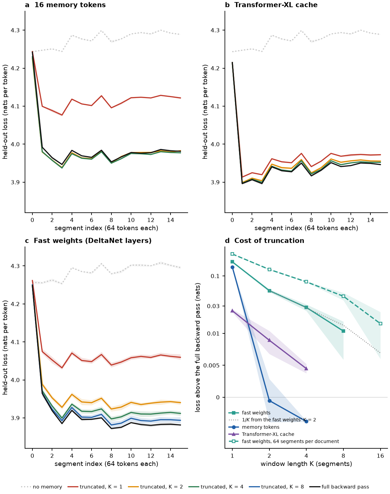

Definitions, all numbers, limits定义、全部数字与局限
On natural text the reach of the credit that matters depends on the carried state: memory tokens need one segment, a Transformer-XL cache loses little at any window, and fast weights lose 0.18 nats at a window of one segment, 0.06 at two and 0.03 at four在自然文本上，起作用的信用需要传多远取决于携带状态：记忆 token 只需要一段，Transformer-XL 缓存在任何窗口下损失都很小，快权重在窗口为一段时损失 0.18 nats，两段时 0.06，四段时 0.03.
Evidence: GPU, FineWeb: 2 to 3 seeds per arm, paired costs reproducible between seeds to 0.005 nats; three workers; the memory-token result was repeated by a second worker at half the tokens; model code audited for all three states (the arms differ by the gradient cut only)证据：GPU，FineWeb：每个实验组 2 到 3 个随机种子，配对代价在随机种子之间可复现到 0.005 nats；三个 worker；记忆 token 的结果由第二个 worker 用一半的 token 数重复过；三种状态的模型代码均已审计（各实验组只在梯度截断处不同）
Setting. A 6-layer GPT (width 384) reads FineWeb documents in 16 segments of 64 tokens and carries a state from one segment to the next. Three kinds of state: 16 memory tokens (the outputs at write slots appended to a segment become the prefix of the next); a Transformer-XL cache (the previous segment's hidden states at every layer); fast weights (two of the six layers are DeltaNet layers, each with 6 key-value matrices of 64 by 64 that a delta rule updates at every token and that persist across segments). Truncated, K trains with one backward pass per $K$ segments and detaches the state at window starts; the full backward pass differentiates through all 16 segments. All arms see the same 786M tokens and take the same 6,000 steps. No memory resets the state at every segment.设置。一个 6 层 GPT（宽度 384）把 FineWeb 文档分成 16 段、每段 64 个 token 来读取，并把状态从一段携带到下一段。状态有三种：16 个记忆 token（附加在一段之后的写入槽处的输出成为下一段的前缀）；Transformer-XL 缓存（上一段在每一层的隐藏状态）；快权重（六层中有两层是 DeltaNet 层，每层有 6 个 64 乘 64 的键值矩阵，由 delta 规则在每个 token 处更新，并跨段保留）。截断，K 每 $K$ 段做一次反向传播，并在窗口起点处分离状态的梯度（detach）；完整反向传播对全部 16 段求导。所有实验组处理相同的 786M 个 token，执行相同的 6,000 步。无记忆在每一段都重置状态。
Held-out loss on the last 8 segments, two seeds per arm; differences are paired by seed. Memory tokens (a): no memory 4.288, $K=1$ 4.118, $K=2$ 3.975, $K=4$ 3.971, full 3.975. Truncation at $K=1$ costs 0.143 nats on both seeds; at $K=2$ the difference from the full backward pass is $+0.003$ and $-0.004$, zero within the seed spread. A second worker repeated this at 3,000 steps and at three segment lengths: at 32, 64 and 128 tokens per segment $K=1$ costs 0.10 to 0.12, 0.11 to 0.13 and 0.09, and $K=2$ is within 0.002 nats of the full backward pass or below it every time ($-0.013$ and $-0.010$ at 32 tokens). The full backward pass is not an upper bound here: it is worse than $K=2$ already in the first segment, which has no memory, by 0.007 to 0.022 nats, more with more segments. With 4 and with 64 memory tokens the picture is the same ($K=1$ costs 0.08 and 0.14 to 0.16, $K=2$ nothing), and on a 12-layer model of width 768 (two seeds) $K=1$ costs 0.10 nats while $K=2$ ends 0.022 and 0.017 below the full backward pass. Where the full backward pass is worse than $K=2$, discounting the gradient through every hand-off by 0.5 repairs it (worker 6: 0.009 to 0.023 nats below the full backward pass in four settings); the cause of the damage is open. The damage is a slower start and not a lasting loss: at 32 tokens per segment and twice the training (6,000 steps) the full backward pass ends 0.009 and 0.007 below $K=2$, where at 3,000 steps it was 0.013 and 0.010 above. So with 32-token segments a window of two does cost a little at full training length, 0.008 nats. In float64 the gradient of the write slots at $K=1$ is exactly zero; the memory then works as an untrained reservoir, and resetting it at evaluation still costs that model 0.25 nats, against 0.40 for the fully trained memory.最后 8 段上的留出损失，每个实验组两个随机种子；差值按随机种子配对。记忆 token（a）：无记忆 4.288，$K=1$ 4.118，$K=2$ 3.975，$K=4$ 3.971，完整反向传播 3.975。$K=1$ 的截断在两个随机种子上的代价都是 0.143 nats；$K=2$ 时与完整反向传播的差为 $+0.003$ 和 $-0.004$，在随机种子间的波动范围内为零。第二个 worker 在 3,000 步和三种段长下重复了这一实验：每段 32、64 和 128 个 token 时，$K=1$ 的代价为 0.10 到 0.12、0.11 到 0.13 和 0.09，而 $K=2$ 每次都与完整反向传播相差不超过 0.002 nats 或低于它（32 个 token 时为 $-0.013$ 和 $-0.010$）。完整反向传播在这里不是上界：在没有记忆的第一段，它就已经比 $K=2$ 差 0.007 到 0.022 nats，段数越多差得越多。使用 4 个和 64 个记忆 token 时情况相同（$K=1$ 的代价为 0.08 和 0.14 到 0.16，$K=2$ 没有代价），在宽度为 768 的 12 层模型上（两个随机种子），$K=1$ 的代价为 0.10 nats，而 $K=2$ 最终比完整反向传播低 0.022 和 0.017。在完整反向传播比 $K=2$ 差的地方，把经过每次交接的梯度按 0.5 折扣可以修复它（worker 6：在四种设置下比完整反向传播低 0.009 到 0.023 nats）；这一损害的原因尚不清楚。这种损害是起步较慢，而不是长久的损失：每段 32 个 token、训练加倍（6,000 步）时，完整反向传播最终比 $K=2$ 低 0.009 和 0.007，而在 3,000 步时它高出 0.013 和 0.010。因此在每段 32 个 token、训练到完整长度时，两段的窗口确实有一点代价，为 0.008 nats。在 float64 下，$K=1$ 时写入槽的梯度恰好为零；此时记忆相当于一个未经训练的储备池（reservoir），在评估时重置它仍会使该模型损失 0.25 nats，而对完全训练的记忆这一数字是 0.40。
Transformer-XL cache (b): the cost is 0.026 and 0.023 at $K=1$, 0.011 and 0.007 at $K=2$, 0.005 and 0.004 at $K=4$, close to $1/K$. The lead read this as the lag kernel halving the weight of one-segment credit at $K=2$ and predicted that scaling the hand-off gradient by $K/(K-1)$ would close the gap. It makes the cache worse at $K=2$, by 0.007 and 0.013 nats with windows aligned to the document start and by 0.009 and 0.010 with a random window offset per document (a second worker); the damage is already present in the first segment, which has no cache. Sliding windows of two segments, which credit every one-segment lag at full weight, give no gain either: $+0.011$ and $+0.011$, the same as plain truncation at $K=2$. So the weight with which a lag is credited does not matter; what matters is which lags receive credit at all, and the cache's cost at window $K$ is the value of credit at lags of $K$ and more (0.016 nats at lag 1, 0.005 at lags 2 to 3, 0.005 beyond).Transformer-XL 缓存（b）：代价在 $K=1$ 时为 0.026 和 0.023，$K=2$ 时为 0.011 和 0.007，$K=4$ 时为 0.005 和 0.004，接近 $1/K$。负责人把这解读为滞后核在 $K=2$ 时把跨一段的信用的权重减半，并预测把交接处的梯度按 $K/(K-1)$ 缩放可以消除这一差距。这一缩放使缓存在 $K=2$ 时变差：窗口与文档起点对齐时差 0.007 和 0.013 nats，每篇文档采用随机窗口偏移时差 0.009 和 0.010（第二个 worker）；这一损害在没有缓存的第一段就已出现。两段的滑动窗口以完整权重为每个一段的滞后分配信用，同样没有增益：$+0.011$ 和 $+0.011$，与 $K=2$ 的普通截断相同。因此，一个滞后以多大权重获得信用并不重要；重要的是哪些滞后获得了信用，而缓存在窗口 $K$ 处的代价就是滞后不小于 $K$ 的信用的价值（滞后 1 为 0.016 nats，滞后 2 到 3 为 0.005，更远为 0.005）。
Fast weights (c): the full backward pass reaches 3.888, 3.884 and 3.885 (three seeds), below the cache (3.941) and the memory tokens (3.975); without a carried state the same model is at 4.298 and 4.305, so the state is worth 0.41 to 0.42 nats. Truncation costs $+0.180$, $+0.176$ and $+0.172$ at $K=1$, $+0.059$ and $+0.053$ at $K=2$, $+0.032$ and $+0.025$ at $K=4$, $+0.016$ and $+0.005$ at $K=8$ (d), and the cost grows along the document for every $K$ (at $K=4$ from 0.008 in the second segment to 0.030 in the last). From two segments on the cost roughly halves with every doubling of the window, the $1/K$ tail that the lag kernel gives when credit at many lags matters; the lead's prediction for $K=8$, written before the run, was $+0.016$ (0.010 to 0.022). The exact adjoint's norm grows in proportion to the number of segments still to come. This is the state of the original note, and the first setting tonight in which natural text itself rewards credit over several segments. The cost grows with the length of the document: with 64 segments per document (worker 2, two seeds, against the exact gradient) it is $+0.244$ and $+0.239$ at $K=1$, $+0.133$ and $+0.126$ at $K=2$, $+0.078$ and $+0.081$ at $K=4$, $+0.051$ and $+0.038$ at $K=8$ and $+0.024$ and $+0.006$ at $K=16$ (dashed in d). On a 12-layer model (two seeds, 3,000 steps) it is $+0.222$ and $+0.212$ at $K=1$, $+0.075$ and $+0.077$ at $K=2$, $+0.037$ and $+0.044$ at $K=4$: no smaller than for the 6-layer model at the same number of steps.快权重（c）：完整反向传播达到 3.888、3.884 和 3.885（三个随机种子），低于缓存（3.941）和记忆 token（3.975）；没有携带状态时同一模型为 4.298 和 4.305，因此该状态值 0.41 到 0.42 nats。截断的代价在 $K=1$ 时为 $+0.180$、$+0.176$ 和 $+0.172$，$K=2$ 时为 $+0.059$ 和 $+0.053$，$K=4$ 时为 $+0.032$ 和 $+0.025$，$K=8$ 时为 $+0.016$ 和 $+0.005$（d），并且对每个 $K$，代价都沿文档增大（$K=4$ 时从第二段的 0.008 增至最后一段的 0.030）。从两段起，窗口每加倍一次代价大致减半，这是当许多滞后上的信用都起作用时滞后核给出的 $1/K$ 尾部；负责人在运行之前写下的对 $K=8$ 的预测是 $+0.016$（0.010 到 0.022）。精确伴随量的范数与尚未到来的段数成正比地增长。这是原始笔记中的状态，也是今晚第一个由自然文本本身奖励跨多段信用的设置。代价随文档长度增大：每篇文档 64 段时（worker 2，两个随机种子，与精确梯度相比），$K=1$ 时为 $+0.244$ 和 $+0.239$，$K=2$ 时为 $+0.133$ 和 $+0.126$，$K=4$ 时为 $+0.078$ 和 $+0.081$，$K=8$ 时为 $+0.051$ 和 $+0.038$，$K=16$ 时为 $+0.024$ 和 $+0.006$（d 中的虚线）。在 12 层模型上（两个随机种子，3,000 步），$K=1$ 时为 $+0.222$ 和 $+0.212$，$K=2$ 时为 $+0.075$ 和 $+0.077$，$K=4$ 时为 $+0.037$ 和 $+0.044$：不比 6 层模型在相同步数下小。
Consequence for the program. With memory tokens a learned boundary signal can gain at most the step from $K=1$ to $K=2$, and credit over one segment is enough for it. With fast weights the cost that remains at $K=2$ and $K=4$ is what a signal with a longer reach could recover. The measurements that follow from this are in finding 2: the exact adjoint restricted to the next 1, 2 or 4 segments as the ceiling for critics of that reach, then learned critics. The comparison of the three states is matched in parameters, not in capacity.对本项目的影响。使用记忆 token 时，学习得到的边界信号最多只能获得从 $K=1$ 到 $K=2$ 这一步的收益，而这只需要跨一段的信用。使用快权重时，在 $K=2$ 和 $K=4$ 仍然存在的代价，是信用范围更长的信号有可能恢复的部分。由此引出的测量见发现 2：先是只取接下来 1、2 或 4 段的精确伴随量，作为具有该信用范围的 critic 的上限，然后是学习得到的 critic。三种状态的比较是在参数量上匹配的，没有在容量上匹配。
2Fast weights: credit past one segment is worth 0.05–0.06 nats使用快权重时，一段以外的信用值 0.05 到 0.06 nats
- Windows of one segment. At the cut we inject the exact gradient of the next $H$ segments only.窗口为一段。在截断处，我们只注入接下来 $H$ 段的精确梯度。
- One segment of exact credit closes 65% of the gap. Four segments close 86%.一段的精确信用弥补了差距的 65%。四段弥补 86%。
- These are ceilings for any critic that reaches $H$ segments.这些是任何信用范围为 $H$ 段的 critic 的上限。
- First valid learned critic on this model: a hindsight critic closes 19 to 26% of the gap. Noise closes none.该模型上第一个有效的学习得到的 critic：事后 critic 弥补了差距的 19% 到 26%。噪声没有弥补任何差距。
- Critics that see only the window gain nothing here. They end within 5% of truncation, like their controls.只看窗口的 critic 在这里毫无收益。它们的结果与截断相差不到 5%，和它们的对照一样。
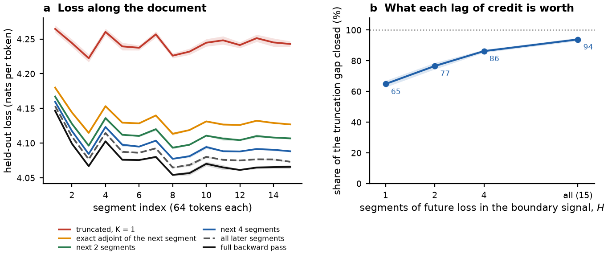
Definitions, all numbers, limits定义、全部数字与局限
With fast weights, one segment of exact future credit at the boundary recovers 65% of what one-segment truncation loses, two segments 77%, four 86% and all later segments 94%: these are the ceilings for learned critics of each reach使用快权重时，在边界处提供一段精确的未来信用，可恢复一段截断所损失的 65%，两段为 77%，四段为 86%，此后所有段为 94%：这些就是具有相应信用范围的学习 critic 的上限.
Evidence: GPU, FineWeb, 2 seeds per arm, 3,000 steps; model and gradient code audited; no learned critic involved证据：GPU，FineWeb，每个实验组 2 个随机种子，3,000 步；模型和梯度代码已审计；不涉及学习得到的 critic
Setting. The fast-weight model of finding 1, trained with one-segment windows. At the end of each window the boundary signal is the exact gradient of the losses of the next $H$ segments with respect to the carried fast weights, tokens held fixed, obtained by backpropagating through those $H$ segments; losses further ahead are dropped. With all later segments this is the exact adjoint. The signal is switched on gradually between steps 300 and 1,000, as for a learned critic. No critic is involved: the arm measures what a critic whose credit reaches $H$ segments could deliver at best. A critic without bootstrap has $H=1$; a temporal-difference critic has the horizon of finding 9; exact targets reach every lag.设置。发现 1 中的快权重模型，用长度为一段的窗口训练。在每个窗口末尾，边界信号是接下来 $H$ 段的损失对携带的快权重的精确梯度，token 保持固定，通过穿过这 $H$ 段的反向传播得到；更远处的损失被丢掉。取此后所有段时，它就是精确伴随量。该信号在第 300 步到第 1,000 步之间逐步启用，与学习得到的 critic 的做法相同。这里不涉及 critic：该实验组测量的是信用范围为 $H$ 段的 critic 最多能提供什么。不用自举的 critic 对应 $H=1$；TD critic 的时间跨度由发现 9 给出；精确目标能达到每个滞后。
At 3,000 steps one-segment truncation is 0.181 and 0.176 nats above the full backward pass (two seeds). The exact adjoint of the next segment closes 67 and 63% of that, of the next two segments 79 and 74%, of the next four 87 and 85%, and of all later segments 95 and 93% (b); the last 5 to 7% is the cost of the gradual switch-on. In nats: credit at lag 1 is worth 0.116, lags 2 to 4 another 0.038, lags beyond 4 another 0.014. The ordering holds at every segment of the document (a). Two of the lead's predictions failed here: that one segment of exact credit would clearly beat a window of two segments (which recovers 67 to 70% at 6,000 steps: the same share), and that four segments would come within 0.01 nats of the full backward pass (0.023 and 0.026).在第 3,000 步，一段截断比完整反向传播高 0.181 和 0.176 nats（两个随机种子）。下一段的精确伴随量弥补了其中的 67% 和 63%，接下来两段的为 79% 和 74%，接下来四段的为 87% 和 85%，此后所有段的为 95% 和 93%（b）；最后的 5% 到 7% 是逐步启用的代价。以 nats 计：滞后 1 处的信用值 0.116，滞后 2 到 4 再加 0.038，滞后超过 4 的再加 0.014。这一次序在文档的每一段上都成立（a）。负责人的两条预测在这里失败：一是一段精确信用会明显优于两段的窗口（后者在第 6,000 步恢复 67% 到 70%：比例相同），二是四段会与完整反向传播相差在 0.01 nats 以内（实际为 0.023 和 0.026）。
3,000 steps and one model size; in the truncation runs the cost at windows of 2 and 4 segments shrinks between 3,000 and 6,000 steps, so the shares may move with training length. Learned critics recover part of this credit, and only with a radial projection. A first pilot (two seeds) had no effect because its critic did not learn at all. A hindsight critic regressed on the exact one-segment adjoint, trained with 8 updates per model step and centred (worker 3, two seeds), reaches a centred batch cosine of 0.33 and 0.36 with the exact boundary term and closes $-1$ and $-8$% of the gap, where its ceiling is 65%. These runs are not a valid test yet: the fast-weight read-out is normalized, the critic's small radial component inflated the state norm about sixfold (as it did in a second worker's bootstrap critic, which ended below truncation), and the radial projection that the memory-token runs use was missing. With the projection (worker 8, two seeds) a hindsight critic with bootstrapped targets, 8 critic updates per step and a centred signal closes 26 and 19% of the gap; the state norm stays at 170, noise of the same norm closes $-2$%, and the critic's in-loop centred cosine is 0.29 and 0.32. That is the first learned signal that recovers credit on this model; it is below the 65% that one segment of exact credit gives, so it does not show credit beyond one segment. A hindsight critic fitted to the exact adjoint of the next two segments, with the projection, closes 23% on its one seed (worker 8; the lead's computation from the raw metrics). Critics that see only the window gain nothing on this model (worker 7, two seeds): $+3$ and $-3$% and $+1$ and $-5$%, where noise and shuffled signals give 0 to $-3$%. A mixture of half the exact one-segment adjoint and half a critic's output closes 43% (worker 3, one seed, no projection), below the 65% of the exact signal alone. On the frozen fast-weight model the missing gradient is also much harder to predict than with memory tokens: critics regressed on the exact adjoint (4,096 held-out documents) reach a centred batch cosine of $-0.05$ from the state, 0.03 with the window and 0.24 with hindsight, where two exact half-batches agree at 0.56 (memory tokens: 0.40, 0.57, 0.65). The test of bootstrapping on natural text is whether a critic trained with temporal-difference targets ends above the 65% that one segment of exact credit gives.3,000 步，一种模型规模；在截断实验中，窗口为 2 段和 4 段时的代价在第 3,000 步到第 6,000 步之间缩小，因此这些比例可能随训练长度变化。学习得到的 critic 恢复了这部分信用中的一部分，而且只有在使用径向投影时才行。第一次试点实验（两个随机种子）没有效果，因为 critic 完全没有学会。在精确的一段伴随量上回归的事后 critic，以模型每步 8 次更新训练并去均值（worker 3，两个随机种子），与精确边界项的去均值批次余弦达到 0.33 和 0.36，弥补了差距的 $-1$% 和 $-8$%，而它的上限是 65%。这些运行还不是有效的检验：快权重的读出经过归一化，critic 的微小径向分量使状态范数膨胀到约六倍（第二个 worker 的自举 critic 也是如此，它最终低于截断），而记忆 token 实验中使用的径向投影在这里缺失。使用投影后（worker 8，两个随机种子），采用自举目标、每步更新 critic 8 次并对信号去均值的事后 critic 弥补了差距的 26% 和 19%；状态范数保持在 170，同样范数的噪声弥补 $-2$%，critic 在闭环内去均值后的余弦为 0.29 和 0.32。这是第一个在该模型上找回信用的学习得到的信号；它低于一段精确信用给出的 65%，因此并不表明有超出一段的信用。一个拟合接下来两段精确伴随量的事后 critic，加上投影后，在它仅有的一个随机种子上弥补 23%（worker 8；由负责人根据原始指标算出）。只看窗口的 critic 在该模型上毫无收益（worker 7，两个随机种子）：$+3$% 和 $-3$%，以及 $+1$% 和 $-5$%，而噪声和打乱的信号为 0 到 $-3$%。一半精确的一段伴随量加一半 critic 输出的混合信号弥补 43%（worker 3，一个随机种子，无投影），低于单用精确信号的 65%。在冻结的快权重模型上，缺失梯度也比用记忆 token 时难预测得多：在精确伴随量上回归的 critic（4,096 篇留出文档）去均值后的批次余弦，只看状态时为 $-0.05$，加上窗口为 0.03，用事后信息为 0.24，而两个精确半批之间为 0.56（记忆 token：0.40、0.57、0.65）。在自然文本上对自举的检验是：用 TD 目标训练的 critic 最终能否高于一段精确信用所给出的 65%。
3A critic predicts the missing gradient better the more it seescritic 看到的越多，对缺失梯度的预测越好
- On a frozen model we fitted critics to the adjoint, the true gradient at the cut.在一个冻结的模型上，我们让 critic 拟合伴随量，即截断处的真实梯度。
- Agreement with the adjoint rises with what the critic sees. The table gives the cosine over 256 documents.critic 看到的越多，与伴随量越一致。下表给出 256 篇文档上的余弦。
- The upper limit is the agreement of two exact gradients computed on different halves of the documents.上限是指：在文档的两个不同半份上分别算出的两个精确梯度之间的一致程度。
- For a single document the fit is poor, 10% of the variance at most. The agreement shows when many documents are summed.对单篇文档拟合很差，至多解释方差的 10%。把许多文档加在一起，一致性才显现出来。
| The critic sees | state | + window | + next segment | upper limit |
|---|---|---|---|---|
| Cosine with the adjoint | 0.52 | 0.64 | 0.69 | 0.72 |
| critic 看到的内容 | 状态 | + 窗口 | + 下一段 | 上限 |
|---|---|---|---|---|
| 与伴随量的余弦 | 0.52 | 0.64 | 0.69 | 0.72 |
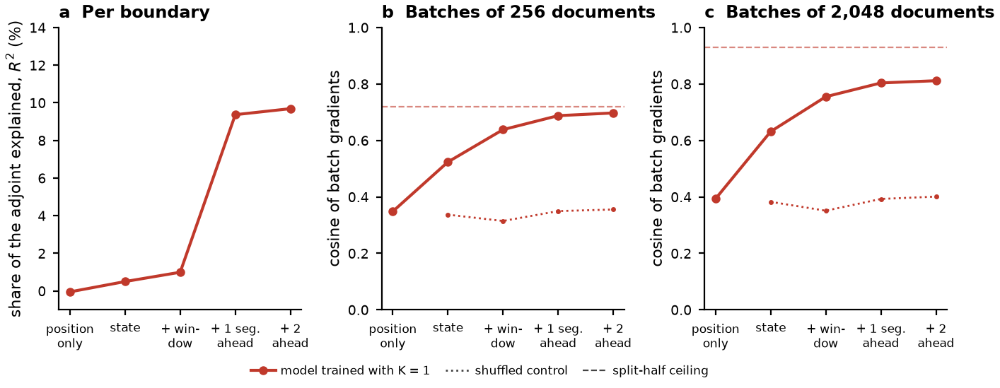
Definitions, all numbers, limits定义、全部数字与局限
On a GPT trained on FineWeb with one-segment windows, a critic recovers more of the missing gradient the more it sees: 0.52 of the batch direction from the state, 0.64 with the window, 0.69 with the next segment, against a ceiling of 0.72在用长度为一段的窗口在 FineWeb 上训练的 GPT 上，critic 看到的越多，恢复的缺失梯度就越多：只看状态时恢复批次方向的 0.52，加上窗口为 0.64，再加上下一段为 0.69，上限为 0.72.
Evidence: GPU, FineWeb, two frozen models (one trained with K=1, one early checkpoint of full training), critics fit on exact adjoints; standard errors about 0.02证据：GPU，FineWeb，两个冻结的模型（一个用 K=1 训练，一个是完整训练的早期检查点），critic 在精确伴随量上拟合；标准误约 0.02
Setting. The 6-layer GPT with 16 memory tokens, trained with one-segment windows, is frozen. The exact boundary adjoint $\lambda$ is computed at every boundary by a chunked backward sweep, and transformer critics are fit to it by regression. The critic sees a constant per segment index (position only); the state; the state and the hidden states of the window; or also the token embeddings of the next one or two segments (hindsight). On held-out documents: the share of $\lambda$ explained per boundary, and the cosine between the parameter gradient that the critic's signal produces and the one the exact adjoint produces, summed over a batch. The shuffled control uses the critic's output for another document; the split-half ceiling is the same cosine between two disjoint batches of exact gradients. The term that truncation drops has 0.84 of the norm of the full gradient in this model.设置。把带 16 个记忆 token、用长度为一段的窗口训练的 6 层 GPT 冻结。在每个边界处用分块反向扫描计算精确边界伴随量 $\lambda$，并用回归把 transformer critic 拟合到它上面。critic 看到的输入分别是：每个段序号一个常数（仅位置）；状态；状态和窗口的隐藏状态；或者再加上接下来一段或两段的 token 嵌入（事后）。在留出文档上测量：逐边界被解释的 $\lambda$ 的份额，以及 critic 的信号产生的参数梯度与精确伴随量产生的参数梯度之间的余弦，梯度在一个批次上求和。打乱对照使用 critic 对另一篇文档的输出；对半上限是两个不相交批次的精确梯度之间的同一种余弦。在这个模型中，截断丢掉的那一项的范数是完整梯度范数的 0.84。
Per boundary the critics explain 0.5% of $\lambda$ from the state, 1.0% with the window, and 9.4 and 9.7% with one and two segments of hindsight (a); the character-level model gave 0.5, 0.6, 10 and 13%. Summed over 256 documents the cosine with the exact term is 0.35 for position only, which is also the level of every shuffled control, 0.52 for the state, 0.64 with the window, 0.69 and 0.70 with hindsight, against a ceiling of 0.72 (b); over 2,048 documents 0.39, 0.63, 0.76, 0.80 and 0.81 against 0.93 (c). So the direction that training needs is largely predictable at the batch level although almost nothing is predictable per boundary, and each added input helps in the order the theory gives. The state-only critic is well above the shuffled level on this model: its reader was never trained against a trained write, so it is far from calibrated, which is the case in which the score identity leaves the state-only signal non-zero. A second segment of lookahead adds almost nothing, in line with the truncation result that credit over one segment is what matters here. On an early checkpoint of full training (step 1,000) the missing gradient is dominated by a direction common to all documents: position only already reaches 0.76 against a ceiling of 0.82, the state and the window critics both reach 0.90, and hindsight 0.91, while per boundary the critics explain 2.5%, 2.5% and 17 to 18%.逐边界来看，critic 只看状态时解释 $\lambda$ 的 0.5%，加上窗口为 1.0%，有一段和两段事后信息时为 9.4% 和 9.7%（a）；字符级模型给出的是 0.5%、0.6%、10% 和 13%。在 256 篇文档上求和后，与精确项的余弦在仅位置时为 0.35，这也是所有打乱对照的水平；只看状态为 0.52，加上窗口为 0.64，有事后信息时为 0.69 和 0.70，上限为 0.72（b）；在 2,048 篇文档上为 0.39、0.63、0.76、0.80 和 0.81，上限为 0.93（c）。因此，训练所需的方向在批次层面上大体可以预测，尽管逐边界几乎无法预测，并且每增加一种输入所带来的帮助符合理论给出的次序。在这个模型上，只看状态的 critic 明显高于打乱对照的水平：它的读取端从未针对经过训练的写入进行训练，因此远未校准，而这正是得分恒等式允许只看状态的信号不为零的情形。第二段前瞻几乎没有增益，这与截断结果一致，即这里起作用的是跨一段的信用。在完整训练的一个早期检查点（第 1,000 步）上，缺失梯度由一个所有文档共有的方向主导：仅位置已达到 0.76，上限为 0.82，只看状态的 critic 和窗口 critic 都达到 0.90，事后 critic 为 0.91，而逐边界来看 critic 解释 2.5%、2.5% 以及 17% 到 18%。
A frozen-model measurement. Training with these critics at $K=1$ on FineWeb: in a first series with the write-slot embeddings trainable (two seeds), the window critic without bootstrap closed 45 and 43% of the gap, injected noise 13 and 21%, and a shuffled critic 12%; the exact adjoint, switched on with the same gradual ramp of its scale as the critics, matched the full backward pass. So noise alone helps there, an optimizer effect (Adam moves parameters that receive only boundary gradient along any consistent signal), and the critic adds 25 to 30 points on top of it. A constant signal blew the state up, and the hindsight critics did worse than the window critic in that series. The controlled series (those embeddings frozen, radial component removed) is due around 03:00.这是在冻结模型上的测量。在 FineWeb 上于 $K=1$ 用这些 critic 进行训练：在写入槽嵌入可训练的第一组实验中（两个随机种子），不用自举的窗口 critic 弥补了差距的 45% 和 43%，注入的噪声弥补了 13% 和 21%，打乱的 critic 弥补了 12%；以与 critic 相同的方式逐步放大幅度后注入的精确伴随量与完整反向传播相当。因此在那里单靠噪声就有帮助，这是一种优化器效应（Adam 会沿任何一致的信号移动那些只接收边界梯度的参数），critic 在此之上再增加 25 到 30 个百分点。常数信号使状态数值爆炸，事后 critic 在这组实验中的表现不如窗口 critic。受控的一组实验（冻结这些嵌入，去掉径向分量）预计在 03:00 左右完成。
4A well-fitted value net has a useless gradient拟合良好的价值网络，梯度没有用
- A value net predicts future loss. The original idea was to use its gradient as the signal at the cut.价值网络预测未来损失。最初的想法是把它的梯度用作截断处的信号。
- On three frozen FineWeb models the value nets fit 41 to 62% of future loss.在三个冻结的 FineWeb 模型上，价值网络拟合了未来损失的 41% 到 62%。
- Their gradients agree with the adjoint at a cosine between $-0.33$ and $+0.19$. The sign changes from model to model.它们的梯度与伴随量的余弦在 $-0.33$ 到 $+0.19$ 之间。符号随模型而变。
- A scalar net trained on the adjoint itself, with the window or the next segment as a side input, reaches 0.69 to 0.87. That equals a vector critic.直接用伴随量训练、并把窗口或下一段作为附加输入的标量网络达到 0.69 到 0.87。这与向量 critic 相当。
- Injected in training, the value gradient does harm at every scale tried. It costs about three gaps at full scale and 0.9 to 1.6 gaps at 3%.在训练中注入时，价值梯度在试过的每个尺度下都有害。全尺度时约差三个差距，尺度为 3% 时差 0.9 到 1.6 个差距。
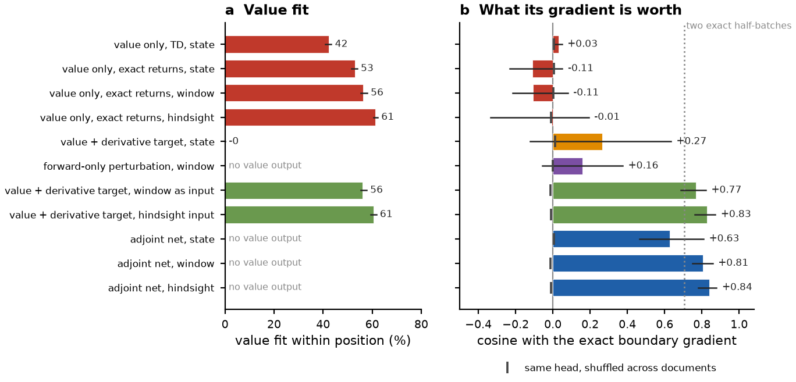
Definitions, all numbers, limits定义、全部数字与局限
On FineWeb, value nets that fit 41 to 62% of the loss-to-go within position have state-gradients whose cosine to the true boundary gradient lies between $-0.33$ and $+0.19$; a scalar net with a derivative target and a detached input reaches 0.69 to 0.87, the level of the adjoint net在 FineWeb 上，拟合了位置内剩余损失 41% 到 62% 的价值网络，其对状态的梯度与真实边界梯度的余弦在 $-0.33$ 到 $+0.19$ 之间；带导数目标和分离梯度的（detached）输入的标量网络达到 0.69 到 0.87，即伴随网络的水平.
Evidence: GPU, FineWeb, three frozen models (two seeds trained with one-segment windows and an early checkpoint of a model trained with the full backward pass); heads fitted on 102,400 documents and scored on 8,192 held-out ones; code audited (all formulas correct; two rows carry stated handicaps)证据：GPU，FineWeb，三个冻结的模型（用长度为一段的窗口训练的两个随机种子，以及一个用完整反向传播训练的模型的早期检查点）；各头在 102,400 篇文档上拟合，在 8,192 篇留出文档上评分；代码已审计（所有公式正确；有两行带有已说明的不利条件）
Setting. The memory-token GPT of the first finding, frozen (worker 4). Each head is fitted on fresh documents and scored on held-out ones. Value only is the proposal of the original note: a scalar net is regressed on the loss-to-go (on exact returns, or by temporal differences) and its gradient with respect to the carried state is the boundary signal. Value + derivative target also regresses that gradient on the exact adjoint. Window as input and hindsight input: the scalar net receives a second, detached input (the window's hidden states; also the next segment's tokens) and is differentiated only in its state argument. Forward-only perturbation: a scalar trained on the loss difference between a perturbed and an unperturbed state on the same tokens. The adjoint net is a vector net regressed on the exact adjoint. Value fit within position is $R^2$ after removing the mean per segment index, which alone explains 94 to 95% of the loss-to-go. The cosine compares the parameter gradient that a head's signal would add at the boundaries of 256 documents with the exact one, after removing the signal's batch mean per segment index.设置。第一条发现中的记忆 token GPT，冻结（worker 4）。每个头在新的文档上拟合，在留出文档上评分。只用价值是原始笔记的方案：把一个标量网络回归到剩余损失上（用精确回报，或者用 TD），并以它对携带状态的梯度作为边界信号。价值 + 导数目标还把该梯度回归到精确伴随量上。以窗口为输入和事后输入：标量网络接收第二个分离梯度的（detached）输入（窗口的隐藏状态；或者再加上下一段的 token），并且只对其状态自变量求导。只用前向传播的扰动：一个标量，在同一组 token 上扰动状态与未扰动状态之间的损失差上训练。伴随网络是回归到精确伴随量上的向量网络。位置内的价值拟合是去掉每个段序号上的均值之后的 $R^2$，仅该均值就解释了剩余损失的 94% 到 95%。余弦比较的是一个头的信号在 256 篇文档的各边界处会加入的参数梯度与精确的参数梯度，比较前先按段序号去掉信号的批内均值。
Three numbers per head: the two models trained with one-segment windows, then the early checkpoint. Value-only nets fit 41 to 62% of the loss-to-go within position (a) and their gradients carry no usable direction (b): with exact returns the cosine is $-0.23$, $-0.14$, $+0.05$ from the state, $-0.19$, $-0.22$, $+0.08$ with the window and $-0.33$, $+0.19$, $+0.12$ with hindsight; with temporal-difference training $+0.01$, $+0.05$, $+0.03$. On the first model all three exact-return values came out opposed to the true gradient, at 8 to 21 times its norm, and an earlier version of this page said so; the second seed and the early checkpoint do not repeat the sign. A state-only scalar with a derivative target gives $+0.29$, $-0.12$, $+0.63$ and its value fit collapses to 0%: on the state alone the two targets conflict. The forward-only perturbation scalar gives $+0.37$, $-0.06$, $+0.15$. With the window or hindsight as a detached input the scalar keeps its value fit (55 to 62%) and its gradient reaches 0.69, 0.82, 0.80 and 0.76, 0.87, 0.85, against 0.75, 0.86, 0.81 and 0.78, 0.88, 0.86 for the adjoint net with the same inputs. Shuffled controls are within 0.05 of zero on the first model; two exact half-batches agree at 0.65 to 0.80. This is the recall result (finding 10) on natural text: the value's accuracy says nothing about its gradient, and the form that works is the adjoint net with a value output.每个头给出三个数：先是用长度为一段的窗口训练的两个模型，然后是早期检查点。只用价值的网络拟合了位置内剩余损失的 41% 到 62%（a），而它们的梯度不携带可用的方向（b）：用精确回报时，余弦在只看状态时为 $-0.23$、$-0.14$、$+0.05$，加上窗口为 $-0.19$、$-0.22$、$+0.08$，有事后信息时为 $-0.33$、$+0.19$、$+0.12$；用 TD 训练时为 $+0.01$、$+0.05$、$+0.03$。在第一个模型上，三个用精确回报的价值所给出的梯度都与真实梯度方向相反，范数是真实梯度的 8 到 21 倍，本页较早的版本也是这样写的；第二个随机种子和早期检查点没有重现这一符号。带导数目标的只看状态的标量给出 $+0.29$、$-0.12$、$+0.63$，其价值拟合塌到 0%：只看状态时两个目标相互冲突。只用前向传播的扰动标量给出 $+0.37$、$-0.06$、$+0.15$。以窗口或事后信息作为分离梯度的（detached）输入时，标量保持其价值拟合（55% 到 62%），其梯度达到 0.69、0.82、0.80 和 0.76、0.87、0.85，而输入相同的伴随网络为 0.75、0.86、0.81 和 0.78、0.88、0.86。在第一个模型上，打乱对照与零相差不超过 0.05；两个精确的半批次之间的一致程度为 0.65 到 0.80。这是回忆任务上的结果（发现 10）在自然文本上的对应：价值的准确度不能说明其梯度的任何情况，有效的形式是带价值输出的伴随网络。
In training the picture is different and is the subject of the next finding: no learned scalar has closed the gap, and the value-only signals do harm: capped at about 1.6 times the adjoint's norm, the gradient of a value trained by temporal differences or on exact returns ends 2.7 to 3.6 gaps below truncation (two seeds; inside the loop these value nets fit almost nothing within position). At 3% of that scale the harm is smaller and still there: 1.4 to 1.6 gaps for the state-only value net, and 0.9 to 1.0 gaps for a value net with a hindsight input, exact returns and a centred signal (two seeds each).在训练中情况不同，这是下一条发现的主题：没有任何学习得到的标量弥补了差距，只用价值的信号则有害：把范数上限设在伴随量范数的约 1.6 倍时，用 TD 训练或在精确回报上训练的价值的梯度最终比截断还差 2.7 到 3.6 个差距（两个随机种子；在闭环内这些价值网络在位置内几乎什么也拟合不了）。在该尺度的 3% 下，损害变小但仍然存在：只看状态的价值网络为 1.4 到 1.6 个差距，带事后输入、用精确回报并去均值的价值网络为 0.9 到 1.0 个差距（各两个随机种子）。
Three frozen models of one architecture; the second seed and the early checkpoint were scored with an earlier version of the diagnostic (head outputs not projected off the radial direction). The temporal-difference value row comes from a fit whose bootstrap target could not converge within the diagnostic's budget, and the perturbation head saw 15 times fewer targets than the others; both rows are lower bounds. The theory says the value gradient contains a term unrelated to credit and gives neither its sign nor its size; the measured sign varies from model to model.同一架构的三个冻结模型；第二个随机种子和早期检查点是用诊断的较早版本评分的（头的输出没有投影掉径向分量）。TD 价值那一行来自一次拟合，其自举目标在诊断的预算内未能收敛；其他头看到的目标数是扰动头的 15 倍；这两行都是下界。理论指出价值梯度含有一个与信用无关的项，但没有给出它的符号和大小；测量到的符号因模型而异。
5In training on FineWeb, the best critic recovers half of the gap在 FineWeb 的训练中，最好的 critic 弥补了差距的一半
- FineWeb, memory tokens, windows of one segment. The gap is the loss between truncation and the full backward pass.FineWeb，记忆 token，窗口为一段。差距是截断与完整反向传播之间的损失之差。
- The exact adjoint closes about 100% of the gap. The best learned critic closes 51 to 55%.精确伴随量弥补约 100% 的差距。最好的学习得到的 critic 弥补 51% 到 55%。
- That critic is a scalar net with a hindsight input. It needed more critic training, a centred signal and a small scale.这个 critic 是带事后输入的标量网络。它需要更多的 critic 训练、去均值的信号和小尺度。
- Without the fixes, critics that looked more accurate on a frozen model did worse.没有这些修正时，在冻结模型上看起来更准确的 critic 表现更差。
- A window of two segments closes the whole gap in less than half the time. With memory tokens a critic has no practical use.两段的窗口用不到一半的时间弥补全部差距。使用记忆 token 时，critic 没有实际用处。
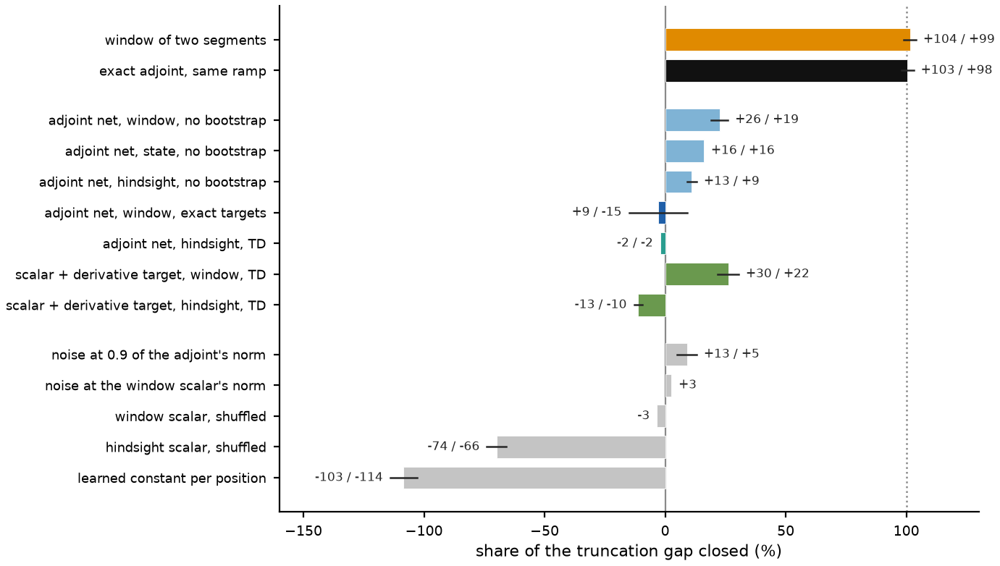
Definitions, all numbers, limits定义、全部数字与局限
On FineWeb with memory tokens, no learned boundary signal has yet recovered the cost of one-segment windows under controls: the best closes 51 to 55% of the gap, a constant push of 0.3% of the adjoint's norm costs the whole gap, and doubling the window recovers all of it在使用记忆 token 的 FineWeb 上，在受控条件下还没有任何学习得到的边界信号恢复长度为一段的窗口的代价：最好的弥补差距的 51% 到 55%，大小为伴随量范数 0.3% 的常数推动的代价相当于整个差距，把窗口加倍则恢复全部差距.
Evidence: GPU, FineWeb, 2 seeds per arm, two workers with bit-identical references; controls as training arms; code audited; the cause is not established: the lead's first explanation was tested and failed证据：GPU，FineWeb，每个实验组 2 个随机种子，两个 worker 的参照结果逐位相同；对照作为训练实验组；代码已审计；原因尚未确定：负责人的第一个解释经检验不成立
Setting. The memory-token GPT of the first finding, trained for 3,000 steps with one-segment windows and a boundary signal that is switched on gradually between steps 200 and 700. The controlled protocol: the write-slot embeddings, which receive gradient only from the boundary term, are frozen in every arm; the signal's radial component is removed (the reader normalizes the state); its norm is capped. The gap is the difference in held-out loss between one-segment truncation and the full backward pass, 0.12 nats here. Shuffled: each document receives the critic's output for another document, which keeps the signal's average over documents and turns its document-specific part into noise. Hindsight critics also see the tokens of the next segment.设置。第一条发现中的记忆 token GPT，用长度为一段的窗口训练 3,000 步，边界信号在第 200 步到第 700 步之间逐步启用。受控规程：写入槽嵌入只从边界项获得梯度，在每个实验组中都冻结；去掉信号的径向分量（读取端会对状态做归一化）；对信号范数设上限。差距是一段截断与完整反向传播之间留出损失的差，这里为 0.12 nats。打乱：每篇文档得到的是 critic 对另一篇文档的输出，这保留了信号在文档上的平均，并把信号中与具体文档有关的部分变成噪声。事后 critic 还能看到下一段的 token。
References: the exact adjoint with the same gradual switch-on closes 103, 98 and 114% of the gap (three seeds), a window of two segments 104 and 99%. Learned signals with critics trained at one update per model step: the window critic without bootstrap 26, 19 and 21%, the window scalar with a derivative target 30 and 22%, the state-only critic 16 and 16%, hindsight critics 13, 9 and 12% without bootstrap, $-2$ and $-2$% with temporal-difference targets, $-13$ and $-10$% in the scalar form; the window critic with exact targets 9, $-15$ and $-2$%. Noise at 0.9 of the adjoint's norm gains 13, 5 and 5%, and the window critic's output for another document 15, 9 and 4%. The order is the reverse of the signals' measured accuracy: the hindsight critics have an in-loop centred cosine of 0.4 to 0.5 with the exact term, the window critics 0.1.参照：以同样方式逐步启用的精确伴随量弥补了差距的 103%、98% 和 114%（三个随机种子），两段的窗口为 104% 和 99%。学习得到的信号，critic 以模型每步更新一次的方式训练：不用自举的窗口 critic 为 26%、19% 和 21%，带导数目标的窗口标量为 30% 和 22%，只看状态的 critic 为 16% 和 16%，事后 critic 不用自举时为 13%、9% 和 12%，用 TD 目标时为 $-2$ 和 $-2$%，标量形式为 $-13$ 和 $-10$%；用精确目标的窗口 critic 为 9%、$-15$% 和 $-2$%。范数为伴随量范数 0.9 倍的噪声带来 13%、5% 和 5% 的增益，窗口 critic 对另一篇文档的输出带来 15%、9% 和 4% 的增益。这一次序与测量到的信号准确度相反：事后 critic 在闭环内与精确项的去均值后余弦为 0.4 到 0.5，窗口 critic 为 0.1。
Two controls show that something other than accuracy decides. A learned constant per position, 0.3% of the adjoint's norm, costs 103 and 114% of the gap. The hindsight scalar given to the wrong document costs 74 and 66%, although Gaussian noise of two to three times its norm gains. Error in the directions that the reader uses is harmful at any size; isotropic noise is not.有两个对照表明，起决定作用的不是准确度。按位置学习的常数，其范数为伴随量范数的 0.3%，代价为差距的 103% 和 114%。把事后标量给错文档，代价为 74% 和 66%，尽管范数为其两到三倍的高斯噪声带来增益。在读取端所用方向上的误差，无论大小都有害；各向同性的噪声则不然。
Three changes help the better-aligned critics (purple in the figure). Training the critic harder: with 8 critic updates per model step the hindsight critic without bootstrap reaches an in-loop $R^2$ of 0.20 and a centred cosine of 0.60, and closes 35, 31 and 33% of the gap (13 and 9% with one update), 39 and 40% with 16 updates and 43 and 40% with 32; with temporal-difference targets the same critic goes from $-2$ and $-2$% to 26 and 20%. This was predicted from a two-line result: a critic biases the gradient only through its distance from the best predictor given its inputs (theory section). A smaller scale: the hindsight scalar closes $-13$ and $-10$% at full scale, 19 and 23% at 0.3, 27 and 31% at 0.1, and 32 and 32% at 0.03, with matched noise at $+1$ and $-3$%; predicted from Adam's per-coordinate normalization. Centring the signal over the batch: 14, 15 and 17%, from $-13$ and $-10$%, against 12 and 7% for noise of the same norm, so centring removes the harm and adds little credit; here the lead had predicted 45 to 65%, and the reading behind that prediction (a shuffled signal is the signal's average over documents) was refuted by the centred shuffled control, which costs 117 and 85%. The exact adjoint itself improves when centred, to 113 and 105% (103 and 98% uncentred on the same seeds), and it is nearly as good at a twentieth of its scale (77 and 78% at 0.05, 89 and 86% at 0.1). It also tolerates unstructured error: with Gaussian noise of twice its norm added it still closes 81 and 80%, and with four times its norm 52%, at a per-document cosine at or below that of the best critic (0.48), which closes 40 to 43%. So what holds the critics back is error that is correlated across documents, the kind the two-line result describes, and neither scale nor independent noise. Unexplained: the window critic with exact targets gets worse with more critic updates ($-17$ and $-18$%). Combining all three changes gives the best result of the night: with 32 critic updates per step, centring and a scale of 0.1, the hindsight scalar closes 51 and 51% of the gap, and 55 and 51% without bootstrap; noise of the same norm closes 0% and the shuffled twin costs 57% (one seed each). The lead had predicted at least 50% for the combination. Two of the three changes alone (8 updates with centring) had given 33, 37 and 42%.有三项改动能帮助对齐得更好的 critic（图中紫色）。更充分地训练 critic：模型每步对 critic 做 8 次更新时，不用自举的事后 critic 的闭环内 $R^2$ 达到 0.20，去均值后的余弦达到 0.60，弥补了差距的 35%、31% 和 33%（每步一次更新时为 13% 和 9%），每步 16 次更新时为 39% 和 40%，32 次时为 43% 和 40%；用 TD 目标时，同一个 critic 从 $-2$% 和 $-2$% 升到 26% 和 20%。这是由一个两行的结果预测到的：critic 只通过它与“给定其输入的最优预测器”之间的距离给梯度带来偏差（见理论部分）。更小的尺度：事后标量在完整尺度下弥补 $-13$% 和 $-10$%，尺度 0.3 时为 19% 和 23%，0.1 时为 27% 和 31%，0.03 时为 32% 和 32%，匹配的噪声为 $+1$% 和 $-3$%；这是由 Adam 的逐坐标归一化预测到的。对批内信号去均值：14%、15% 和 17%，此前为 $-13$% 和 $-10$%，而同样范数的噪声为 12% 和 7%，可见去均值消除了损害，但增加的信用很少；负责人在这里预测的是 45% 到 65%，而该预测背后的解读（打乱的信号就是信号在文档上的均值）被去均值后的打乱对照否定，后者的代价为 117% 和 85%。精确伴随量本身在去均值后也有改善，达到 113% 和 105%（同样的随机种子上不去均值时为 103% 和 98%），并且在尺度缩到二十分之一时仍几乎同样好（尺度 0.05 时为 77% 和 78%，0.1 时为 89% 和 86%）。它也能容忍无结构的误差：加上范数为其两倍的高斯噪声后仍弥补 81% 和 80%，加上四倍范数的噪声后为 52%，而此时它的逐文档余弦不高于最好的 critic（0.48），后者弥补 40% 到 43%。因此，拖住 critic 的是在文档之间相关的误差，也就是那个两行结果所描述的那种，而不是尺度，也不是独立噪声。尚无解释的是：用精确目标的窗口 critic 在 critic 更新次数增多时变差（$-17$% 和 $-18$%）。把三项改动全部合在一起，得到今晚最好的结果：critic 每步更新 32 次、去均值并采用 0.1 的尺度时，事后标量弥补了差距的 51% 和 51%，不用自举时为 55% 和 51%；同样范数的噪声弥补 0%，与之对应的打乱版本的代价为 57%（各一个随机种子）。负责人此前对这一组合的预测是至少 50%。三项改动中只用两项（更新 8 次并去均值）时为 33%、37% 和 42%。
3,000 steps, one model, two seeds. On a character-level model on CPU the same loop gave the opposite picture (hindsight critics best, 65 to 77%), with a different optimizer state and a far smaller memory; the difference is not explained. The statement is that on this model a critic's usefulness in training is not predicted by its accuracy on a frozen model. On the GRU of finding 8 the same remedies were then tried (three seeds): with 8 critic updates per step and a centred signal every window critic reaches 94 to 99% recall, and with the boundary term kept outside Adam (applied by plain gradient descent) the noise, shuffled and constant controls end exactly at truncation instead of below it. That last remedy has not been run on FineWeb yet. Cost, each arm alone on a GPU: a critic at one-segment windows takes 2.2 to 2.4 times the time per step of plain truncation and 7.4 GB of memory, against 9.5 GB for two-segment windows at the speed of truncation and 48 GB for the full backward pass. With memory tokens, where two segments recover everything, a critic has no use even if it worked.3,000 步，一个模型，两个随机种子。在 CPU 上的字符级模型上，同样的闭环给出相反的图景（事后 critic 最好，65% 到 77%），其优化器状态不同，记忆也小得多；这一差别尚无解释。结论是：在这个模型上，critic 在训练中的用处不能由它在冻结模型上的准确度预测。在发现 8 的 GRU 上随后试了同样的补救办法（三个随机种子）：critic 每步更新 8 次并对信号去均值时，每个窗口 critic 的回忆准确率都达到 94% 到 99%；把边界项放在 Adam 之外（用普通梯度下降施加）时，噪声、打乱和常数对照恰好停在截断的水平，而不是低于它。最后这项补救尚未在 FineWeb 上运行。成本，每个实验组单独占用一个 GPU：窗口为一段的 critic 每步用时是普通截断的 2.2 到 2.4 倍，占用 7.4 GB 内存；两段的窗口占用 9.5 GB，速度与截断相同；完整反向传播占用 48 GB。使用记忆 token 时，两段就恢复全部差距，critic 即使有效也没有用处。
6Accurate critics fail because they fit the wrong part准确的 critic 失败，是因为它拟合了错误的部分
- The exact adjoint still works at 5% of its size. It also works with random noise of twice its size added.精确伴随量缩到原大小的 5% 仍然有效。加上两倍于其大小的随机噪声，它也有效。
- So critics do not fail through scale or random error.所以 critic 的失败不是因为尺度，也不是因为随机误差。
- A trained critic matches the large everyday part of the adjoint, with a cosine of 0.5 to 0.9.训练出的 critic 拟合了伴随量中大而日常的部分，余弦为 0.5 到 0.9。
- It misses the small part that carries credit across segments. On a recall task its cosine there is about zero.它漏掉了把信用带过各段的那一小部分。在回忆任务上，它在这一部分上的余弦约为零。
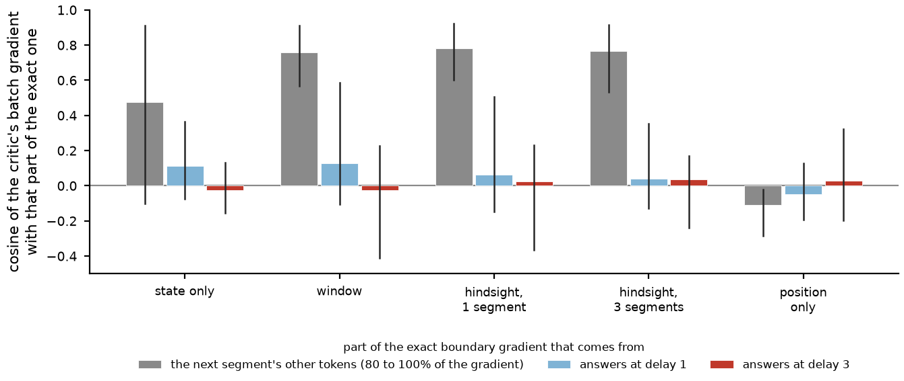
Definitions, all numbers, limits定义、全部数字与局限
A critic regressed on the adjoint captures the part that comes from the next segment's ordinary tokens and none of the part that comes from delayed uses, while the exact adjoint keeps working at 3 to 5% of its scale and under independent noise of two to three times its norm对伴随量做回归的 critic 抓住了来自下一段普通 token 的那部分，完全没有抓住来自延迟使用的那部分；而精确伴随量在其尺度的 3% 到 5% 时仍然有效，在加入范数为其两到三倍的独立噪声时也仍然有效.
Evidence: GPU; two testbeds (FineWeb with memory tokens, 1 to 2 seeds per arm; a memory-token transformer on recall, 2 seeds and six frozen checkpoints); code of both audited; reached by two workers independently证据：GPU；两个实验平台（使用记忆 token 的 FineWeb，每个实验组 1 到 2 个随机种子；回忆任务上的记忆 token transformer，2 个随机种子和六个冻结的检查点）；两者的代码均已审计；由两个 worker 独立得出
Terms. The exact adjoint is degraded on purpose in two ways: multiplied by a small factor, or with Gaussian noise of a multiple of its norm added for each document. The decomposition: the exact boundary gradient is a sum over the later losses it comes from. On the recall task of finding 9 in a memory-token transformer (queries at delays 1 and 3) these are the answers at delay 1, the answers at delay 3, and all other tokens of later segments. The critics in the figure are fitted to convergence on frozen checkpoints, so they are as good as these critics get.术语。精确伴随量以两种方式被有意劣化：乘以一个小的系数，或者对每篇文档加上范数为其若干倍的高斯噪声。分解：精确的边界梯度是对它所来自的各个后续损失的求和。在发现 9 的回忆任务上，使用记忆 token transformer（查询的延迟为 1 和 3），这些部分是延迟 1 的答案、延迟 3 的答案，以及后续各段的所有其他 token。图中的 critic 在冻结的检查点上拟合到收敛，因此这已是这类 critic 能达到的最好水平。
The exact adjoint is robust. On FineWeb with memory tokens it closes 77 and 78% of the gap at 5% of its scale, 81 and 80% with noise of twice its norm added and 52% with four times; the best learned critic, whose cosine with the exact adjoint per document is 0.48, at least as high as that of the noisy signals, closes 40 to 43% (51 to 55% for the scalar critic with all remedies). On the recall task (two seeds) the exact adjoint learns the delay-3 recall at 30, 10 and 3% of its scale (100 and 100%, 100 and 99.5%, 100 and 71%) and with noise of 1 and 3 times its norm (100 and 100%, 100 and 99%); with 3 times its norm its cosine with the clean adjoint is 0.32. A hindsight critic on exact targets has a cosine of 0.43 to 0.50 and stays at chance. Scale and independent error are not what stops the critics.精确伴随量很稳健。在使用记忆 token 的 FineWeb 上，它在其尺度的 5% 时弥补了差距的 77% 和 78%，加入范数为其两倍的噪声时为 81% 和 80%，四倍时为 52%；最好的学习得到的 critic 弥补 40% 到 43%（用上全部补救办法的标量 critic 为 51% 到 55%），它按文档计算与精确伴随量的余弦为 0.48，不低于那些带噪声信号的余弦。在回忆任务上（两个随机种子），精确伴随量在其尺度的 30%、10% 和 3% 时学会了延迟 3 的回忆（100% 和 100%、100% 和 99.5%、100% 和 71%），在加入范数为其 1 倍和 3 倍的噪声时也学会了（100% 和 100%、100% 和 99%）；噪声为其范数的 3 倍时，它与干净伴随量的余弦为 0.32。用精确目标的事后 critic 余弦为 0.43 到 0.50，并停在随机水平。阻碍 critic 的不是尺度，也不是独立误差。
The decomposition shows what does (figure). On six frozen checkpoints the batch boundary gradient is 80 to 100% the part that comes from the other tokens; the part from the delay-3 answers has 6 to 30% of its norm, is nearly orthogonal to it and is a stable direction (two half-batches agree at 0.85 to 0.99). Fitted to convergence, critics that see the window reach a cosine of 0.53 to 0.92 with the other-token part. With the delay-3 part every critic, whatever it sees, lies between $-0.41$ and $+0.23$. A critic that is accurate for the adjoint is accurate for the part that asks the memory to help predict the next segment, and delivers none of the credit for carrying content further. $R^2$, the cosine per document and the cosine of batch gradients all rank critics by the large part.分解显示了真正的原因（见图）。在六个冻结的检查点上，批次边界梯度的 80% 到 100% 是来自其他 token 的那部分；来自延迟 3 答案的那部分，范数为它的 6% 到 30%，与它近乎正交，并且是一个稳定的方向（两个半批次的一致度为 0.85 到 0.99）。拟合到收敛后，能看到窗口的 critic 与其他 token 部分的余弦达到 0.53 到 0.92。对延迟 3 部分，每个 critic 无论看到什么，余弦都在 $-0.41$ 到 $+0.23$ 之间。对伴随量准确的 critic，准确的是要求记忆帮助预测下一段的那部分，而完全不提供把内容带得更远的信用。$R^2$、按文档的余弦和批次梯度的余弦，都是按大的那部分给 critic 排序的。
The decomposition was measured on the recall task; on FineWeb the split of the adjoint by the lag of the loss has not been made for the critics. This fits the two-line result of the theory section (a critic's bias is its distance from the best predictor given its inputs, and that distance can sit entirely in a small part of the target). The remedy it suggests, one head per lag with its own normalization, was proposed at 05:08 and has not been run.分解是在回忆任务上测量的；在 FineWeb 上，还没有针对 critic 把伴随量按损失的滞后拆分。这与理论部分的两行结果相符（critic 的偏差是它与给定其输入时最佳预测器之间的距离，而这一距离可以完全落在目标的一小部分上）。由此想到的补救办法是每个滞后一个头、各自归一化；它于 05:08 提出，尚未运行。
7A critic that sees only the state cannot credit storing只看状态的 critic 无法为存储分配信用
- Proved: for a well-calibrated model, the expected gradient given the carried state is zero.已证明：对校准良好的模型，给定携带状态时的期望梯度为零。
- So a function of the state alone carries no credit for storing new content. It can carry credit for keeping what is stored.所以只依赖状态的函数不携带存储新内容的信用。它可以携带保持已存内容的信用。
- Check on a frozen GPT: a probe predicts none of the gradient from the hidden state, and 45% with the next 64 tokens.在冻结的 GPT 上检验：探针从隐藏状态预测不出任何梯度，加上接下来的 64 个 token 后预测出 45%。
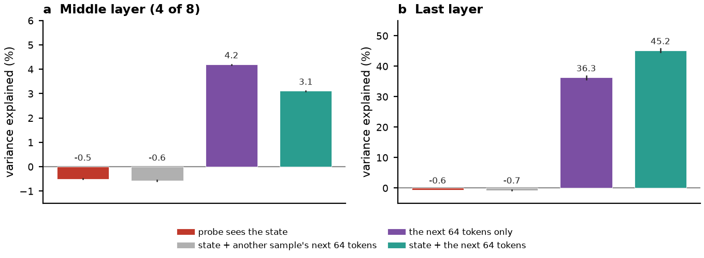

Definitions, all numbers, limits定义、全部数字与局限
A boundary signal that sees only the carried state carries no credit for storing new information once the reader is calibrated一旦读取端已校准，只看携带状态的边界信号不携带任何存储新信息的信用.
Evidence: score identity proved and audited (exact enumeration to 1e-13); design consequences derived; confirmed on a frozen 8-layer GPT (probe, 2 seeds) and on a small trained recurrent net; closed-form toy below证据：得分恒等式已证明并经审计（精确枚举验证到 1e-13）；设计上的推论已推导；已在一个冻结的 8 层 GPT（探针，2 个随机种子）和一个小型已训练循环网络上得到确认；闭式玩具模型见下
Terms. The boundary signal $g$ replaces the gradient that truncated backpropagation drops at the cut. $B=\mathrm{d}s_{\text{end}}/\mathrm{d}\theta$ is how the parameters move the state at the cut through the window, and $\lambda$ is the exact gradient of the future loss with respect to that state. The true missing term is $\mathbb{E}[B^\top\lambda]$. A model is calibrated given its inputs when its predicted next-token distribution equals the true distribution given the carried state and the tokens of the current segment, which is what training on cross-entropy drives the reader toward.术语。边界信号 $g$ 用来替代截断反向传播在截断点丢掉的梯度。$B=\mathrm{d}s_{\text{end}}/\mathrm{d}\theta$ 描述参数如何通过窗口改变截断点处的状态，$\lambda$ 是未来损失对该状态的精确梯度。真正缺失的项是 $\mathbb{E}[B^\top\lambda]$。如果模型预测的下一个 token 的分布等于给定携带状态和当前段 token 时的真实分布，就称模型在给定其输入时是校准的；用交叉熵训练会把读取端推向这一状态。
For cross-entropy and any information set $\mathcal{G}$ that contains the state, $$\mathbb{E}[\nabla_{s}\ell\mid\mathcal{G}]=\nabla_s\,\mathbb{E}\big[\mathrm{KL}\big(P(\cdot\mid\mathcal{G})\,\|\,p_\theta(\cdot\mid s)\big)\mid\mathcal{G}\big].$$ With $\mathcal{G}$ the state alone and a calibrated reader the divergence is at its minimum, so the expected read gradient given the state is zero. Three regimes follow. If the state is a sufficient summary of its history, truncation is already unbiased and there is nothing to restore. If the state is lossy and later states keep what it holds, the ideal state-only signal is exactly zero and the missing term is all covariance, $\mathbb{E}[B^\top\lambda]=\mathbb{E}[\mathrm{Cov}(B,\lambda\mid s)]$: the write Jacobian and the future's demand are linked through window content that the state does not hold, and a function of the state cannot see that link. If later states also lose information, a state-only signal restores the credit for retaining what is already stored, and nothing for storing more. In an enumerated example the expected gradient given the state is $2\times10^{-13}$ while the true write gradient has norm 0.13, and a critic that sees the window reproduces it to $10^{-10}$. This matches an earlier probe result on this question: the energy of the future gradient was predictable from the hidden state ($R^2\approx0.46$) and its signed direction was not ($R^2\approx0.015$). In a closed-form linear-quadratic recall toy (figure), a critic that sees the end state leaves 57 to 83% of the bias when the state is lossy; adding the window's tokens as an input brings it to 1% in the hardest case; and when training starts from a weak, lossy memory every state-only signal, including the exact expected adjoint, ends at the no-memory loss of 6.50 while the full backward pass reaches 0.50. On a trained network: in the recurrent net of the recall experiments, with a noisy gated state that does not hold the current item and the reader re-fitted to convergence, a state-only critic fitted on 20,000 documents explains none of the exact adjoint ($R^2$ $-0.001$ and $0.001$ at two checkpoints) and returns 0% and 0.2% of the gradient of the write gate; a critic that also sees the window returns 100% and 98% of it and reaches a batch cosine of 0.73 and 0.98. When the same net holds the item in its state, the state-only and the window critics agree to within 0.01, and re-fitting the reader removes 88 to 94% of what the state-only critic could predict.对交叉熵损失和任何包含状态的信息集 $\mathcal{G}$，有 $$\mathbb{E}[\nabla_{s}\ell\mid\mathcal{G}]=\nabla_s\,\mathbb{E}\big[\mathrm{KL}\big(P(\cdot\mid\mathcal{G})\,\|\,p_\theta(\cdot\mid s)\big)\mid\mathcal{G}\big].$$ 当 $\mathcal{G}$ 只含状态且读取端已校准时，该散度取最小值，因此给定状态时读取梯度的期望为零。由此分出三种情形。若状态是其历史的充分概括，截断已经是无偏的，没有需要恢复的东西。若状态有损，而后续状态保留了它所含的内容，则理想的只看状态的信号恰好为零，缺失项全部是协方差，$\mathbb{E}[B^\top\lambda]=\mathbb{E}[\mathrm{Cov}(B,\lambda\mid s)]$：写入 Jacobian 与未来的需求通过状态未保存的窗口内容联系在一起，而状态的函数看不到这一联系。若后续状态也会丢失信息，只看状态的信号能恢复保持已存内容的信用，但恢复不了存入更多内容的信用。在一个枚举算例中，给定状态时的期望梯度为 $2\times10^{-13}$，而真实写入梯度的范数为 0.13，看到窗口的 critic 能将其复现到 $10^{-10}$ 的精度。这与此前关于该问题的一个探针结果一致：未来梯度的能量可以由隐藏状态预测（$R^2\approx0.46$），其带符号的方向则不能（$R^2\approx0.015$）。在一个闭式的线性二次回忆玩具模型中（见图），当状态有损时，看到末端状态的 critic 留下 57% 到 83% 的偏差；把窗口的 token 也作为输入后，在最难的情形下偏差降到 1%；当训练从一个弱而有损的记忆出发时，所有只看状态的信号（包括精确的期望伴随量）最终都停在无记忆时的损失 6.50，而完整反向传播达到 0.50。在已训练的网络上：在回忆实验的循环网络中，状态带噪声和门控、不保存当前条目，读取端重新拟合至收敛，此时用 20,000 篇文档拟合的只看状态的 critic 完全不能解释精确伴随量（两个检查点上 $R^2$ 为 $-0.001$ 和 $0.001$），只恢复了写入门梯度的 0% 和 0.2%；同时还看到窗口的 critic 恢复了其中的 100% 和 98%，批次余弦达到 0.73 和 0.98。当同一网络把条目保存在状态中时，只看状态的 critic 与窗口 critic 的结果相差不超过 0.01，重新拟合读取端则去掉了只看状态的 critic 原本能预测的内容的 88% 到 94%。
On a GPT (first figure; worker 3): an 8-layer GPT from ordinary pretraining on FineWeb, frozen. The target is the gradient of the mean loss of the next 512 tokens with respect to one hidden state; a probe network is fitted on 19,200 samples from training text and scored on 4,800 held-out ones; two model seeds. From the hidden state the probe explains $-0.5$% and $-0.6$% of the gradient's variance (middle and last layer), the same as with the next tokens of another sample ($-0.6$%, $-0.7$%). With the true next 64 tokens it explains 45% at the last layer and 3% at the middle layer (8% with four times the samples). The hidden state says nothing about the signed gradient of the future loss; the future text does.在 GPT 上（第一幅图；worker 3）：一个在 FineWeb 上经普通预训练得到的 8 层 GPT，冻结。目标是接下来 512 个 token 的平均损失对一个隐藏状态的梯度；探针网络在取自训练文本的 19,200 个样本上拟合，在 4,800 个留出样本上评分；两个模型随机种子。只用隐藏状态时，探针解释了梯度方差的 $-0.5$% 和 $-0.6$%（中间层和最后一层），与换用另一个样本的后续 token 时相同（$-0.6$%、$-0.7$%）。用真实的接下来 64 个 token 时，它在最后一层解释 45%，在中间层解释 3%（样本数为四倍时为 8%）。隐藏状态不能说明未来损失的带符号梯度的任何情况；未来的文本则可以。
The GPT probe is on hidden states of an ordinary transformer, where the identity applies position by position; for a carried state the same test is the frozen-model diagnostic of finding 3, where a model trained with one-segment windows is far from calibrated and the state-only critic does carry signal. The toy uses oracle critics: it says which conditioning makes the target well defined.GPT 探针针对的是普通 transformer 的隐藏状态，在那里该恒等式逐位置成立；对于携带状态，同样的检验就是发现 3 中的冻结模型诊断，在那里用长度为一段的窗口训练的模型远未校准，只看状态的 critic 确实携带信号。玩具模型使用的是 oracle critic：它说明的是以哪些量为条件时目标是良定义的。
8On recall tasks a critic works only if it sees the window在回忆任务上，critic 只有看到窗口才有效
- The task: show an item, ask for it some blocks later. Windows of one block.任务：展示一个条目，若干个块之后再询问它。窗口为一个块。
- On a GRU, critics that see only the state end at 14% recall, the same as truncation.在 GRU 上，只看状态的 critic 的回忆准确率最终为 14%，与截断相同。
- Critics that see the window reach 57 to 98% on average. The three controls stay near chance, at 13 to 16%.能看到窗口的 critic 平均达到 57% 到 98%。三种对照停在接近随机的水平，为 13% 到 16%。
- Two independent programs, one on CPU and one on GPU, agree.两个独立的程序结果一致，一个在 CPU 上，一个在 GPU 上。
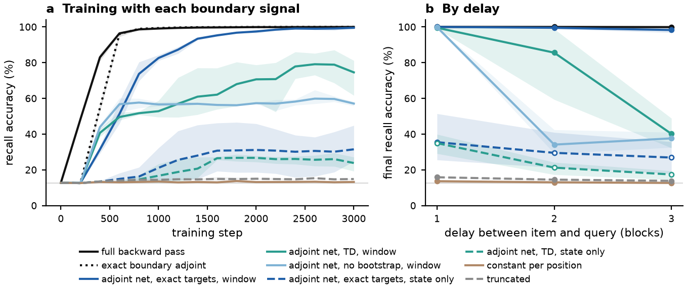

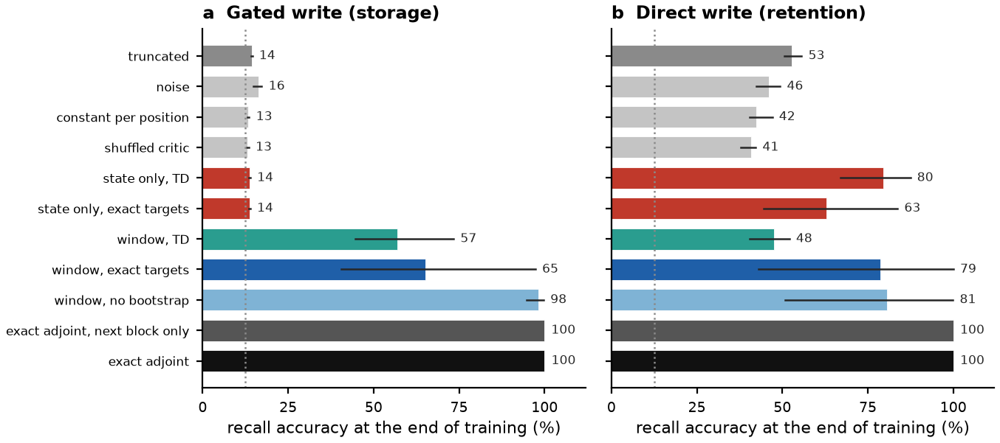
Definitions, all numbers, limits定义、全部数字与局限
On delayed recall with one-block windows, a critic that sees the window recovers the full backward pass with exact targets, two delays with temporal-difference targets and one delay without the bootstrap; state-only critics recover little在窗口为一个块的延迟回忆任务上，看到窗口的 critic 用精确目标时恢复到完整反向传播的水平，用 TD 目标时恢复两个延迟，不用自举时恢复一个延迟；只看状态的 critic 恢复得很少.
Evidence: CPU, small recurrent net: 3 seeds per arm, signal-norm cap on every critic, same warm-up for the exact-adjoint arm; code path audited (no leak into critic inputs). Replicated on GPU with a GRU in a second implementation: 5 seeds, noise, shuffled and constant controls as training arms; that code is audited too (numbers reproduce; controls matched in norm to the state-only critic, run after the audit, confirm its result on 5 seeds). One task family证据：CPU，小型循环网络：每个实验组 3 个随机种子，每个 critic 都设信号范数上限，精确伴随量组采用相同的预热；代码路径已审计（critic 的输入中没有泄漏）。已在 GPU 上用 GRU 以第二个实现复现：5 个随机种子，噪声、打乱和常数对照作为训练实验组；该代码也已审计（数字可以重现；审计之后补做的、范数与只看状态的 critic 相匹配的对照，在 5 个随机种子上证实了它的结果）。一个任务族
Setting. A tanh recurrent net (48 units) reads one item per block and must output the item shown 1, 2 or 3 blocks earlier (the delay is drawn per document). The item enters the state through a learned gate that starts near zero, and Gaussian noise is added to the state at every block, so that at the start the state does not hold the item: the net has to learn to store, then to retain. Training uses windows of one block ($K=1$), where truncation gives the write path no gradient. Arms: the full backward pass; the exact boundary adjoint from a chunked sweep; an adjoint net that sees the state and the window, trained on exact (Monte Carlo) targets, on temporal-difference targets, or on the next block's own gradient with the bootstrap term removed; the same nets seeing the state only; a constant per position; truncation. Chance is 12.5%.设置。一个 tanh 循环网络（48 个单元）每个块读入一个条目，并且必须输出 1、2 或 3 个块之前出现的条目（延迟按文档抽取）。条目通过一个学习得到的门进入状态，该门的初值接近零，并且每个块都向状态加入高斯噪声，因此开始时状态不保存条目：网络必须先学会存储，再学会保持。训练使用长度为一个块的窗口（$K=1$），此时截断不给写入路径任何梯度。实验组：完整反向传播；由分块扫描得到的精确边界伴随量；看到状态和窗口的伴随网络，分别用精确（Monte Carlo）目标、TD 目标、或去掉自举项后下一个块自身的梯度来训练；只看状态的同样的网络；每个位置一个常数；截断。随机水平为 12.5%。
Recall accuracy after 3,000 steps, three seeds, mean of the last two evaluations. Full backward pass 99.9 to 100%; exact adjoint 100%; window critic with exact targets 98.6 to 99.8%; with temporal-difference targets 65 to 84%; without the bootstrap 58 to 60%; state-only critics 21 to 43%; constant per position 13%; truncation 15%. Panel b shows what each target reaches, by delay at the last evaluation. Without the bootstrap the critic credits storage for the next block only: 100% at delay 1 and 29 to 40% at delays 2 and 3. The bootstrap adds the credit for retaining what is already stored: delay 2 rises to 98 to 99% on two seeds and 52% on the third, and delay 3 stays at 30 to 40%. Exact targets reach every delay (98 to 100%). This is the order the theory gives: storage credit up to the target's own horizon, retention credit through the bootstrap, everything with Monte Carlo targets. The state-only critics inject small signals (run means under 10% of the norm of the exact adjoint, cap never binding) and end far below the window critics on every seed.3,000 步后的回忆准确率，三个随机种子，取最后两次评估的均值。完整反向传播 99.9% 到 100%；精确伴随量 100%；用精确目标的窗口 critic 98.6% 到 99.8%；用 TD 目标 65% 到 84%；不用自举 58% 到 60%；只看状态的 critic 21% 到 43%；每个位置一个常数 13%；截断 15%。子图 b 按延迟显示每种目标在最后一次评估时能达到的范围。不用自举时，critic 只为下一个块分配存储信用：延迟 1 处为 100%，延迟 2 和 3 处为 29% 到 40%。自举加入了保持已存内容的信用：延迟 2 在两个随机种子上升到 98% 到 99%，在第三个随机种子上为 52%，延迟 3 停留在 30% 到 40%。精确目标能达到每个延迟（98% 到 100%）。这正是理论给出的次序：存储信用最远到目标自身的时间跨度，保持信用通过自举获得，用 Monte Carlo 目标则得到全部信用。只看状态的 critic 注入的信号很小（各次运行的均值低于精确伴随量范数的 10%，上限从未生效），在每个随机种子上最终都远低于窗口 critic。
An independent replication on GPU (third figure; worker 8, own code): a GRU of width 256 on delayed copy with delays 1 to 4, one-block windows, the write-slot parameters frozen in every arm, 5 seeds, and all three controls as training arms. With a gated write, where storing an item needs credit: truncation 14%, noise 16%, constant per position 13%, shuffled critic 13%, state-only critics 14% with either target; window critics 98% (no bootstrap), 65% (exact targets) and 57% (temporal difference); exact adjoint 100%, also when restricted to the next block. With a direct write, where the item reaches the state without help and only its retention needs credit, the state-only critic works: 80% with temporal-difference targets against 53% for truncation and 41 to 46% for the controls. Both halves are what the score identity says: a function of the state carries retention credit and no storage credit. In the same code an LSTM failed as a testbed: its unbounded cell was inflated by the critics and by the shuffled and constant controls (norm 220 to 700 against 17 to 26), and most arms ended below truncation.GPU 上的一次独立复现（第三幅图；worker 8，使用自己的代码）：一个宽度为 256 的 GRU 做延迟复制，延迟为 1 到 4，窗口为一个块，写入槽参数在每个实验组中都冻结，5 个随机种子，三种对照都作为训练实验组。在门控写入的情形下，存储一个条目需要信用：截断 14%，噪声 16%，每个位置一个常数 13%，打乱的 critic 13%，只看状态的 critic 在两种目标下都是 14%；窗口 critic 为 98%（不用自举）、65%（精确目标）和 57%（TD）；精确伴随量 100%，只取下一个块时也是如此。在直接写入的情形下，条目无需帮助就能进入状态，只有对它的保持需要信用，这时只看状态的 critic 有效：用 TD 目标时为 80%，而截断为 53%，各对照为 41% 到 46%。这两部分结果都与得分恒等式的结论一致：状态的函数携带保持信用，不携带存储信用。在同一套代码中，LSTM 作为测试平台失败了：它的无界单元状态被各 critic 以及打乱对照和常数对照撑大（范数为 220 到 700，相对于 17 到 26），大多数实验组最终低于截断。
One small architecture and one task family on a CPU. The value gradient of a scalar net and the Sobolev forms were not rerun under the same controls. On a single fixed delay of 3 blocks from a cold start the learned critics were slow in the earlier runs (13 to 56% after 3,000 steps on the weak-memory variant, up to 90% with exact targets on the gated one, against 100% for the exact adjoint). For the GRU the audit adds two limits: the state-only critic's gain on the direct write holds under Adam and not under SGD with momentum (44% against 64% for truncation), and when the write-slot parameters are trained by SGD the state-only critic does open the gate partly (43 to 49%); the theory gives exactly zero storage credit only for a calibrated reader.CPU 上的一个小型架构和一个任务族。标量网络的价值梯度和各种 Sobolev 形式没有在同样的控制条件下重新运行。在从冷启动开始、单一固定延迟为 3 个块的任务上，学习得到的 critic 在此前的运行中学得很慢（3,000 步后，在弱记忆变体上为 13% 到 56%，在门控变体上用精确目标时最高为 90%，而精确伴随量为 100%）。对 GRU，审计补充了两点限制：只看状态的 critic 在直接写入上的增益在 Adam 下成立，在带动量的 SGD 下不成立（44%，而截断为 64%）；当写入槽参数用 SGD 训练时，只看状态的 critic 确实会部分地打开门（43% 到 49%）；理论只对校准的读取端给出恰好为零的存储信用。
9Bootstrapped credit reaches only as far as the critic sees自举得到的信用只能传到 critic 看得到的范围
- A critic trained by bootstrapping sees $M$ past windows of $K$ segments and $H$ future segments.用自举训练的 critic 能看到 $M$ 个过去的窗口（每个 $K$ 段）和 $H$ 个未来的段。
- It can credit a use of stored content up to $MK+H$ segments later, and no further.已存内容在之后被用到时，它最远能为 $MK+H$ 段之后的使用分配信用，再远就不行。
- On a small recurrent net with delays 2, 3 and 4, critics learn exactly when their reach covers the delay.在小型循环网络上，延迟为 2、3 和 4 时，critic 恰好在其信用范围覆盖延迟时学会任务。
- Not reproduced on a transformer yet. There no critic learned the long delay at all.尚未在 transformer 上复现。在那里，没有任何 critic 学会长延迟。


Definitions, all numbers, limits定义、全部数字与局限
With temporal-difference targets a critic credits stored content up to a lag of $MK+H$ segments; with Monte Carlo targets, at every lag用 TD 目标时，critic 对已存内容的信用分配最远到滞后 $MK+H$ 段；用 Monte Carlo 目标时，在所有滞后上都能分配.
Evidence: derived and audited; exact enumeration matches in all 27 cases; confirmed in a learned loop on fixed delays 2, 3 and 4 (CPU, small recurrent net, 3 seeds per arm, about 150 runs)证据：已推导并经审计；精确枚举在全部 27 种情形下相符；已在固定延迟为 2、3 和 4 的学习闭环中得到确认（CPU，小型循环网络，每个实验组 3 个随机种子，约 150 次运行）
Terms. Monte Carlo targets are exact boundary adjoints from a chunked backward sweep over the rest of the document. Temporal-difference targets are the adjoint of the next window's own losses plus the critic's prediction at the next boundary, the bootstrap. $K$ is the window length, $M$ the number of past windows whose hidden states the critic sees as a detached cache, $H$ the number of future segments whose tokens (inputs and targets) it sees. Storage credit is the part of the gradient that rewards writing something into the state for a later use.术语。Monte Carlo 目标是对文档剩余部分做分块反向扫描得到的精确边界伴随量。TD 目标是下一个窗口自身损失的伴随量，加上 critic 在下一个边界处的预测，即自举项。$K$ 是窗口长度；$M$ 是过去窗口的个数，critic 把这些窗口的隐藏状态作为分离梯度的（detached）缓存来看；$H$ 是未来段的个数，critic 能看到这些段的 token（输入和目标）。存储信用是梯度中奖励为日后使用而把内容写入状态的那一部分。
At each bootstrap step the next critic knows the current window only through the state that was written. Whatever the window contained and the state did not keep is invisible to it, so the credit for storing that content is dropped at that step. The exact rule: the loss at segment $r$ credits the write correctly iff $r\le b+MK+H-1$, with $b$ the boundary. In the second figure ($K=1$, exact enumeration of a small recall problem with a lossy state and a calibrated reader) a use at lag 2 is credited with temporal-difference targets by a two-window cache or one segment of lookahead and gets nothing from the plain window critic; lag 3 needs two segments of lookahead. With Monte Carlo targets every critic that sees the window is exact. The state-only critic has 100% error throughout. Under a calibrated reader the bootstrap term of a window critic contributes retention credit only.在每个自举步，下一个 critic 只能通过已写入的状态了解当前窗口。窗口中包含而状态没有保留的内容对它不可见，因此存储这部分内容的信用在这一步被丢掉。精确的规则是：段 $r$ 处的损失能正确地给写入分配信用，当且仅当 $r\le b+MK+H-1$，其中 $b$ 为边界。在第二幅图中（$K=1$，对一个状态有损、读取端已校准的小型回忆问题做精确枚举），用 TD 目标时，滞后为 2 的使用可以由两个窗口的缓存或一段前瞻获得信用，而从普通的窗口 critic 那里得不到任何信用；滞后 3 需要两段前瞻。用 Monte Carlo 目标时，每个看到窗口的 critic 都是精确的。只看状态的 critic 的误差始终为 100%。在读取端已校准的情况下，窗口 critic 的自举项只贡献保持信用。
In a learned loop (first figure): the recurrent net of the recall experiments, trained from a cold start with one-block windows on a task in which every query asks for the item shown $d$ blocks earlier, so that nothing rewards storing an item before $d$ blocks have passed; 3 seeds per arm. With $d=3$, critics with temporal-difference targets and a horizon of 1 or 2 blocks (window only; cache of 2 windows; window plus 1 block of lookahead) stay at chance, 12 to 14% in all 9 runs. Critics with a horizon of 3 or 4 learn: cache of 3 windows 100 / 80 / 99%, cache of 4 windows 74 / 74 / 96%, window plus 2 blocks of lookahead 75 / 100 / 80%, plus 3 blocks 100 / 75 / 88%. The threshold moves with the delay (c). With $d=2$ the window critic stays at 16 to 18%, and a cache of 2 windows or one block of lookahead reaches 100% on all seeds. With $d=4$ a cache of 3 windows stays at 13 to 14% and a cache of 4 reaches 62 / 100 / 61% (the critic with exact targets reaches 42 / 87 / 36% there in 3,000 steps, so this delay is hard for every learned critic). The scalar form obeys the same rule: at $d=3$ a value net with derivative targets, temporal-difference training and a cache of 3 windows reaches 77 / 87 / 99%, with the window only 13%; the forward-only scalar trained on perturbed states stays at chance with the same cache (12 to 13%). Without the bootstrap term the critics stay at chance whatever they see (13 to 15%, cache of 4 windows or 3 blocks of lookahead included), so the bootstrap is what carries storage credit beyond one block. A lookahead that contains the future queries without their answers also stays at chance (13 to 14%, 6 runs): the lookahead has to contain what determines the looked-ahead losses, which for a language model is the same tokens. The window critic with exact targets reaches 100%, as do the exact adjoint and the full backward pass; truncation stays at 14%. Inside its horizon the temporal-difference critic is slower than the one with exact targets: 5 of 12 such runs are above 90% at step 3,000 against 3 of 3. When instead every block draws its query delay from 1 to 4, all window critics learn every delay, also without the bootstrap (94 to 100%): each item is then useful one block later with some probability, and one-block credit chains from block to block. Long-range credit is needed only when short-range uses are absent, which is also what the truncation result on FineWeb says.在学习的闭环中（第一幅图）：回忆实验中的循环网络从冷启动开始、用一个块的窗口训练，任务中每次查询都要求给出 $d$ 个块之前出现的条目，因此在 $d$ 个块过去之前没有任何东西奖励存储条目；每个实验组 3 个随机种子。$d=3$ 时，用 TD 目标且时间跨度为 1 或 2 个块的 critic（只有窗口；2 个窗口的缓存；窗口加 1 个块的前瞻）停留在随机水平，全部 9 次运行都在 12% 到 14%。时间跨度为 3 或 4 的 critic 学会了任务：3 个窗口的缓存 100 / 80 / 99%，4 个窗口的缓存 74 / 74 / 96%，窗口加 2 个块的前瞻 75 / 100 / 80%，加 3 个块 100 / 75 / 88%。阈值随延迟移动（c）。$d=2$ 时窗口 critic 停留在 16% 到 18%，2 个窗口的缓存或一个块的前瞻在所有随机种子上都达到 100%。$d=4$ 时，3 个窗口的缓存停留在 13% 到 14%，4 个窗口的缓存达到 62 / 100 / 61%（在这一延迟下，用精确目标的 critic 在 3,000 步内达到 42 / 87 / 36%，因此这一延迟对每个学习得到的 critic 都很难）。标量形式遵循同样的规则：$d=3$ 时，带导数目标、用 TD 训练并有 3 个窗口缓存的价值网络达到 77 / 87 / 99%，只有窗口时为 13%；在扰动状态上训练、只用前向传播的标量在同样的缓存下停留在随机水平（12% 到 13%）。没有自举项时，无论 critic 看到什么都停留在随机水平（13% 到 15%，包括 4 个窗口的缓存或 3 个块的前瞻），因此把存储信用传到一个块之外的正是自举。只包含未来查询而不包含其答案的前瞻同样停留在随机水平（13% 到 14%，6 次运行）：前瞻必须包含决定被前瞻的那些损失的内容，对语言模型而言这些内容就是同一批 token。用精确目标的窗口 critic 达到 100%，精确伴随量和完整反向传播也是如此；截断停留在 14%。在其时间跨度之内，TD critic 比用精确目标的 critic 学得慢：这类运行的 12 次中有 5 次在第 3,000 步时高于 90%，而后者是 3 次中有 3 次。如果改为每个块从 1 到 4 中抽取其查询延迟，则所有窗口 critic 都学会每个延迟，不用自举时也是如此（94% 到 100%）：此时每个条目都以一定概率在一个块之后有用，一个块的信用逐块串联起来。只有在没有短程使用时才需要长程信用，这也是 FineWeb 上的截断结果所说明的。
One small recurrent net and one task family. The theory's first statement of the rule did not say that the lookahead must include the targets; the engineer running the experiment predicted the failure of the inputs-only lookahead before the run. The same test on a transformer with memory tokens (worker 5, GPU, one to two seeds, cold and warm start) has not produced a positive yet: a window of 2 segments fails at delay 3 and a window of 4 learns it, as the lag kernel says, and the exact adjoint learns it, but no learned critic has; the most accurate hindsight critics even block delay 1, the reversal seen on FineWeb (finding 5). Arms with the remedies found there had not finished when the program ended. The needle-text version (worker 2) was closed: with a warm-up even the exact adjoint did not find the storage circuit.一个小型循环网络和一个任务族。理论最初对该规则的表述没有说明前瞻必须包含目标；运行该实验的工程师在运行之前就预测了只含输入的前瞻会失败。同一检验在带记忆 token 的 transformer 上（worker 5，GPU，一到两个随机种子，冷启动和热启动）尚未得到正面结果：2 段的窗口在延迟 3 上失败，4 段的窗口学会了它，与滞后核的结论一致，精确伴随量也学会了它，但没有任何学习得到的 critic 学会；最准确的事后 critic 甚至阻碍了延迟 1，这就是在 FineWeb 上看到的反转（发现 5）。采用在那里找到的补救办法的实验组在项目结束时尚未跑完。needle 文本版本（worker 2）已经终止：即使有预热，精确伴随量也没有找到存储回路。
10A scalar net works when its derivative is supervised标量网络在导数受到监督时有效
- Recall task, small recurrent net. The scalar net sees the window, and its derivative is trained on the adjoint.回忆任务，小型循环网络。标量网络能看到窗口，其导数用伴随量训练。
- It reaches 99.9% recall with exact targets and 80 to 85% with bootstrapped targets.用精确目标时回忆准确率达到 99.9%，用自举目标时为 80% 到 85%。
- The gradient of a plain value net stays at chance, 12 to 13%.普通价值网络的梯度停在随机水平，12% 到 13%。
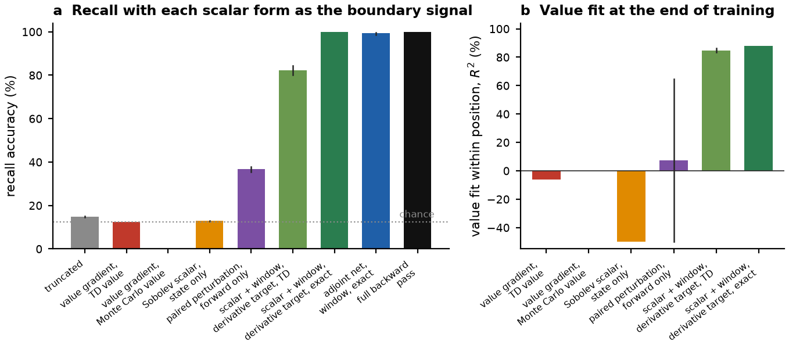
Definitions, all numbers, limits定义、全部数字与局限
A scalar value net supplies the boundary signal when its derivative with respect to the state is trained on derivative targets and it sees the window; the gradient of a value fitted to the loss-to-go carries no credit and can do harm当标量价值网络对状态的导数用导数目标训练且它看到窗口时，它能提供边界信号；拟合剩余损失的价值的梯度不携带信用，还可能有害.
Evidence: CPU, small recurrent net on the controlled recall task: 2 seeds per scalar arm, 3 for the references; signal-norm cap on every arm证据：CPU，受控回忆任务上的小型循环网络：每个标量实验组 2 个随机种子，参照组 3 个；每个实验组都设信号范数上限
Setting: the recall task of the closed-loop finding (gated, noisy state; windows of one block). Scalar forms tested as the boundary signal. Value gradient: a scalar net of the state trained on the loss-to-go, by temporal differences or on Monte Carlo returns, with its gradient as the signal. Sobolev scalar, state only: the same net with an added term that matches its gradient to the bootstrapped adjoint from the window's backward pass. Scalar with window and derivative target: $C=v(c)+\langle A(c),s-\mathrm{sg}(s)\rangle$, where $c$ is the detached window content, the value part $v$ is trained on the loss-to-go and the derivative part $A$ on the adjoint target, exact or temporal-difference. Paired perturbation: a two-input scalar trained only on loss differences between a state and a noisy copy run on the same inputs, with no backward pass through the model for its targets. Value fit within position: $R^2$ after removing the mean per remaining length, which otherwise explains 99% of the loss-to-go.设置：闭环发现中的回忆任务（带门控、含噪声的状态；窗口为一个块）。以下标量形式被作为边界信号进行测试。价值梯度：一个以状态为输入的标量网络，用 TD 或 Monte Carlo 回报在剩余损失上训练，以其梯度作为信号。只看状态的 Sobolev 标量：同一网络加上一项，使其梯度与窗口反向传播给出的自举伴随量相匹配。带窗口和导数目标的标量：$C=v(c)+\langle A(c),s-\mathrm{sg}(s)\rangle$，其中 $c$ 是分离梯度的（detached）窗口内容，价值部分 $v$ 在剩余损失上训练，导数部分 $A$ 在伴随量目标上训练，该目标为精确目标或 TD 目标。成对扰动：一个双输入标量，只在一个状态与其带噪副本在相同输入上运行所得的损失差上训练，其目标不需要穿过模型的反向传播。位置内的价值拟合：去掉每个剩余长度上的均值之后的 $R^2$，否则该均值会解释剩余损失的 99%。
Recall accuracy (a): truncation 15%; value gradient 12 to 13% with either value target, also at a tenth of the scale; Sobolev scalar of the state alone 13%; paired perturbation, which uses forward passes only, 36 and 38% with perturbations of 0.1 of the state scale and 51 and 79% with 0.5 (98% at delay 1, 66% at delay 2), with a value fit of 78 to 87% within position; scalar with window and temporal-difference derivative target 80 and 85%; the same with exact targets 99.9%, equal to the adjoint net with exact targets and to the full backward pass. The value part of the window-conditioned scalar fits 83 to 88% of the within-position variance (b), so one head gives an accurate value and a working boundary signal; its derivative is a separately supervised slot, which makes it the adjoint net with a value output. In the state-only Sobolev scalar the two terms conflict and the value fit is destroyed. On the direct-write variant, where truncation alone reaches 46% early in training, a Monte Carlo value net that explains 72 to 74% of the within-position variance was switched on at a tenth of the scale (5 to 11% of the norm of the exact adjoint): recall fell to chance on both seeds, below truncation from then on, and the parameter gradient of its signal equals that of a shuffled control to two digits, a push that does not depend on the document.回忆准确率（a）：截断 15%；价值梯度在两种价值目标下都是 12% 到 13%，把尺度缩小到十分之一时也是如此；只看状态的 Sobolev 标量 13%；成对扰动只使用前向传播，扰动幅度为状态尺度的 0.1 时为 36% 和 38%，为 0.5 时为 51% 和 79%（延迟 1 处 98%，延迟 2 处 66%），位置内的价值拟合为 78% 到 87%；带窗口和 TD 导数目标的标量 80% 和 85%；同一形式用精确目标时为 99.9%，与用精确目标的伴随网络以及完整反向传播相等。以窗口为条件的标量，其价值部分拟合了位置内方差的 83% 到 88%（b），因此一个头同时给出准确的价值和有效的边界信号；它的导数是一个单独监督的槽，这使它成为带价值输出的伴随网络。在只看状态的 Sobolev 标量中，两项相互冲突，价值拟合被破坏。在直接写入的变体上，单靠截断在训练早期就能达到 46%；在这一变体上，一个能解释位置内方差 72% 到 74% 的 Monte Carlo 价值网络以十分之一的尺度启用（为精确伴随量范数的 5% 到 11%）：两个随机种子上的回忆准确率都降到随机水平，此后一直低于截断，并且其信号产生的参数梯度与打乱对照的参数梯度在两位数字的精度内相等，即一种不依赖于文档的推动。
One small architecture, one task, two seeds. The value net trained by temporal differences never beat the remaining-length baseline here, so the statement about an accurate value rests on the Monte Carlo value net. The GPU worker tests the window-and-hindsight scalar on FineWeb.一个小型架构，一个任务，两个随机种子。用 TD 训练的价值网络在这里从未超过剩余长度基线，因此关于准确价值的结论依据的是 Monte Carlo 价值网络。GPU worker 在 FineWeb 上测试带窗口和事后信息的标量。
11Small character model: hindsight critics close two thirds of the gap在小型字符模型上，事后 critic 弥补了差距的三分之二
- A 2-layer character model on CPU with 4 memory tokens. Windows of one segment.CPU 上的 2 层字符模型，有 4 个记忆 token。窗口为一段。
- A critic that also sees the next segment closes 65 to 77% of the gap. Noise and shuffled controls end below zero.还能看到下一段的 critic 弥补了差距的 65% 到 77%。噪声对照和打乱对照最终低于零。
- This is the one text model where the loop worked well. Why it differs from FineWeb is not explained.这是闭环效果良好的唯一一个文本模型。它为何与 FineWeb 不同，尚无解释。
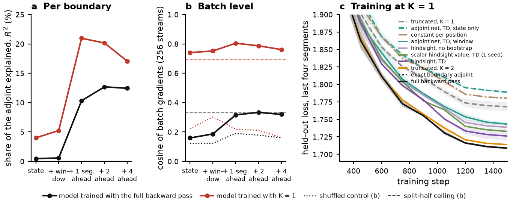
Definitions, all numbers, limits定义、全部数字与局限
On a character-level model with memory tokens, the boundary adjoint is unpredictable from the state and becomes predictable once the critic sees the next segment; in training at $K=1$ hindsight critics close half to three quarters of the truncation gap, while noise, shuffled and state-only signals do not help在带记忆 token 的字符级模型上，边界伴随量无法由状态预测，而一旦 critic 看到下一段就变得可预测；在 $K=1$ 的训练中，看到未来 token 的 critic（事后 critic）弥补截断差距的一半到四分之三，而噪声信号、打乱信号和只看状态的信号都没有帮助.
Evidence: CPU, 2-layer model: loop arms with 2 seeds each, including noise and shuffled-signal controls; frozen diagnostic with one model seed per checkpoint, replicated on FineWeb at GPU scale证据：CPU，2 层模型：闭环实验组各 2 个随机种子，包括噪声对照和打乱信号对照；冻结诊断中每个检查点一个模型随机种子，已在 GPU 规模的 FineWeb 上复现
Setting. The character-level model of the truncation finding (4 memory tokens, 8 segments of 16 characters). Frozen diagnostic: on a trained model, compute the exact boundary adjoint $\lambda$ at every boundary, fit small critics to it by regression, and measure on held-out streams the share of $\lambda$ explained per boundary and the cosine between the parameter gradients that the critic and the exact adjoint produce, summed over 256 streams. The critic sees the state; or also the hidden states of the window; or also the characters of the next 1, 2 or 4 segments (hindsight). Shuffled control: the critic's output for another stream. Split-half ceiling: the same cosine between two disjoint batches of exact gradients. Loop: train from scratch at $K=1$ with a critic's output as the boundary signal.设置。截断发现中的字符级模型（4 个记忆 token，8 段、每段 16 个字符）。冻结诊断：在一个已训练的模型上，计算每个边界处的精确边界伴随量 $\lambda$，用回归把小型 critic 拟合到它上面，并在留出流上测量逐边界被解释的 $\lambda$ 的份额，以及 critic 与精确伴随量各自产生的参数梯度之间的余弦，梯度在 256 条流上求和。critic 看到状态；或者还看到窗口的隐藏状态；或者还看到接下来 1、2 或 4 段的字符（事后）。打乱对照：critic 对另一条流的输出。对半上限：两个不相交批次的精确梯度之间的同一种余弦。闭环：在 $K=1$ 下从头训练，以 critic 的输出作为边界信号。
On the model trained with the full backward pass, the critics explain 0.5% of $\lambda$ from the state, 0.6% with the window and 10 to 13% with hindsight (a). At the level of 256-stream batches the hindsight critics reach the split-half ceiling of 0.33, and the state and window critics stay near the shuffled control (b, black). On the model trained with $K=1$, whose write path was never trained, the missing gradient has a large common direction, and every critic captures most of it (0.74 to 0.80; b, red). In the loop at $K=1$ (c; truncation gap 0.059 nats): the exact adjoint closes 100% and 100% of the gap on the two seeds, $K=2$ truncation 89 and 94%, a hindsight critic that sees the next segment 77 and 65% with temporal-difference targets and 51 and 48% without the bootstrap, a scalar hindsight value with a derivative target 53 and 68%, the window critic 28 and 52% with temporal-difference targets and 31 and 58% without the bootstrap; the state-only critic ends 26 and 49% below truncation and a constant signal per position 11 and 32% below. Two controls say that these gains are credit: Gaussian noise injected as the signal ends 3 and 7% below truncation, and the window critic's output for another stream of the batch ends 10 and 23% below. With the write slots and their normalization frozen in every arm, which removes the parameters that only the boundary term trains, the hindsight critic with temporal-difference targets still closes 75 and 52% and noise 1 and $-1$%, and the full backward pass loses nothing. The centred cosine with the exact term is 0.25 for the window and hindsight critics against at most 0.04 for shuffled signals. A scalar value of the state trained by temporal differences diverged in all four of its runs. The failing signals are small, 1 to 5% of the norm of the exact adjoint, and a cap on the signal norm never binds, so here the harm comes from their direction. The learned signals recover about half of the gap, where doubling the window recovers about 90% at the same compute and twice the activation memory.在用完整反向传播训练的模型上，critic 只看状态时解释 $\lambda$ 的 0.5%，加上窗口为 0.6%，有事后信息时为 10% 到 13%（a）。在 256 条流的批次层面上，事后 critic 达到对半上限 0.33，只看状态的 critic 和窗口 critic 停留在打乱对照附近（b，黑色）。在用 $K=1$ 训练的模型上，写入路径从未得到训练，缺失梯度有一个很大的共同方向，每个 critic 都捕捉到其中的大部分（0.74 到 0.80；b，红色）。在 $K=1$ 的闭环中（c；截断差距为 0.059 nats）：精确伴随量在两个随机种子上弥补了差距的 100% 和 100%，$K=2$ 的截断为 89% 和 94%；看到下一段的事后 critic 用 TD 目标时为 77% 和 65%，不用自举时为 51% 和 48%；带导数目标的事后标量价值为 53% 和 68%；窗口 critic 用 TD 目标时为 28% 和 52%，不用自举时为 31% 和 58%；只看状态的 critic 最终比截断差 26% 和 49%，每个位置一个常数的信号比截断差 11% 和 32%。两个对照说明这些增益来自信用：以高斯噪声作为信号注入时，最终比截断差 3% 和 7%；以窗口 critic 对批次中另一条流的输出作为信号时，最终比截断差 10% 和 23%。当每个实验组中的写入槽及其归一化都被冻结时（这去掉了只由边界项训练的参数），用 TD 目标的事后 critic 仍弥补 75% 和 52%，噪声为 1% 和 $-1$%，完整反向传播则没有任何损失。与精确项的去均值后余弦，窗口 critic 和事后 critic 为 0.25，打乱信号至多为 0.04。以状态为输入、用 TD 训练的标量价值在其全部四次运行中都发散了。失败的信号都很小，为精确伴随量范数的 1% 到 5%，信号范数的上限从未生效，因此这里的损害来自它们的方向。学习得到的信号恢复了大约一半的差距，而把窗口加倍在相同计算量和两倍激活内存下可恢复约 90%。
Small critics (two hidden layers) on a 2-layer model, two seeds, 1,500 steps; the share of the gap closed varies by up to 0.27 between seeds. Doubling the window still recovers more (89 to 94%) than any learned signal, at the same compute and twice the activation memory. The bootstrap added 21 points with hindsight and nothing with the window critic, which the lead had not predicted.2 层模型上的小型 critic（两个隐藏层），两个随机种子，1,500 步；弥补的差距比例在随机种子之间最多相差 0.27。在相同计算量和两倍激活内存下，把窗口加倍恢复的差距（89% 到 94%）仍多于任何学习得到的信号。自举在有事后信息时增加了 21 个百分点，对窗口 critic 则没有增益，这是负责人没有预测到的。
12A value head predicts which document is hard, not where价值头能预测哪篇文档难，不能预测难在哪里
- A value head on a GPT predicts the model's own future loss during pretraining.GPT 上的价值头在预训练中预测模型自身的未来损失。
- It explains 32 to 38% of the variation. Monte Carlo heads are level with it or one point below.它解释了变化的 32% 到 38%。Monte Carlo 头与它持平，或低一个百分点。
- Inside a document it explains only about 1%.在一篇文档内部，它只解释约 1%。
- Its known bias has two causes: the context reset at the window end, and a lag while the loss is falling.它已知的偏差有两个原因：窗口末尾的上下文重置，以及损失下降期间的滞后。
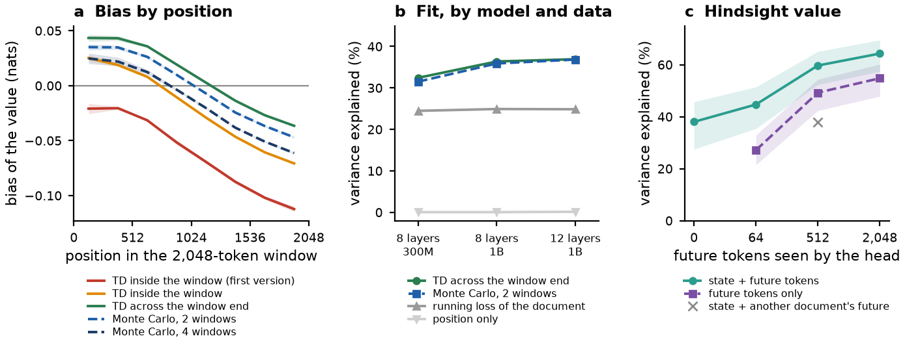
Definitions, all numbers, limits定义、全部数字与局限
During GPT pretraining a temporal-difference value head explains 32 to 38% of the variance of the discounted future loss, the same as Monte Carlo heads; nearly all of that is between documents, and its two biases have identified causes在 GPT 预训练过程中，TD 价值头解释了折扣未来损失方差的 32% 到 38%，与 Monte Carlo 头相同；其中几乎全部来自文档之间，它的两种偏差都有已查明的原因.
Evidence: GPU, FineWeb: 8-layer GPT at 300M tokens (4 seeds, one with its own data order) and at 1B, 12-layer GPT at 1B (2 seeds); 512 held-out streams; evaluation audited (all numbers reproduce; two readings were corrected, and the tables were re-scored with the audit's fixes)证据：GPU，FineWeb：8 层 GPT，300M 个 token（4 个随机种子，其中一个有自己的数据顺序）和 1B 个 token，12 层 GPT，1B 个 token（2 个随机种子）；512 条留出流；评估已审计（所有数字均可重现；有两处解读已更正，各表已按审计的修正重新评分）
Setting, from an earlier run on this question and its code. A value head reads the hidden states of a GPT during pretraining, without sending gradient back, and predicts the discounted mean of the model's own future loss, $(1-\gamma)\sum_i\gamma^i L_{t+i}$ with $\gamma=1-1/1024$. Training windows have 2,048 tokens, after which the model starts from an empty context, so the target reaches past a context reset. Heads differ only in their target: temporal difference inside the window (realized losses of the next tokens plus the prediction of a slowly averaged copy of the head, never crossing the window end); temporal difference across the window end; Monte Carlo returns over 1, 2 or 4 windows. All heads sit on the same model and see the same tokens. Fit is measured after a linear recalibration fitted on other streams. The hindsight head also sees a number of future tokens.设置沿用此前关于该问题的一次运行及其代码。价值头在预训练期间读取 GPT 的隐藏状态，不回传梯度，预测模型自身未来损失的折扣均值 $(1-\gamma)\sum_i\gamma^i L_{t+i}$，其中 $\gamma=1-1/1024$。训练窗口为 2,048 个 token，此后模型从空上下文重新开始，因此目标会越过一次上下文重置。各个头只在目标上不同：窗口内的 TD（接下来若干 token 的已实现损失，加上该头的一个缓慢平均副本的预测，从不越过窗口末尾）；跨窗口末尾的 TD；Monte Carlo 回报，跨 1、2 或 4 个窗口。所有头都接在同一个模型上，看到相同的 token。拟合程度在用其他流拟合的线性再校准之后测量。事后头还能看到若干未来 token。
Fit (b). 8 layers, 300M tokens, four seeds (the fourth with its own data order): temporal difference inside the window 32.3 to 32.5%, across the window end 32.6 to 32.9%, Monte Carlo over 2 windows 31.1 to 31.7%, over 4 windows 30.1 to 30.3%; a regression on the document's running loss 25.5 to 25.9%; position alone 0.0%. Paired on the same streams, temporal difference across the window end is above the 2-window Monte Carlo head by 1.2 to 1.7 points on all four seeds. With 1B tokens: 36.7% against 35.9% (8 layers) and 37.1% against 36.8% (12 layers). At a horizon of 4,096 tokens both kinds reach 17 to 22%. Of the target's variance, 91.5% lies between documents; inside a document the heads explain 0.5 to 2.2% on held-out text. The value head knows which document is hard and almost nothing about where in it the loss will be high.拟合（b）。8 层，300M 个 token，四个随机种子（第四个有自己的数据顺序）：窗口内的 TD 为 32.3% 到 32.5%，跨窗口末尾的 TD 为 32.6% 到 32.9%，跨 2 个窗口的 Monte Carlo 为 31.1% 到 31.7%，跨 4 个窗口的为 30.1% 到 30.3%；对文档运行损失（running loss）的回归为 25.5% 到 25.9%；仅位置为 0.0%。在相同的流上配对比较，跨窗口末尾的 TD 在全部四个随机种子上都比 2 个窗口的 Monte Carlo 头高 1.2 到 1.7 个百分点。1B 个 token 时：36.7% 对 35.9%（8 层）和 37.1% 对 36.8%（12 层）。在 4,096 个 token 的时间跨度上，两类头都达到 17% 到 22%。目标的方差中有 91.5% 来自文档之间；在一篇文档内部，这些头在留出文本上解释 0.5% 到 2.2%。价值头知道哪篇文档难，但对文档中哪些位置损失会高几乎一无所知。
Bias. The head of the earlier run is low by 0.061 nats on 512 held-out streams (95% interval 0.042 to 0.080; 0.09 on the 96 harder streams of the earlier benchmark). Of this, 0.032 is the context reset: a target that never crosses the window end contains no reset, and the head trained across the window end differs from it by exactly the cost of the reset in three paired comparisons (within 0.008). Another 0.025 is common to all heads on this sample of streams and is 0.005 on held-out training text. Every head, whatever its target, runs from about $+0.03$ at the window start to $-0.05$ at its end (a): the future loss rises as the reset approaches (0.011 to 0.065 nats) and the hidden state does not carry the distance to the window end. A second bias appears while the model is still improving: a temporal-difference head lags the falling loss, by $+0.135$ nats at a horizon of 4,096 tokens and $+0.03$ at 1,024; it disappears ($-0.006$) when the heads continue on the frozen model, and a lag model from the measured loss slope predicts 0.15.偏差。此前那次运行中的头在 512 条留出流上偏低 0.061 nats（95% 区间为 0.042 到 0.080；在此前基准中较难的 96 条流上为 0.09）。其中 0.032 来自上下文重置：从不越过窗口末尾的目标不含重置，而跨窗口末尾训练的头与它的差别在三组配对比较中恰好等于重置的代价（相差不超过 0.008）。另有 0.025 是所有头在这批流样本上共有的，在留出的训练文本上则为 0.005。每个头无论目标是什么，其偏差都从窗口起点处的约 $+0.03$ 变到窗口末尾的 $-0.05$（a）：未来损失随重置临近而上升（0.011 到 0.065 nats），而隐藏状态不携带到窗口末尾的距离。第二种偏差出现在模型仍在改进的时候：TD 头滞后于下降中的损失，在 4,096 个 token 的时间跨度上为 $+0.135$ nats，在 1,024 上为 $+0.03$；当这些头在冻结的模型上继续训练时，它消失了（$-0.006$），而由测得的损失斜率建立的滞后模型预测的是 0.15。
Hindsight (c). With the next 64, 512 and 2,048 tokens as input the head explains 44 to 45%, 59 to 60% and 64 to 65%, from 37 to 39% with the state alone; future tokens without the state give 26 to 28%, 48 to 50% and 54 to 56%; the future tokens of another document add nothing (37 and 39%, as with the state alone).事后信息（c）。以接下来的 64、512 和 2,048 个 token 作为输入时，该头解释 44% 到 45%、59% 到 60% 和 64% 到 65%，而只用状态时为 37% 到 39%；只有未来 token 而没有状态时为 26% 到 28%、48% 到 50% 和 54% 到 56%；另一篇文档的未来 token 没有任何增益（37% 和 39%，与只用状态时相同）。
Gradient. The gradient of each trained head with respect to the hidden state it reads was compared with the true gradient of the future loss at that state (2,400 held-out positions, two seeds): the cosine is 0.003 to 0.008 for every head, 0.013 at most including the hindsight heads that explain 60% of the target, at 50 to 100 times the true gradient's norm. A value fitted by regression carries no usable gradient at this scale either.梯度。把每个训练好的头对它所读取的隐藏状态的梯度，与未来损失在该状态处的真实梯度作了比较（2,400 个留出位置，两个随机种子）：每个头的余弦都在 0.003 到 0.008，把解释了目标 60% 的事后头包括在内也至多为 0.013，而其范数是真实梯度范数的 50 到 100 倍。在这一规模上，由回归拟合的价值同样不携带可用的梯度。
Three of the four seeds share the data order, so the level of a single head is reproducible to about 0.03 nats and paired contrasts to 0.007. The bias and hindsight numbers below the fit paragraph are from the first scoring (seeds 0 and 1). Two explanations of the bias failed on the way: the lead's (un-converged bootstrapping; four variants on worker 1 all kept the offset) and the worker's first one (untrained positions at the window end extrapolate low; the audit showed that all heads share that profile).四个随机种子中有三个共用数据顺序，因此单个头的水平可复现到约 0.03 nats，配对对比可复现到 0.007。拟合那一段之后的偏差和事后信息的数字来自第一次评分（随机种子 0 和 1）。在此过程中，对偏差的两种解释失败了：负责人的解释（自举尚未收敛；worker 1 上的四个变体都保留了该偏移）和该 worker 最初的解释（窗口末尾未经训练的位置外推偏低；审计表明所有头都呈现同样的随位置变化的形态）。
13A correct value can have the wrong gradient (theory)正确的价值可以有错误的梯度（理论）
- Value regression learns how loss differs between documents. The cut needs how loss changes when the state changes.价值回归学到的是不同文档之间损失的差别。截断处需要的是状态改变时损失如何变化。
- The two differ by a term that has nothing to do with credit. Proved, with a worked example in the figure.两者相差一项，这一项与信用无关。已证明，图中给出一个算例。

Definitions, all numbers, limits定义、全部数字与局限
The gradient of a correctly fitted scalar value differs from the boundary signal by a confounding term正确拟合的标量价值的梯度与边界信号相差一个混杂项.
Evidence: proved under a density assumption; closed form below; not yet measured in a trained model证据：在一个密度假设下已证明；闭式算例见下；尚未在已训练的模型中测量
Terms. The carried state $s_j$ is what the model passes from block $j-1$ to block $j$ (memory tokens, a cache, fast weights). The pathwise adjoint $\lambda_j=\nabla_s G_j(s_j,f)$ is the derivative of the remaining loss $G_j$ with respect to that state for the document's actual future tokens $f$; it is what full backpropagation would deliver at the cut. The expected adjoint $a(s)=\mathbb{E}[\lambda\mid s]$ is the best any learned boundary signal can do. The value $V(s)=\mathbb{E}[G\mid s]$ is what temporal-difference or Monte Carlo regression converges to.术语。携带状态 $s_j$ 是模型从块 $j-1$ 传给块 $j$ 的内容（记忆 token、缓存、快权重）。逐路径伴随量 $\lambda_j=\nabla_s G_j(s_j,f)$ 是在文档实际的未来 token $f$ 下，剩余损失 $G_j$ 对该状态的导数；它就是完整反向传播在截断点会给出的量。期望伴随量 $a(s)=\mathbb{E}[\lambda\mid s]$ 是任何学习得到的边界信号所能达到的最好结果。价值 $V(s)=\mathbb{E}[G\mid s]$ 是 TD 回归或 Monte Carlo 回归收敛到的对象。
For a state with a smooth density, $$\nabla_s V(s)=a(s)+\mathrm{Cov}\big(G,\ \nabla_s\log p(f\mid s)\ \big|\ s\big).$$ In reinforcement learning the future is a consequence of the state, and the derivative of a correct value is the derivative that credit assignment needs. Under teacher forcing the future tokens come from the document, and the state summarizes the same document, so differentiating the value also differentiates over which documents a state stands for; the covariance term is that part. Earlier runs on this question found 80 to 90% of the variance of future loss between documents. The figure is a closed-form example: a two-coordinate state whose first coordinate is memory that lowers the loss, with a difficulty signal of strength $\|w\|$ that is either carried by the second, causally inert coordinate (a) or mixed into both (b). With value regression alone the fit is exact and the cosine to the expected adjoint falls with the confounding strength, and in case b it turns negative: following that gradient increases the true loss. A derivative target of weight $\beta$ shrinks the surviving confounding to a fraction $1/(1+\beta)$ at a cost in value fit (c). A second, detached input removes the trade-off.对具有光滑密度的状态，$$\nabla_s V(s)=a(s)+\mathrm{Cov}\big(G,\ \nabla_s\log p(f\mid s)\ \big|\ s\big).$$ 在强化学习中，未来是状态的结果，正确价值的导数就是信用分配所需要的导数。在 teacher forcing 下，未来 token 来自文档，而状态概括的是同一篇文档，因此对价值求导时也会对“一个状态代表哪些文档”求导；协方差项就是这一部分。此前关于该问题的运行发现，未来损失的方差有 80% 到 90% 来自文档之间。图中是一个闭式算例：状态有两个坐标，第一个坐标是能降低损失的记忆；另有一个强度为 $\|w\|$ 的难度信号，它或者由第二个、因果上不起作用的坐标携带（a），或者混入两个坐标（b）。只用价值回归时，拟合是精确的，与期望伴随量的余弦随混杂强度增大而下降，在情形 b 中变为负值：沿该梯度更新会使真实损失增大。权重为 $\beta$ 的导数目标把残留的混杂缩小到原来的 $1/(1+\beta)$，代价是价值拟合变差（c）。增加一个分离梯度的（detached）第二输入可以消除这一权衡。
This is a statement about the fixed point of value regression. Whether the term is large in a trained language model with a carried state is an experiment (workers 3, 5 and 6).这是关于价值回归不动点的结论。在带携带状态的已训练语言模型中该项是否很大，是一个实验问题（worker 3、5 和 6）。
14Toy example: an accurate value with an unrelated gradient玩具例子：价值准确，梯度却不相关
- A toy problem with a known answer. Value regression reaches a fit of 79% with a gradient cosine of 0.10.一个答案已知的玩具问题。价值回归的拟合度达到 79%，梯度余弦为 0.10。
- Adding a target for the derivative repairs the gradient.加上一个针对导数的目标，就修复了梯度。

Definitions, all numbers, limits定义、全部数字与局限
In a toy with a known answer, value regression fits the value and misses the gradient; derivative or paired-difference targets recover it在答案已知的玩具模型中，价值回归能拟合价值，但得不到梯度；导数目标或成对差分目标能恢复梯度.
Evidence: preliminary: toy on CPU, linear-in-features critics, 3 seeds; no temporal differences, no closed loop证据：初步：CPU 上的玩具模型，对特征为线性的 critic，3 个随机种子；没有 TD，没有闭环
The toy state has a memory part, a noisy copy of content that the future asks for (write quality $q$ is the correlation between memory and content), and an inert part that encodes the document's difficulty with weight $\gamma$ in the cost. The expected adjoint is known by Monte Carlo. Six critics are fit by ridge regression on random Fourier features: value regression only; Sobolev with value and derivative terms; Sobolev with the derivative term only; a detached second input, which here is the same as an adjoint net plus a value head; paired perturbation, which regresses value differences between a state and a noisy copy under the same future; and a reset baseline, which regresses the loss difference to a rollout from the empty state.玩具模型的状态包含一个记忆部分，即未来会查询的内容的带噪副本（写入质量 $q$ 是记忆与内容之间的相关系数），以及一个惰性部分，它编码文档的难度，难度在代价中的权重为 $\gamma$。期望伴随量可由 Monte Carlo 得到。用随机傅里叶特征上的岭回归拟合六种 critic：只做价值回归；带价值项和导数项的 Sobolev；只带导数项的 Sobolev；带分离梯度的（detached）第二输入，在这里它等同于伴随网络加一个价值头；成对扰动，即在同一未来下对一个状态与其带噪副本之间的价值差做回归；以及重置基线，即对相对于从空状态出发的 rollout 的损失差做回归。
At $\gamma=2$ value regression reaches $R^2=79\%$ with a cosine of 0.10 to the expected adjoint (b, red). The detached-input critic keeps the same $R^2$ at a cosine of 0.98 (green). A single-input Sobolev critic with both terms loses on both counts, $R^2=34\%$ and cosine 0.67 (dashed orange), because the value term and the derivative term ask for different gradients. Panel c varies the memory quality with no difficulty term: the value-regression gradient keeps a share close to $1-q$ of the signal (dotted line), so it fades as the memory improves; the reset baseline follows $1-2q$ and opposes the signal for $q>0.5$, which refutes a construction the lead had proposed. Panel d: at state dimension 32, paired perturbation needs about 16 times the samples of the derivative-supervised critics for the same cosine.在 $\gamma=2$ 时，价值回归达到 $R^2=79\%$，与期望伴随量的余弦为 0.10（b，红色）。带分离梯度输入的 critic 保持相同的 $R^2$，余弦为 0.98（绿色）。同时带两项的单输入 Sobolev critic 在两项指标上都变差，$R^2=34\%$，余弦 0.67（橙色虚线），因为价值项和导数项要求的梯度不同。子图 c 在没有难度项的情况下改变记忆质量：价值回归的梯度保留信号中接近 $1-q$ 的份额（点线），因此随记忆变好而减弱；重置基线遵循 $1-2q$，在 $q>0.5$ 时与信号方向相反，这否定了负责人此前提出的一种构造。子图 d：状态维度为 32 时，要达到相同的余弦，成对扰动需要的样本数约为导数监督 critic 的 16 倍。
A toy with a linear-in-features critic. It checks the fixed points of the objectives, and says nothing yet about temporal-difference training, a moving model, or text.这是一个 critic 对特征为线性的玩具模型。它检验的是各目标函数的不动点，对 TD 训练、变化中的模型或文本目前还不能说明什么。
15Short windows drop long-range credit; one-segment windows drop all write credit短窗口丢掉长程信用；一段的窗口丢掉全部写入信用
- With windows of $K$ segments, credit across $\tau$ segments is kept with weight $1-\tau/K$. Proved.窗口为 $K$ 段时，跨 $\tau$ 段的信用以权重 $1-\tau/K$ 保留。已证明。
- At $K=1$ the part of the model that writes the state gets exactly zero gradient.在 $K=1$ 时，模型中写入状态的部分得到的梯度恰好为零。
- Later tests showed that under Adam the weight matters little. What matters is which lags get any credit.后来的检验表明，在 Adam 下权重影响不大。重要的是哪些滞后能得到信用。

Definitions, all numbers, limits定义、全部数字与局限
With non-overlapping windows, truncation keeps the credit at lag $\tau$ with weight $(1-\tau/K)_+$, and at $K=1$ the write path receives no gradient使用不重叠窗口时，截断以权重 $(1-\tau/K)_+$ 保留滞后 $\tau$ 处的信用；在 $K=1$ 时写入路径得不到梯度.
Evidence: proved; numerical check to rounding; not yet measured as a loss on a trained model证据：已证明；数值检验吻合到舍入误差；尚未在已训练的模型上作为损失进行测量
Terms. A window is $K$ consecutive segments processed with one backward pass; the state entering it is detached. The lag is the number of segments between the point where something is written into the state and the loss that uses it. Non-overlapping windows partition the document, which is how truncated training is normally run; sliding windows would back-propagate every loss through its own $K$ preceding segments.术语。一个窗口是用一次反向传播处理的 $K$ 个连续的段；进入窗口的状态已分离梯度（detached）。滞后是从某项内容被写入状态的位置到使用它的损失之间相隔的段数。不重叠窗口构成对文档的划分，截断训练通常就是这样进行的；滑动窗口则会让每个损失沿它自己前面的 $K$ 个段反向传播。
A write and a use at lag $\tau$ are credited only when no window boundary falls between them. Over the positions of a document that happens with frequency $(1-\tau/K)_+$ (a). The share of the credit that is lost therefore falls like $1/K$ when the state forgets at rate $\rho$, $\frac{1-\rho^K}{K(1-\rho)}$ relative to the full gradient (b), and falls geometrically, $\rho^K$, only for sliding windows (c). At $K=1$ every pair is cut: the parameters that decide what to write receive exactly zero gradient in any task, and a boundary signal is then the only source of write credit. The first version of the theory claimed geometric decay; the proof audit refuted it. The first GPU implementation (a GPT with 16 recurrent memory tokens, worker 1) confirms the two exact statements in float64: the gradient of the write-slot parameters under $K=1$ is exactly zero, and windows of one segment with the exact boundary adjoint reproduce the full gradient to $10^{-16}$.滞后为 $\tau$ 的一次写入和一次使用，只有在两者之间没有窗口边界时才获得信用。在文档的各个位置上，这种情况出现的频率为 $(1-\tau/K)_+$（a）。因此，当状态以速率 $\rho$ 遗忘时，丢失的信用份额按 $1/K$ 下降，相对于完整梯度为 $\frac{1-\rho^K}{K(1-\rho)}$（b）；只有对滑动窗口才按几何方式下降，为 $\rho^K$（c）。在 $K=1$ 时每一对都被切断：在任何任务中，决定写入什么的参数得到的梯度都恰好为零，此时边界信号是写入信用的唯一来源。理论的第一版声称是几何衰减；对证明的审计否定了这一点。第一个 GPU 实现（带 16 个循环记忆 token 的 GPT，worker 1）在 float64 下确认了这两条精确结论：$K=1$ 时写入槽参数的梯度恰好为零；长度为一段的窗口加上精确边界伴随量，能将完整梯度复现到 $10^{-16}$ 的精度。
This is a statement about the gradient. A model trained with truncation also adapts to it, so the cost in loss has to be measured against a model trained with the full backward pass; that is the first GPU experiment.这是关于梯度的结论。用截断训练的模型也会适应截断，因此损失上的代价必须与用完整反向传播训练的模型对比来测量；这就是第一个 GPU 实验。
Predictions and their outcomes预测及其结果
- Each prediction was written down before its run, with the result that would refute it.
- Twenty of the lead's predictions failed. The tables mark each outcome as held or failed.
- The second table lists predictions made during the night, for runs that were still going.
Table 1: predictions made before the program, with outcomes
| Prediction | Refuted if | Outcome | |
|---|---|---|---|
| Q0 | With recurrent memory tokens on natural text, truncation to one segment loses most of the benefit of memory, and four segments recover it to within 0.01 nats. With a Transformer-XL cache, truncation costs under 0.01 nats. | Two-segment truncation is already within seed spread of the full backward pass in both models. | Failed for both. Memory tokens: one segment loses 0.143 of a 0.313 benefit and two segments lose nothing. Cache: 0.025 at one segment. Fast weights behave as predicted for memory tokens (0.03 left at four segments). Finding 1. |
| Q1 | On delayed recall with a single delay of at least the window length, truncated training stays at chance and the full backward pass solves it. | Truncated training solves it. | Held on the recurrent net (14% against 100%) and on an LSTM (worker 8: 25% against 100% at delay 2). |
| Q2 | The value gradient from temporal differences alone has high value accuracy ($R^2>0.8$) and a parameter-gradient cosine at the level of a shuffled control; it gives no gain over truncation. | It closes more than 30% of the gap. | Held on recall (chance, also with Monte Carlo values and at a tenth of the scale). On FineWeb the first runs blew up through a faulty norm cap and are being rerun. |
| Q3 | Sobolev-trained scalar values and the adjoint net reach a batch-level cosine above 0.5 on synthetic tasks and close more than half of the gap. | An adjoint net supervised on exact adjoints stays below 0.3. | Held for critics that see the window (scalar 99.9% and 80 to 85% recall, adjoint net 99%); failed for state-only forms (13 to 43%). |
| Q4 | Methods rank by gradient cosine, and value accuracy does not predict the ranking. | The ranking follows value accuracy. | Second half held (a value fit of 72 to 97% goes with chance or worse). First half open: on FineWeb the loss ranks signals inversely to their cosine (finding 5); the first proposed cause was tested and failed. |
| Q5 | Removing the difficulty dependence of the loss repairs the plain value gradient on visited states. | It stays equally wrong. | Not tested. |
| Q6 | A value net with a detached second input matches the adjoint net where the expected adjoint is not a gradient field; the plain Sobolev value falls short there. | No separation. | Held on recall (99.9% against 13%). |
| Q7 | With non-overlapping windows of $K$ blocks, credit at lag $\tau$ keeps the weight $(1-\tau/K)_+$: the relative error of the truncated gradient falls like $1/K$, and at $K=1$ the write path gets no gradient at all. (The first version predicted geometric decay; the proof audit refuted it.) | A write gradient at $K=1$; geometric decay of the loss gap where credit is spread over many lags. | Held: zero write gradient in three implementations; the fast-weight cost halves from $K=2$ to $K=4$. Rescaling the kept credit to undo the kernel, the lead's corollary, failed (finding 1). |
| Q8 | On natural text the per-boundary cosine of the best learner is below 0.2 while the batch-level cosine is several times larger. | The batch-level cosine of a supervised adjoint net is at the shuffled level. | Held: per-boundary $R^2$ 0.5 to 10%, batch cosine 0.52 to 0.70 (centred 0.40 to 0.67, shuffled 0). Finding 3. |
| Q9 | For value pretraining, temporal differences match a correctly normalized Monte Carlo head at 512 tokens and are the only option beyond the window; within-document $R^2$ stays under 0.1; the head's bias is un-converged bootstrapping. | Temporal differences are worse by more than 0.05 in $R^2$; the bias survives faster bootstrapping. | Match held (tie, paired) and within-document $R^2$ is 1 to 2%. "Only option" failed: Monte Carlo over several windows is as good. Bias explanation failed; the causes are the context reset and a lag while the loss falls. Finding 12. |
| Q10 | On a trained model, an adjoint net that sees only the state and is supervised on exact adjoints has a batch-level cosine near the shuffled control; the same net with the window as a detached input is clearly above it. | The state-only net is as good as the window-conditioned one and well above the control. | Held where the reader is calibrated (GPT hidden states: $-0.5$%; recall net with re-fitted reader: 0% against 98 to 100%). Failed on the model trained with one-segment windows (state-only centred cosine 0.40, shuffled 0): its reader is far from calibrated. Findings 3 and 7. |
| Q11 | In training, state-only signals stall between truncation and the full backward pass, and window-conditioned signals close more of the gap. From a cold start on a single recall delay longer than the window, temporal-difference targets fail and Monte Carlo targets work. | State-only matches window-conditioned; or temporal-difference targets solve the cold-start fixed delay. | Held, and sharpened into the horizon rule: temporal-difference targets fail exactly when the critic's cache and lookahead are shorter than the delay. Findings 8 and 9. |
| Q12 | On a frozen trained model the predictability of the missing gradient is ordered state < window < hindsight. | Hindsight no better than the window. | Held on FineWeb and on the character-level model. Finding 3. |
| Q15 | Scaling the gradient through each hand-off inside a window by $K/(K-1)$ closes the cache's gap at $K=2$. | No better than plain truncation. | Failed: worse by 0.007 to 0.013 nats, with aligned and with random window offsets. |
Table 2: predictions made during the night, with outcomes
| Experiment | Prediction | Refuted if |
|---|---|---|
| Fast weights, window of 8 segments (worker 7) | The cost of truncation continues as $1/K$: $+0.016$ nats (0.010 to 0.022). | Above 0.028 or below 0.006. |
| Outcome: $+0.016$ and $+0.005$ on two seeds; the mean (0.011) is inside the band, the second seed is below it and at the refuting limit. | ||
| Fast weights, longer documents and a larger model (worker 2) | With 64 segments per document the cost at a fixed window is larger than with 16 and still about halves per doubling ($K=8$ above 0.03, $K=16$ above 0.015); a 12-layer model keeps the ordering with costs within a factor 1.5. | Costs equal to those at 16 segments; or the 12-layer model within 0.01 of the full backward pass at $K=2$. |
| Outcome (worker 2): held, with one seed short at $K=16$. 64 segments, two seeds: $+0.051$ and $+0.038$ at $K=8$, $+0.024$ and $+0.006$ at $K=16$; larger than with 16 segments at every window. 12 layers, two seeds: $+0.222$ and $+0.212$, $+0.075$ and $+0.077$, $+0.037$ and $+0.044$ at $K=1$, 2, 4. Against the 6-layer model at the same number of steps that is 1.2 times the cost at $K=1$ and the same at $K=2$ and 4. | ||
| Fast weights, exact adjoint restricted to the next $H$ segments, at $K=1$ (worker 7) | $H=1$ closes clearly more than a window of two segments does (67 to 70%), and each of $H=2$, $H=4$ adds visibly; $H=4$ is within 0.01 nats of the full backward pass. | $H=1$ within 0.01 of the full backward pass: long-lag credit would not matter for the loss. |
| Outcome (two seeds, 3,000 steps; finding 2): $H=1$ closes 67 and 63% of the gap, the same share as a window of two segments, $H=2$ 79 and 74%, and $H=4$ 87 and 85%, 0.023 and 0.026 nats short of the full backward pass. Credit beyond one segment matters for the loss, so the refuting case did not occur; both quantitative parts of the prediction failed. | ||
| Memory tokens, exact adjoint of the next segment only, at $K=1$ (worker 1) | Within 0.01 nats of the full backward pass. | A gap above 0.02. |
| Cache with sliding windows of two segments (worker 6) | Within 0.004 nats of the full backward pass (against 0.009 for plain truncation at $K=2$). | No better than plain truncation. |
| A competing reading, added at 04:20 before the result: on fast weights, truncation at window $K$ and the exact adjoint of the next $H$ segments fall on one curve when plotted against the longest lag that receives any credit (worker 7). If the loss depends on which lags are credited and not on their weight, sliding windows of two give no gain over plain truncation at $K=2$, and the cache's cost at window $K$ is simply the value of credit at lags of $K$ and more. | ||
| Outcome (worker 6, two seeds): the lead's prediction failed and the competing reading held. Sliding windows of two cost $+0.011$ and $+0.011$ above the full backward pass, the same as plain truncation at $K=2$ ($+0.011$ and $+0.011$ with random window offsets). | ||
| Recall in a memory-token transformer, delays 1 and 3 mixed (worker 5) | At delay 3: temporal-difference critics learn iff cache plus lookahead cover 2 segments; no-bootstrap critics fail; exact targets learn. | The window-only temporal-difference critic or a no-bootstrap critic learns delay 3. |
| Why better critics hurt on FineWeb memory tokens: the scale (workers 4 and 1) | Adam normalizes per coordinate, so a signal trains the write-specific directions at full step whatever its norm, while its error disturbs the text-trained weights in proportion to its norm. The gap closed by the hindsight critic rises as its scale falls from 1 to 0.03 and overtakes the window critic; the exact adjoint at 15% scale stays near 100%. | No dependence on the scale, or the hindsight critic stays below the window critic at every scale. |
| First outcome (GRU on delayed copy, worker 8, 2 seeds): under Adam the exact adjoint is as good at 3% of its scale as at full scale (recall at least 99.9%), and the window critic's damage after the task is solved shrinks with the scale (76% at full scale, 99.8% at 0.3); under SGD with momentum the exact adjoint slows with the scale on the gated task (100% to 48% at 0.1, four seeds). | ||
| FineWeb (worker 4, two seeds): held. The hindsight scalar closes $-13$ and $-10$% of the gap at full scale, 19 and 23% at 0.3, 27 and 31% at 0.1, 32 and 32% at 0.03, with matched noise at $+1$%; at the smallest scale it is above the window scalar (30 and 22%). | ||
| The same question: the part of the signal that is the same for every document (worker 4) | Centring each signal over the batch brings the hindsight critics to 45 to 65% of the gap and above the window critics. | Centred hindsight critics at or below the window critics, or below 25%. |
| Outcome: failed. The centred hindsight scalar closes 14 and 15% (from $-13$ and $-10$%), below the window scalar's 30 and 22%; its centred shuffled twin costs 117 and 85%. | ||
| The same question: distance from the best predictor (workers 1 and 4) | What biases the gradient is the critic's excess error over the conditional mean given its inputs. With more critic updates per model step the in-loop $R^2$ approaches the value reached on a frozen model and the gap closed rises with it; at 90% of the frozen value the hindsight critic is above the window critic. | The in-loop $R^2$ reaches the frozen value and the gap closed stays below 25%. |
| Outcome (worker 1, two seeds): held. With 8, 16 and 32 critic updates per model step the hindsight critic's in-loop $R^2$ rises to 0.21 and it closes 35 and 31%, then 39 and 40%, then 43 and 40% of the gap (from 13 and 9%), above the window critic (26, 19 and 21%); the gain levels off. The same treatment makes the window critic with exact targets worse. | ||
- 每条预测都写于运行之前，同时写下会否定它的结果。
- 负责人的预测有二十条失败。表中把每个结果标为成立或失败。
- 第二张表列出夜间作出的预测，针对的是当时仍在运行的实验。
表 1：项目开始前作出的预测及其结果
| 预测 | 否定条件 | 结果 | |
|---|---|---|---|
| Q0 | 在自然文本上使用循环记忆 token 时，截断到一段会丢掉记忆带来的大部分收益，截断到四段则把它恢复到相差 0.01 nats 以内。使用 Transformer-XL 缓存时，截断的代价低于 0.01 nats。 | 在两种模型中，两段截断与完整反向传播的差别都已在随机种子间的波动范围内。 | 两者都不成立。记忆 token：截断到一段时在 0.313 的收益中丢掉 0.143，截断到两段时没有损失。缓存：一段时为 0.025。快权重的表现符合对记忆 token 所作的预测（四段时还剩 0.03）。发现 1。 |
| Q1 | 在延迟回忆任务上，若只有一个延迟且该延迟不小于窗口长度，截断训练停留在随机水平，而完整反向传播能解决该任务。 | 截断训练解决了该任务。 | 在循环网络上（14% 对 100%）和 LSTM 上（worker 8：延迟 2 时为 25% 对 100%）成立。 |
| Q2 | 仅由 TD 得到的价值梯度，价值准确度高（$R^2>0.8$），参数梯度余弦处于打乱对照的水平；它相对于截断没有增益。 | 它弥补了超过 30% 的差距。 | 在回忆任务上成立（处于随机水平，用 Monte Carlo 价值以及把尺度缩小到十分之一时也是如此）。在 FineWeb 上，第一批运行因范数上限有误而数值爆炸，正在重新运行。 |
| Q3 | 用 Sobolev 方式训练的标量价值和伴随网络在合成任务上达到 0.5 以上的批次级余弦，并弥补一半以上的差距。 | 用精确伴随量监督的伴随网络停留在 0.3 以下。 | 对看到窗口的 critic 成立（标量的回忆准确率为 99.9% 和 80% 到 85%，伴随网络为 99%）；对只看状态的形式不成立（13% 到 43%）。 |
| Q4 | 各方法的排序与梯度余弦一致，价值准确度不能预测该排序。 | 排序与价值准确度一致。 | 后半部分成立（价值拟合为 72% 到 97% 时，结果处于随机水平或更差）。前半部分未定：在 FineWeb 上，按损失得到的信号排序与按余弦的排序相反（发现 5）；最初提出的原因经检验不成立。 |
| Q5 | 去掉损失对难度的依赖后，普通价值梯度在访问到的状态上得到修复。 | 它仍然同样错误。 | 尚未检验。 |
| Q6 | 在期望伴随量不是梯度场的情形下，带分离梯度的（detached）第二输入的价值网络与伴随网络相当；普通的 Sobolev 价值在这种情形下不及伴随网络。 | 两者没有分出差别。 | 在回忆任务上成立（99.9% 对 13%）。 |
| Q7 | 使用 $K$ 个块的不重叠窗口时，滞后 $\tau$ 处的信用保留权重 $(1-\tau/K)_+$：截断梯度的相对误差按 $1/K$ 下降，在 $K=1$ 时写入路径完全得不到梯度。（第一版预测的是几何衰减；对证明的审计否定了它。） | 在 $K=1$ 时出现写入梯度；在信用分布于许多滞后的情形下，损失差距按几何方式衰减。 | 成立：三个实现中写入梯度都为零；快权重的代价从 $K=2$ 到 $K=4$ 减半。负责人由此得出的推论，即重新缩放保留下来的信用以抵消该核，不成立（发现 1）。 |
| Q8 | 在自然文本上，最好的学习方法的逐边界余弦低于 0.2，而批次级余弦是它的数倍。 | 有监督伴随网络的批次级余弦处于打乱对照的水平。 | 成立：逐边界 $R^2$ 为 0.5% 到 10%，批次余弦为 0.52 到 0.70（去均值后为 0.40 到 0.67，打乱对照为 0）。发现 3。 |
| Q9 | 在价值预训练中，TD 在 512 个 token 处与正确归一化的 Monte Carlo 头相当，并且是超出窗口范围时的唯一选择；文档内 $R^2$ 保持在 0.1 以下；该头的偏差来自尚未收敛的自举。 | TD 的 $R^2$ 差 0.05 以上；加快自举后偏差依然存在。 | “相当”成立（配对比较下持平），文档内 $R^2$ 为 1% 到 2%。“唯一选择”不成立：跨多个窗口的 Monte Carlo 同样好。对偏差的解释不成立；原因是上下文重置和损失下降期间的滞后。发现 12。 |
| Q10 | 在已训练的模型上，只看状态并用精确伴随量监督的伴随网络，其批次级余弦接近打乱对照；同一网络把窗口作为分离梯度的（detached）输入后，明显高于打乱对照。 | 只看状态的网络与以窗口为条件的网络一样好，并且远高于对照。 | 在读取端已校准的情形下成立（GPT 隐藏状态：$-0.5$%；重新拟合读取端的回忆网络：0% 对 98% 到 100%）。在用长度为一段的窗口训练的模型上不成立（只看状态时去均值后的余弦为 0.40，打乱对照为 0）：它的读取端远未校准。发现 3 和 7。 |
| Q11 | 在训练中，只看状态的信号停在截断与完整反向传播之间，以窗口为条件的信号弥补更多的差距。在单一回忆延迟长于窗口的任务上从冷启动开始训练时，TD 目标失败，Monte Carlo 目标有效。 | 只看状态的信号与以窗口为条件的信号相当；或者 TD 目标解决了冷启动的固定延迟任务。 | 成立，并被进一步精确化为时间跨度规则：TD 目标恰好在 critic 的缓存和前瞻短于延迟时失败。发现 8 和 9。 |
| Q12 | 在冻结的已训练模型上，缺失梯度的可预测性按 状态 < 窗口 < 事后信息 的次序排列。 | 事后信息不比窗口好。 | 在 FineWeb 和字符级模型上成立。发现 3。 |
| Q15 | 把窗口内每个交接处的梯度按 $K/(K-1)$ 缩放，可以消除缓存在 $K=2$ 时的差距。 | 不比普通截断好。 | 不成立：在窗口对齐和窗口偏移随机两种情况下，都差 0.007 到 0.013 nats。 |
表 2：夜间作出的预测及结果
| 实验 | 预测 | 否定条件 |
|---|---|---|
| 快权重，窗口为 8 段（worker 7） | 截断的代价继续按 $1/K$ 变化：$+0.016$ nats（0.010 到 0.022）。 | 高于 0.028 或低于 0.006。 |
| 结果：两个随机种子上为 $+0.016$ 和 $+0.005$；均值（0.011）在区间之内，第二个随机种子低于该区间，处在否定界限上。 | ||
| 快权重，更长的文档和更大的模型（worker 2） | 每篇文档 64 段时，固定窗口下的代价大于 16 段时的代价，并且窗口每加倍一次仍大约减半（$K=8$ 时高于 0.03，$K=16$ 时高于 0.015）；12 层模型保持同样的次序，各代价相差在 1.5 倍以内。 | 代价与 16 段时相等；或者 12 层模型在 $K=2$ 时与完整反向传播相差在 0.01 以内。 |
| 结果（worker 2）：成立，但 $K=16$ 时有一个随机种子未达到。64 段，两个随机种子：$K=8$ 时为 $+0.051$ 和 $+0.038$，$K=16$ 时为 $+0.024$ 和 $+0.006$；在每个窗口下都大于 16 段时的代价。12 层，两个随机种子：$K=1$、2、4 时为 $+0.222$ 和 $+0.212$、$+0.075$ 和 $+0.077$、$+0.037$ 和 $+0.044$。与 6 层模型在相同步数下相比，$K=1$ 时的代价是其 1.2 倍，$K=2$ 和 4 时相同。 | ||
| 快权重，$K=1$ 下只取接下来 $H$ 段的精确伴随量（worker 7） | $H=1$ 弥补的差距明显多于两段的窗口（67% 到 70%），$H=2$ 和 $H=4$ 各自再带来可见的增益；$H=4$ 与完整反向传播相差在 0.01 nats 以内。 | $H=1$ 与完整反向传播相差在 0.01 以内：这意味着长滞后的信用对损失无关紧要。 |
| 结果（两个随机种子，3,000 步；发现 2）：$H=1$ 弥补了差距的 67% 和 63%，与两段的窗口比例相同，$H=2$ 为 79% 和 74%，$H=4$ 为 87% 和 85%，距完整反向传播还差 0.023 和 0.026 nats。超出一段的信用对损失有影响，因此否定条件所述的情形没有出现；预测中的两个定量部分都不成立。 | ||
| 记忆 token，$K=1$ 下只用下一段的精确伴随量（worker 1） | 与完整反向传播相差在 0.01 nats 以内。 | 差距高于 0.02。 |
| 缓存，两段的滑动窗口（worker 6） | 与完整反向传播相差在 0.004 nats 以内（$K=2$ 的普通截断为 0.009）。 | 不比普通截断好。 |
| 另一种与之竞争的解读，于 04:20 在结果出来之前加入：在快权重上，以获得信用的最长滞后为横轴作图时，窗口为 $K$ 的截断与接下来 $H$ 段的精确伴随量落在同一条曲线上（worker 7）。如果损失取决于哪些滞后获得信用，而不取决于它们的权重，那么两段的滑动窗口相对于 $K=2$ 的普通截断没有增益，缓存在窗口为 $K$ 时的代价就只是滞后不小于 $K$ 的信用的价值。 | ||
| 结果（worker 6，两个随机种子）：负责人的预测不成立，与之竞争的解读成立。两段的滑动窗口比完整反向传播高 $+0.011$ 和 $+0.011$，与 $K=2$ 的普通截断相同（采用随机窗口偏移时为 $+0.011$ 和 $+0.011$）。 | ||
| 记忆 token transformer 中的回忆，延迟 1 和 3 混合（worker 5） | 在延迟 3 上：TD critic 学会任务当且仅当缓存加前瞻覆盖 2 段；不用自举的 critic 失败；用精确目标的能学会。 | 只看窗口的 TD critic 或某个不用自举的 critic 学会了延迟 3。 |
| 为什么在 FineWeb 记忆 token 上更好的 critic 有害：尺度（worker 4 和 1） | Adam 逐坐标做归一化，因此无论信号的范数多大，它都以完整步长训练写入专用的方向，而它的误差对由文本训练的权重的扰动与其范数成正比。事后 critic 弥补的差距比例随其尺度从 1 降到 0.03 而上升，并超过窗口 critic；尺度为 15% 的精确伴随量仍接近 100%。 | 与尺度无关，或者事后 critic 在每个尺度上都低于窗口 critic。 |
| 第一个结果（延迟复制任务上的 GRU，worker 8，2 个随机种子）：在 Adam 下，精确伴随量在其尺度的 3% 时与完整尺度时同样好（回忆准确率至少 99.9%），窗口 critic 在任务解决之后造成的损害随尺度缩小而减小（完整尺度时为 76%，尺度 0.3 时为 99.8%）；在带动量的 SGD 下，精确伴随量在门控任务上随尺度缩小而变慢（尺度 0.1 时从 100% 降到 48%，四个随机种子）。 | ||
| FineWeb（worker 4，两个随机种子）：成立。事后标量在完整尺度下弥补了差距的 $-13$ 和 $-10$%，尺度 0.3 时为 19% 和 23%，尺度 0.1 时为 27% 和 31%，尺度 0.03 时为 32% 和 32%，匹配的噪声为 $+1$%；在最小的尺度下它高于窗口标量（30% 和 22%）。 | ||
| 同一问题：信号中对每篇文档都相同的部分（worker 4） | 对批内信号去均值后，事后 critic 达到差距的 45% 到 65%，并高于窗口 critic。 | 去均值后的事后 critic 等于或低于窗口 critic，或者低于 25%。 |
| 结果：不成立。去均值后的事后标量弥补了 14% 和 15%（此前为 $-13$ 和 $-10$%），低于窗口标量的 30% 和 22%；与之对应的去均值打乱版本的代价为 117% 和 85%。 | ||
| 同一问题：与最优预测器的距离（worker 1 和 4） | 使梯度产生偏差的是 critic 相对于给定其输入时的条件均值的超额误差。模型每走一步时 critic 更新的次数越多，闭环内的 $R^2$ 就越接近在冻结模型上达到的值，弥补的差距比例也随之上升；达到冻结值的 90% 时，事后 critic 高于窗口 critic。 | 闭环内的 $R^2$ 达到冻结值，而弥补的差距比例仍低于 25%。 |
| 结果（worker 1，两个随机种子）：成立。模型每走一步 critic 更新 8 次、16 次和 32 次时，事后 critic 的闭环内 $R^2$ 升到 0.21，它先后弥补了差距的 35% 和 31%、39% 和 40%、43% 和 40%（此前为 13% 和 9%），高于窗口 critic（26%、19% 和 21%）；增益趋于平缓。同样的处理则让采用精确目标的窗口 critic 变差。 | ||
Algorithms and theory算法与理论
- Setting: a model reads a document in segments and carries a state from one segment to the next.
- Truncated backpropagation cuts the gradient at the start of each window. A boundary signal replaces the missing part.
- Proved: a signal's error is its distance from the adjoint, as far as the window's parameters can feel it.
- Proved: the gradient of a value net contains a term that is not credit.
- Proved: a critic that sees only the carried state gives no credit for storing new content.
- Proved tonight: a critic biases the gradient only through its distance from the best predictor given its inputs.
- Derived and tested: bootstrapped credit reaches $MK+H$ segments, for $M$ past windows of $K$ segments and $H$ future segments.
Formulas, the table of methods, and the hypotheses from the training runs
Setting, as in the note on value-gradient bootstrapping: blocks $x_0,\dots,x_{N-1}$, a carried state $s_{j+1}=U_\theta(s_j,x_j)$, block losses $\ell_j$, training windows of $K$ blocks whose entering state is detached. A boundary signal $g$ enters the window through the term $\langle \mathrm{sg}(g), s_{\text{end}}\rangle$.
Error formula. Summed over the windows of a document, the bootstrapped gradient differs from the full gradient by $$\hat\nabla(g)-\nabla_\theta L=\sum_m B_m^\top\,(g_m-\lambda_m),\qquad B_m=\frac{\mathrm{d}s_{\text{end}}}{\mathrm{d}\theta}\ \text{within window } m.$$ Truncation is $g=0$. Only the part of the error that $\theta$ can reach through the window matters, and a signal with positive cosine in that metric improves on truncation when its scale is below twice the optimal one. With $g=\mathbb{E}[\lambda\mid\text{history}]$ the bootstrapped gradient is unbiased and has lower variance than the full backward pass.
Candidates.
| name | boundary signal | trained on | fixed point |
|---|---|---|---|
trunc | $0$ | ||
adj-td | adjoint net $A_\omega(s)$ | differentiated Bellman equation | $a(s)$ |
adj-0 | adjoint net | the next window's own gradient, no bootstrap | credit up to one window; the exact one-segment adjoint is its ceiling |
vg | $\nabla_s C_\psi(s)$ | loss-to-go by temporal differences | $\nabla V=a+{}$confounding term |
sob-td | $\nabla_s C_\psi(s)$ | value target and derivative target $\hat A_j$ | between $\nabla V$ and the conservative part of $a$ |
sobc-td | $\nabla_s C_\psi(s,\mathrm{sg}(s))$ | same, with a detached second input | value $V$ and gradient $a$ together |
pert | $\nabla_s C_\psi(s)$ | value differences between a state and a perturbed copy on the same tokens, forward passes only | gradient of the smoothed expected cost |
sob-td:f, adj-td:f | $\nabla_s C_\psi(s,\text{window},f_{1:H})$ or $A_\omega(s,\text{window},f_{1:H})$ | as above, with the tokens of the next $H$ segments as an extra input | $\mathbb{E}[\lambda\mid\text{history},f_{1:H}]$; the exact adjoint as $H\to\infty$ |
Conditioning. Each learned signal comes in three forms: :s sees the carried state only (the
original note), :w also sees the window's hidden states as a detached input (required by the score
identity), and :f also sees the tokens of the next $H$ segments.
Hindsight critics (derived at 22:41, audited at 22:54). The confounding term, the vanishing expected
gradient and the loss of credit at each bootstrap step all come from averaging over a future that the critic
does not know. Under teacher forcing the future tokens of a training document are known when a window is
processed, and nothing the model does changes them. A critic can therefore take them as input. As a function
of the state and the whole future the cost-to-go satisfies the Bellman equation exactly,
$$G_j(s_j,f_j)=\sum_{j\le r How far temporal-difference targets carry storage credit. For a critic that sees a detached cache of
the last $M$ windows and the next $H$ segments, trained by temporal differences with $K$-segment targets, a
use of stored content is credited exactly up to a lag of $MK+H$ segments, and at every lag with Monte Carlo
targets. A state-only critic gets none under a calibrated reader. Each cached window adds $K$ and each
lookahead segment adds one, and neither needs a backward pass through the model. The lookahead has to
contain what determines the looked-ahead losses, inputs and targets; for a language model these are the
same tokens. What a critic's error does to the gradient (proved; added after the first training loops). Let the
critic's inputs $c$ determine $B$, let $g^\star(c)=\mathbb{E}[\lambda\mid c]$ be the best predictor, and write a
critic as $g=g^\star+\delta$. Then the bias of the bootstrapped gradient is
$$\mathbb{E}[B^\top g]-\mathbb{E}[B^\top\lambda]=\mathbb{E}[B^\top\delta(c)].$$
The unpredictable part of the adjoint, however large, adds no bias; all of it comes from the critic's
distance from the best predictor given its inputs. A critic with a low $R^2$ at its optimum is unbiased, and
one with a higher $R^2$ that is short of its optimum is not. In the FineWeb loop the hindsight critic went
from 13 and 9% of the gap to 35 and 31% when it was trained with 8 updates per model step. Three readings of the training loops (hypotheses, each with a test in the table above). Under Adam a
signal's effect in directions that only the boundary term feeds does not depend on its scale, while its
damage elsewhere does, so the best scale for an imperfect critic is small. For a calibrated reader the mean
of the exact adjoint over documents is zero, so centring a signal over the batch is a control variate; on two
seeds it improved even the exact adjoint. And the cost of truncation at window $K$ looks like the value of
credit at lags of $K$ and more, whatever weight the shorter lags get, which explains why rescaling the
kept credit could not help; its test, sliding windows on the cache, came out as this reading predicts.
- 设置：模型分段读取文档，并把状态从一段携带到下一段。
- 截断的反向传播在每个窗口的起点切断梯度。边界信号用来代替缺失的部分。
- 已证明：信号的误差是它与伴随量之间的距离，只计窗口参数能感受到的部分。
- 已证明：价值网络的梯度含有一项不属于信用的成分。
- 已证明：只看携带状态的 critic 不为存储新内容提供信用。
- 今晚证明：critic 只通过它与给定其输入时最佳预测器之间的距离使梯度产生偏差。
- 已推导并检验：自举得到的信用可达 $MK+H$ 段，其中有 $M$ 个过去的窗口（每个 $K$ 段）和 $H$ 个未来的段。
公式、方法表，以及来自训练运行的假设
设置与关于价值梯度自举的那篇笔记相同：块 $x_0,\dots,x_{N-1}$，携带状态 $s_{j+1}=U_\theta(s_j,x_j)$，各块的损失 $\ell_j$，训练窗口为 $K$ 个块，进入窗口的状态已分离梯度（detached）。边界信号 $g$ 通过 $\langle \mathrm{sg}(g), s_{\text{end}}\rangle$ 这一项进入窗口。
误差公式。对一篇文档的所有窗口求和，自举梯度与完整梯度之差为 $$\hat\nabla(g)-\nabla_\theta L=\sum_m B_m^\top\,(g_m-\lambda_m),\qquad B_m=\frac{\mathrm{d}s_{\text{end}}}{\mathrm{d}\theta}\ \text{within window } m.$$ 截断对应 $g=0$。误差中只有 $\theta$ 能通过窗口到达的部分起作用；在该度量下余弦为正的信号，只要其尺度小于最优尺度的两倍，就优于截断。取 $g=\mathbb{E}[\lambda\mid\text{history}]$ 时，自举梯度无偏，且方差低于完整反向传播。
候选方法。
| 名称 | 边界信号 | 训练目标 | 不动点 |
|---|---|---|---|
trunc | $0$ | ||
adj-td | 伴随网络 $A_\omega(s)$ | 求导后的 Bellman 方程 | $a(s)$ |
adj-0 | 伴随网络 | 下一个窗口自身的梯度，不用自举 | 信用最远到一个窗口；一段的精确伴随量是它的上限 |
vg | $\nabla_s C_\psi(s)$ | 用 TD 学习剩余损失 | $\nabla V=a+{}$混杂项 |
sob-td | $\nabla_s C_\psi(s)$ | 价值目标和导数目标 $\hat A_j$ | 介于 $\nabla V$ 与 $a$ 的保守部分之间 |
sobc-td | $\nabla_s C_\psi(s,\mathrm{sg}(s))$ | 同上，另加一个分离梯度的（detached）第二输入 | 价值为 $V$，同时梯度为 $a$ |
pert | $\nabla_s C_\psi(s)$ | 同一组 token 上一个状态与其扰动副本之间的价值差，只用前向传播 | 平滑后的期望代价的梯度 |
sob-td:f、adj-td:f | $\nabla_s C_\psi(s,\text{window},f_{1:H})$ 或 $A_\omega(s,\text{window},f_{1:H})$ | 同上，另把接下来 $H$ 段的 token 作为额外输入 | $\mathbb{E}[\lambda\mid\text{history},f_{1:H}]$；当 $H\to\infty$ 时为精确伴随量 |
条件输入。每种学习得到的信号有三种形式：:s 只看携带状态（原始笔记的做法），:w 还把窗口的隐藏状态作为分离梯度的（detached）输入（这是得分恒等式的要求），:f 还能看到接下来 $H$ 段的 token。
事后 critic，即看到未来 token 的 critic（22:41 推导，22:54 审计）。混杂项、期望梯度为零以及每个自举步上信用的丢失，都来自对 critic 不知道的未来取平均。在 teacher forcing 下，处理一个窗口时训练文档的未来 token 是已知的，并且模型的任何行为都不会改变它们。因此 critic 可以把它们作为输入。作为状态和整个未来的函数，剩余代价精确地满足 Bellman 方程，$$G_j(s_j,f_j)=\sum_{j\le r TD 目标能把存储信用传多远。设 critic 能看到最近 $M$ 个窗口的分离梯度的（detached）缓存和接下来的 $H$ 段，并用 $K$ 段目标的 TD 训练，则对已存内容的使用在滞后不超过 $MK+H$ 段时被精确地分配信用；用 Monte Carlo 目标时，在所有滞后上都如此。在读取端已校准的情况下，只看状态的 critic 得不到任何信用。每个缓存的窗口使该范围增加 $K$，每个前瞻段使其增加一，两者都不需要穿过模型的反向传播。前瞻必须包含决定被前瞻的那些损失的内容，即输入和目标；对语言模型而言，它们是同一批 token。 critic 的误差对梯度的影响（已证明；在第一批训练闭环之后加入）。设 critic 的输入 $c$ 决定 $B$，设 $g^\star(c)=\mathbb{E}[\lambda\mid c]$ 为最优预测器，并把 critic 写成 $g=g^\star+\delta$。则自举梯度的偏差为 $$\mathbb{E}[B^\top g]-\mathbb{E}[B^\top\lambda]=\mathbb{E}[B^\top\delta(c)].$$ 伴随量中不可预测的部分无论多大都不增加偏差；全部偏差都来自 critic 与给定其输入时的最优预测器之间的距离。处于自身最优点而 $R^2$ 较低的 critic 是无偏的，$R^2$ 较高但未达到自身最优点的 critic 则是有偏的。在 FineWeb 闭环中，当事后 critic 以模型每步 8 次更新的方式训练时，它弥补的差距从 13% 和 9% 升到 35% 和 31%。 对训练闭环的三种解读（均为假设，每一种在上面的表中都有相应的检验）。在 Adam 下，信号在只由边界项提供梯度的方向上的作用与其尺度无关，而它在其他方向上造成的损害与尺度有关，因此对不完美的 critic 而言最佳尺度较小。对于校准的读取端，精确伴随量在文档上的均值为零，因此对批内信号去均值是一种控制变量；在两个随机种子上，它甚至改善了精确伴随量。此外，窗口为 $K$ 时截断的代价看起来就是滞后不小于 $K$ 的信用的价值，无论较短的滞后获得多大的权重，这解释了为什么重新缩放保留下来的信用没有帮助；它的检验，即在缓存上使用滑动窗口，结果与这一解读的预测一致。
Workers, live各 worker 实时状态
Eight agents, each with a pod of four GPUs. Pods arrived late and one at a time, so each worker claims the most important open task when it starts. Each line is the first line of the worker's own status file; open a row for the full file.
w1segment-recurrent GPT on FineWeb: shared code, cost of truncation, K=1 loop with learned signalsupdated 76 min before this buildReport: runs/w1/workspace/notes/REPORT.md (result first). Tables/figures: shared/results/w1/ (README per file;
runs/w1/workspace/notes/REPORT.md (result first). Tables/figures: shared/results/w1/ (README per file;# w1 status (06:08 PST) — final Report: `runs/w1/workspace/notes/REPORT.md` (result first). Tables/figures: `shared/results/w1/` (README per file; headline `loopDprime_summary.csv`, `loopDprime_gap.png`). Final code: `shared/code/segrec/v5`. Headline (memtok small, K=1, write_emb frozen + radial projection, 3000 steps; endpoint fraction of trunc(1)−full gap closed): - exact λ (oracle:ramp) 1.03/0.98/1.14; exact λ ×0.05 0.77/0.78, ×0.1 0.89/0.86; trunc(2) 1.04/0.99. - exact λ + per-document noise at per-doc cosine 0.45: 0.81/0.80; at 0.24: 0.52. - best learned: adj-0:f1 (window + next-segment tokens) 0.33 (8 updates/step, 3 seeds) → 0.40 (16) → 0.42 (32), at per-doc cosine 0.48 but θ-space centred cosine 0.60 (noise σ=2: 0.91). - controls: noise .13/.05/.05, shuf .15/.09/.04, α=0 0/0. adj-td below adj-0; adj-mc:w ≤ 0; sobc −.1; vg:s collapse; pos −1. Reading: scale does not limit a boundary signal; error correlated across documents does. Critics' shortfall is structured bias, not noise. Adam scale invariance on boundary-only params and the free radial direction of an RMS-read state must be controlled before comparing critics. 06:22 addendum: last runs (e0140–43) centred the injected signal per batch: centred adj-0:f1[critic8] 0.33/0.37/0.42 vs uncentred 0.36/0.32/0.35 (no clear gain); centred exact λ 1.12. The credit is in the per-document part of λ; the critic's correlated error is not just a batch-mean offset. Note: `segrec/v5` received `--center_signal` (signal_loop.py, train.py) at 06:21, an in-place addition after announcement; nothing else in v5 changed. Run finished.
w2needle text on FineWeb: credit over several segments, critics with cache and hindsightupdated 18 min before this buildFast weights (T6 addendum), done: item 1 N=64 (2 seeds): gaps to exact K=1..16 +0.244/+0.239, +0.133/+0.126,
# w2 status (07:20 PST) **Fast weights (T6 addendum), done:** item 1 N=64 (2 seeds): gaps to exact K=1..16 +0.244/+0.239, +0.133/+0.126, +0.078/+0.081, +0.051/+0.038, +0.024/+0.006 — larger than N=16 at every K; population control (same long docs cut to N=16, s0): K=2 +0.073, K=4 +0.040 vs N=64 at the same positions +0.112/+0.059 → ~2/3 of the excess is document length. Item 2 base (fast layers 2,4 of 12, 3000 steps, 2 seeds): K=1 +0.222/+0.212, K=2 +0.075/+0.077, K=4 +0.037/+0.044 vs small at 3000 steps +0.181/+0.176, +0.084/+0.075, +0.042/+0.037: no shrinkage with size. oracle = full check at N=16: 3.8888 vs 3.8882. **Running:** base with fast layers 4,8 (s0, e0038/39), T=32/N=32 (item 3, s0, e0040/41; may end after 08:30). **Needle (closed):** `shared/results/w2/README.md`. Report: `runs/w2/workspace/notes/REPORT.md`.
w3value-net pretraining at nanoGPT scale: TD against Monte Carlo, the biasupdated 16 min before this buildCritic arms (seed 0/1, 8 critic updates, centred): f1@h1 α=1 −1/−8%, f2@h2 α=1 −8/−16%, w@h1 +0.6%, f1@h1 α=0.3 +9.7%;
# w3 status (07:25) — FW critic arms; T1 done (shared/results/w3/REPORT_w3.md); FW table shared/results/w3/fw/README.md - Critic arms (seed 0/1, 8 critic updates, centred): f1@h1 α=1 −1/−8%, f2@h2 α=1 −8/−16%, w@h1 +0.6%, f1@h1 α=0.3 +9.7%; controls noise −1.8%, shuf −1.5%. Hindsight critics inflate the fast state (norm 1700–2300 vs 150–330) and ‖λ‖ drops 20–30×. - Degraded exact adjoint (no critic, not centred): λ_h1 + 2·other-doc λ_h1 closes 50% at centred cos 0.37 (= the critic's); +1·other-doc 61%; +2·noise 59%. => alignment is not what limits the critic; its kind of error is. - Running: interpolation β=0.5 / 0.25 (→07:35 / 08:05), radial projection (→08:15), no-centring control (→08:20).
w4scalar value forms as the boundary signal on FineWebupdated 29 min before this buildCode: shared/code/segrec-w4/v1 (+ later flags in my workspace: --critic_epochs, sobc0, sobcmc, --shrink, --proj).
shared/code/segrec-w4/v1 (+ later flags in my workspace: --critic_epochs, sobc0, sobcmc, --shrink, --proj).# w4 status — task T3-scalar-forms-fineweb (07:10 PST)
Code: `shared/code/segrec-w4/v1` (+ later flags in my workspace: --critic_epochs, sobc0, sobcmc, --shrink, --proj).
Tables: `shared/results/w4/t3_loop_summary.csv` (K=1 loop, D′, endpoint gap_closed), `diag_scalar_*.json`, figures.
**Frozen diag (3 models)**: sobc-mc:{w,f1} = adj-mc:{w,f1} (0.69–0.87 vs 0.75–0.88 centred cos); value-only heads fit the value
(within-position R² 0.52–0.62) but their gradient is useless: centred cos −0.33…+0.19, unstable sign, 8–36× too large.
**Loop, gap_closed s0/s1**: oracle:ramp 1.03; oracle:ramp[ctr] 1.13 (s0; s1 queued). sobc-td:f1 α=1 −0.13/−0.10, α=0.3
+0.19/+0.23, α=0.1 +0.27/+0.31, α=0.03 +0.32/+0.32; matched noise +0.01/−0.03. sobc-td:f1[ctr] +0.14/+0.15 (centred
shuf −1.17/−0.85) BUT noise@0.007 (its own norm) +0.12/+0.07: centring removes harm, adds ≤ 8 points of credit.
proj (reader subspace r≈330/384): sobc-td:f1[proj] −0.04/−0.01, [ctr][proj] = [ctr], adj-td:f1[proj] ≈ plain, oracle[proj] = oracle. sobc-td:w +0.30/+0.22 (shuf −0.03/+0.11, noise@norm +0.03/−0.01). adj-td:f1 −0.02/−0.02 (= w1).
pos −1.25/−1.19. vg:s[capL] −3.6/−3.4, vg-mc:s[capL] −3.1/−2.9 (‖g‖ 1.6‖λ‖; in-loop cos −0.25…−0.48; value within-pos 0.00).
pert:w −1.37/−1.39. vg:f1 (boot cap) −4.9/−5.0.
**07:10 HEADLINE**: sobc-td:f1 [32 critic updates/step, lr 1e-3, ctr, α 0.1] +0.51/+0.51; sobc-0:f1 same +0.55/+0.51;
matched noise 0.00, shuffled twin −0.57. α curve (s0): 1 −0.13, .3 +.19, .1 +.27, .03 +.32, .01 +.25, .003 +.15. Exact-target critics
(adj-mc/sobc-mc:f1[ctr]) only +0.04…+0.11. Cost: critic arms 2.2–2.9× trunc(1) time, full 0.93× time but 48 GB vs 7 GB.
**06:00**: oracle[ctr] 1.13/1.05 (final 0.016/0.007 nats below full). sobc-td:f1[ctr] s2 +0.17. Harder critic (8 updates/step,
ctr, α=1, s0): sobc-td:f1 +0.26, adj-td:f1 +0.25. bsplit (boundary term outside Adam) implemented, queued last.
**Queued (in order)**: vg:f1[capL]; proj arms; noise@0.007; oracle[ctr] s1 + sobc[ctr] s2 + refs s2; critic mb8 for
sobc-td:f1[ctr]/adj-td:f1[ctr]; adj-mc:f1[ctr], sobc-mc:f1[ctr]; shrink; sobc[ctr,a0.1]; α 0.01/0.003; cost; combination
[mb32 lr1e-3, ctr, a0.1] for sobc-td:f1 and sobc-0:f1 + shuf + noise; vg at α 0.03 (vg:s, vg-mc:s, vg-mc:f1[ctr]);
oracle[ctr] K=2; diag v2 rescoring of seed 1 and early-full models.w5recall in a memory-token transformer: ladder of critics, TD horizonupdated 41 min before this buildState (06:33): report updated with oracle probes + lag-decomposed diagnostic (the why). Earlier (05:50): report shared/results/w5/REPORT_w5.md current; tables warm_runs.csv (warm start, d13), cold_runs.csv,
shared/results/w5/REPORT_w5.md current; tables warm_runs.csv (warm start, d13), cold_runs.csv,# w5 status — task T4-recall-horizon (claimed 01:45) - State (06:33): report updated with oracle probes + lag-decomposed diagnostic (the why). Earlier (05:50): report `shared/results/w5/REPORT_w5.md` current; tables `warm_runs.csv` (warm start, d13), `cold_runs.csv`, `diag_frozen.csv`; figures `warm_acc_by_delay_d13.png`, `cold_acc_by_delay_d13.png`, `cold_hindsight_curves.png`. - Headline (warm start, d13, 3 seeds): lag 3 learned ONLY by exact gradients (full 0.998, oracle:ramp 1.000, trunc(4) 1.00). All 13 learned-critic arms (adj-mc:w exact targets; adj-td:w/w2/w3/w4/f1/f2/f3; adj-0:w/w4/f3; ...) lag3 0.015–0.021 = trunc(2), lag1 ≈ 1 — in every seed. 02:27 table: 7 arms predicted to learn lag 3, 0 did. - Scalar forms (seed 0): sobc-td:w = adj-td:w; vg:s / vg-mc:s at the cap 100% and destroy lag 1 (0.02 vs trunc(1) 0.88); sobc-mc:w has value within-position R² 0.99 and destroys lag 1. pos (0.27) and adj-td:s (0.47) also harm lag 1. - Running (FIFO queue, started late): seeds 1 of scalar/controls; oracle probes (scaled/noisy λ); lag-decomposed diag; critic-effort probes; lead's 04:32 arms (α 0.1/0.03, centring, 8 critic updates, oracle:h1/h2, noise@matched) ~07:00–09:00. - Not run: lead's 05:08 lag-decomposed heads and 05:38 boundary-term-outside-Adam (queue full; listed as next steps). - 06:33 WHY: (a) exact λ learns lag 3 at 3% of its scale and with noise 10×‖λ‖ added (seed 0) -> critics fail by bias, not scale/variance; (b) lag-decomposed frozen diag: Σ Bᵀλ is 80–100% λ_rest (filler/key tokens); λ_q3 is 6–30%, nearly orthogonal (cos −0.5…0.1) but stable (split-half 0.85–0.99); critics fitted on λ: cos 0.57–0.92 with λ, −0.41…+0.23 with λ_q3. A λ-regression critic is a critic of λ_rest. Masked-adjoint arms queued last (e0071). - 06:56: the lead's 04:32 arms and the masked-adjoint arms CRASHED (my bug in the eval dict, introduced with the 05:10 audit fix); fixed, resubmitted e0072–e0075 (masked adjoints warm s0; 04:32 arms warm s0, s1, cold s0), results ~07:50–08:30. Content probe done (`probe_state_content.csv`).
w6generality of the truncation cost; kernel-corrected truncationupdated 2 min before this buildTables: shared/results/w6/t5_summary.csv (+ t5_all.csv, figures, README); report results/w6/REPORT_w6.md.
shared/results/w6/t5_summary.csv (+ t5_all.csv, figures, README); report results/w6/REPORT_w6.md.# w6 status — T5-scale-kernel, updated 07:36 (machine clock) Tables: `shared/results/w6/t5_summary.csv` (+ `t5_all.csv`, figures, README); report `results/w6/REPORT_w6.md`. All: 6L d384 unless noted, FineWeb, 1,024-token streams, AdamW, 2 seeds, gap = loss_late − full (paired by seed). **1. Memory tokens: K=2 costs nothing anywhere; K=1 costs 0.08–0.16.** trunc(1)/trunc(2) − full: T=16 +0.136/+0.138, −0.007/−0.008 · T=32 +0.103/+0.124, −0.013/−0.010 · T=64 +0.111/+0.130, −0.003/−0.001 · T=128 +0.087/+0.093, +0.002/−0.001 · m=4 +0.082/+0.077, −0.004/−0.006 · m=64 +0.138/+0.162, −0.005/+0.012 · 12L d768 +0.102/+0.104, **−0.022/−0.017**. K=1 cost grows as T shrinks and m grows. No K=2 gap > 0.02 (falsifier not hit). **2. At 393M tokens full BPTT is not an upper bound for top-to-bottom recurrences (at 786M, T=32, it is: see caveat)** (memtok, `lastm` = last-16-positions prefix): full damages the local model — segment 0 (no state) full − trunc(2): +0.007/+0.015/+0.022/+0.033 for T=128/64/32/16 (1,024-token streams); T=64 with N=64 (4,096 tokens): +0.016 → tracks segment length T, not the number of hops; lastm (3 seeds): trunc(2) −0.007/−0.011/−0.003 vs full; K=1 −0.006/−0.005/+0.003 (claim "K=1 beats full" withdrawn). Same-layer caches (txl, `txlm` = cache of last 16 positions) show no damage and the ≈1/K gap (txlm K=1/2/4: +0.027, +0.011, +0.003). **BUDGET CAVEAT (07:10)**: at T=32 with 6,000 steps (786M tokens) full beats trunc(2) by 0.009/0.007 (at 3,000 steps trunc(2) won by 0.013/0.010); segment 0 still favours trunc(2) (−0.007/−0.013). "Full worse" is a training-speed effect at 393M tokens. Discounted γ=0.75 at 6,000 steps queued (e0057). **Remedy found (at 393M tokens): discounted full BPTT** (hand-off gradient ×0.5 per hop, same cost as full): memtok T=32 −0.018/−0.009, lastm −0.010/−0.006/−0.003 (= trunc(2)), **T=16 −0.014/−0.022/−0.031 (3 seeds; beats trunc(2) −0.007/−0.008/−0.019 in every seed)**, 12L −0.023/−0.023/−0.018 (3 seeds; trunc(2) −0.022/−0.017/−0.004) vs full. γ sweep at T=32: γ=0.25 +0.001/−0.002, 0.5 −0.018/−0.009, **0.75 −0.023/−0.015**, 1 = full: damage only at γ≈1, memory benefit needs γ ≥ 0.5. On txl (no local damage) discounting costs +0.005/+0.006 (≈ trunc(4)): use it for top-to-bottom states only. Not noise (full's θ-gradient is more consistent: SNR 0.6–0.8 vs 0.25–0.34), not exploding adjoint (‖λ‖/one-step ≤ 1.5), not clipping, not bf16 (fp32 full +0.003), not step size (half lr: trunc(2) still −0.009). Mechanism open. **3. Item 1 (txl K=2, 6,000 steps): kernel correction refuted; the gap is lags ≥ 2.** − full: trunc+random offset +0.011/+0.011; slide(2) (all lag-1 pairs weight 1) +0.011/+0.011; trunc* c=1.5 +0.013/+0.012; c=2 +0.020/+0.022 (segment 0: −1, +3, +13 millinats). Re-weighting lag-1 credit does nothing (slide) or harm (trunc*). slide(4) +0.004/+0.000 vs trunc(4) +0.005/+0.004: full weight on lags 2–3 buys ≈0.003 at most (near noise). **4. Online** (one AdamW step per window): with equal tokens per update online ≈ accum; with 8–16k tokens per update much worse for an optimizer reason (segment 0 +0.30/+0.08). SGD arms dropped (SGD at 5.66 nats vs 4.0). **Item 5 (T=64, N=64, 4,096-token streams)**: K=1 +0.088/+0.117, K=2 −0.009/−0.003 → K=2 enough over 64 segments. **Running**: γ=0.75 on T=16 / lastm (e0056), γ=0.75 at T=32 for 6,000 steps (e0057). **Next**: final report ~08:15. - 06:30 published shared/code/segrec-w6/v2 (adds discounted BPTT usage, gradsnr.py, lamnorm.py, plots)
w7fast-weight (TTT-style) state, the note's own settingupdated 17 min before this buildState (07:20): newest code: shared/code/fw/v5 (adds --critic_updates U, --center 1, --alpha_max a, and
shared/code/fw/v5 (adds --critic_updates U, --center 1, --alpha_max a, and# w7 status — task T6-fast-weights (claimed 01:47 PST) State (07:20): **newest code: `shared/code/fw/v5`** (adds `--critic_updates U`, `--center 1`, `--alpha_max a`, and `--signal mc --target_h H` = `adj-mc:<cond>@hH`, launch lines in CHANGES.md; v4 paths not GPU-smoke-tested yet — my cards are booked: others should use v5 and tell me of any crash). My queue (cannot be cancelled): v1 pilot e0022–25 (→05:50), horizon e0026, smoke v2 e0027 (gives the lag split on 256 docs), **v2 critics e0029–36** (TD/bootstrap arms, 1 pass of critic updates, uncentred: queued before the 04:12 note) ~06:00–08:05, frozen diag trunc(1)/full e0037/38, calibrated α* arms e0039–41, hindsight adj-0:f1 ± α* e0042 (→ ~09:00). **Frozen diag, trunc(1) model, done** (`shared/results/w7/diag_delta_trunc_K1_s0_st6000.json`; 4,096 held-out docs): R²(λ) ≈ 0 for all critics (:s −.002, :w −.001, :f1 +.002, :f2 .000). cos_theta plain (256/2048): ceiling .67/.93, pos .64/.76, :s .62/.74, :w .62/.73, :f1 .56/.67 (common direction dominates). **Centred: ceiling .56/.91; :f1 .24/.31; :w .03/.03; :s −.05/−.06; shuf ≈ 0.** State-only carries no document-specific credit; hindsight does, in a direction R² cannot see. Lag split θ-norm share lag 1/2/4/8/9+ = .44/.20/.12/.07/.18; truncated-oracle relerr h1 .73 / h2 .60 / h4 .41 / h8 .18 (yet h1 closes 65% of the loss gap). Rank-8 holds 93% of ‖λ‖². Jacobian norm 4.3–5.3. **Frozen diag, full model, done** (`diag_delta_full_s0_st6000.json`): R² ≈ 0; **centred (2048): :w .27, :s .17, :f1 .13, shuf .01, ceiling .68** — opposite ranking to the trunc(1) model: where memory is used far back, state and window carry (retention) credit. **β: full model 0.23/0.17 vs trunc(1) 0.55/0.39** — truncation teaches 2.4× stronger overwriting (shorter memory). **E4 memory horizon, all checkpoints** (`shared/results/w7/e4_horizon_gain.png`): loss(τ) − loss(all) strictly ordered by the training window; trunc(8) models gain 0.03–0.05 from context > 8 segments back though no lag ≥ 8 was ever credited. **v2 critics round 1, 2 seeds (`shared/results/w7/e5_v2_gap.png`)**: share of the trunc(1) gap closed — adj-0:w +3% / −3%, adj-td:w +1% / −5%, noise 0% / −1%, shuf +1% / −3% (ceiling oracle:h1 67/63%). **No learned window critic beats its controls.** ‖g‖/‖λ‖ ≈ 0.002, centred cos 0.03–0.05; signals lean radially 3–7× more than λ; seed-1 harms coincide with state-norm creep. v1 pilot complete: sobc-td:w value head R² within position 0.48/0.49 with a derivative part ≈ 0 (accurate value, no gradient). **adj-td:f1 (v1 critic), 2 seeds: worse than trunc(1)** (4.2915/4.2834 vs 4.2298/4.2210), although it is the only critic with a real signal: in-loop cos_theta 0.40/0.35, centred 0.20/0.18, ‖g‖/‖λ‖ 0.19/0.17. Cause: **state norm 245 → 7,200** (radial push; the fast read-out is RMS-normalised per head, audit D6). **Fix published: `shared/code/fw/v5` `--radial_proj 1` — use it for every learned signal on this model. REQUEST (lead): my cards are booked until ~09:00; if anyone has a free card, the most informative single run is `--signal td --cond f --H 1 --radial_proj 1 --critic_updates 8` (+ the same with `--signal noise`), 2 seeds.** **Critic v1 pilot, 2 seeds: no effect, and the critic learns nothing.** adj-0:w 4.2298/4.2224, adj-td:w 4.2286/4.2228 vs trunc(1) 4.2298/4.2210 (oracle:h1 4.107/4.110). In-loop: ‖g‖/‖λ‖ = 0.0004, cos_theta(128 docs) −0.02…0, R²(λ) ≈ −0.01; no TD divergence (output never left ~0). Queued: v2 critics (better init, per-index normalisation), calibrated scale (e0039–41), hindsight adj-0:f1 ± calib (e0042). **Credit support figure** (`shared/results/w7/e3_credit_support.png`): trunc(K) and oracle:hH lie on one curve of "longest credited lag" → the loss depends on which lags get credit, not their weight. **E3 ladder done (K=1, 3000 steps, 2 seeds; `shared/results/w7/e3_ladder_gap.csv`, `.png`)**: paired gap to full / share of the trunc(1) gap closed: oracle:h1 +0.060/+0.066 (67%/63%), oracle:h2 +0.039/+0.045 (79%/74%), oracle:h4 +0.023/+0.026 (87%/85%), oracle:ramp +0.009/+0.013 (95%/93%); trunc(1) gap 0.181/0.176. Each step visible; "h1 > trunc(2)'s 67%" and "h4 within 0.01" fail; long-lag credit matters (lags 2–4 ≈ 0.035 nats, ≥ 5 ≈ 0.014). **Memory horizon used** (`e4_horizon_prelim.csv`): loss_late gain from context beyond τ = 1/2/4/8 segments: trunc(1) model 0.207/0.119/0.056/0.018, full model 0.298/0.187/0.105/0.045. **Last result: E2 complete, DeltaNet state, FineWeb T=64 N=16, 786M tokens** (`shared/results/w7/e2_cost_summary.csv`, `e2_cost_lbs.png`): paired gaps trunc(K)−full on loss_late: K=1 +0.180/+0.176/+0.172 (3 seeds), K=2 +0.059/+0.053, K=4 +0.032/+0.025, K=8 +0.016/+0.006 (lead's 1/K-tail prediction +0.010…0.022 met by the mean). nomem − full +0.410/+0.421. full 3.888/3.884/3.885.
w8LSTM replication of synthetic gradients; the optimizer questionupdated 7 min before this buildApology/correction: I had been re-reading only tasks/queue/T7…md and COMMON, not tasks/w8.md; I saw the 02:35/04:00/04:16/05:52 notes only at 06:10. Acting on 05:52 now.
tasks/queue/T7…md and COMMON, not tasks/w8.md; I saw the 02:35/04:00/04:16/05:52 notes only at 06:10. Acting on 05:52 now.# w8 status — fast weights (lead 05:52) + T7 audit (07:34 PST) - Apology/correction: I had been re-reading only `tasks/queue/T7…md` and COMMON, not `tasks/w8.md`; I saw the 02:35/04:00/04:16/05:52 notes only at 06:10. Acting on 05:52 now. - RUNNING on fast weights (`shared/code/fw/v5` copied unchanged to `runs/w8/workspace/engine/fw`), K=1, 3000 steps, all with `--radial_proj 1 --critic_updates 8 --center 1`: e0065 `adj-td:f1` seed 0; e0066 `adj-td:f1` seed 1; e0067 `noise` (cond f, H1) seed 0; e0068 `adj-mc:f2@h2` (--target_h 2 --H 2) seed 0 (queued for card 0). Results → `shared/results/w8/fw_*.csv` by 08:15. I do not run adj-mc:f1@h1 (w3). - T7 audit (04:16): items 1 and 6 (text) being fixed in REPORT; 5 done (`rows_frozen.md`: freezing filler rows changes nothing); 2 and 3 (controls matched to adj-td:s, fixed-norm noise, position-mean control) implemented, will run on the first free card after the fw jobs; 4 (run ids) in code for new runs. - **fw results (`shared/results/w8/fw_k1_critics.md`)**: adj-td:f1 (+rp, u8, centred) gap closed 26% / 19% (seeds 0/1), state norm 170/175, in-loop R² .03, centred cos .29/.32; matched noise −2% (norm 265); oracle:h1 ceiling 63–67%. adj-mc:f2@h2 seed 0: 23% (norm 189, centred cos .34) — not better than TD. Noise seed 1 (e0070) running, ends ~08:10. - **Audit controls done** (`audit_controls.md`, 5 seeds): controls matched to adj-td:s (own shuffle .521, noise at its norm .507, fixed-norm .06 .496, per-position mean of its target .434; trunc .528) vs adj-td:s .796 / replicate .782: adj-td:s above every matched control in every seed (+.09 to +.35). Gated: all at trunc. Bimodal arms (`bimodal_direct.md`, 15 runs): adj-0:w ends solved 9/15 (reaches .95 in 15/15), adj-mc:w 5/15 (11/15). - T7 since 05:38: combined recipe on copy (`recipe_copy.md`, 3 seeds): direct adj-mc:w .988, adj-0:w .931, adj-td:w .885; gated .916/.921/.863; controls at trunc — not better than the single levers.
Methods and reproducibility方法与可复现性
- All arms of a comparison see the same text and take the same number of training steps. Only the gradient differs.
- Every learned signal is compared with noise, with a shuffled signal and with the exact adjoint.
- Predictions were written before the runs. Independent agents audited the theory, the code and the numbers.
Models, data, protocol, metrics and checks
Models and data. Natural text at GPT scale: FineWeb documents with GPT-2 tokens, 16 segments of 64
tokens, a 6-layer model of width 384, with three kinds of carried state: 16 recurrent memory tokens or a
Transformer-XL cache (worker 1; code shared/code/segrec), or fast weights in two DeltaNet layers
(worker 7; code shared/code/fw). Value pretraining: 8- and 12-layer GPTs with value heads on
detached hidden states, 300M to 1B FineWeb tokens (worker 3; code shared/code/t1). Recall on GPU:
a GRU of width 256 on delayed copy (worker 8; code shared/code/t7). Natural text on CPU: a 2-layer
character-level model with 4 memory tokens on TinyShakespeare, 8 segments of 16 characters. Mechanism tests on
CPU: a 48-unit recurrent net on delayed recall, in numpy with hand-written gradients checked against finite
differences, with a gated and noisy state so that the net has to learn to store.
What is compared. All arms of a comparison see the same tokens and take the same number of optimizer steps; they differ in the gradient estimate. The exact boundary adjoint from a chunked backward sweep is the reference, and its accumulated gradient equals the full backward pass to $10^{-16}$ in float64 in all three implementations. Critics are named by their targets (exact, temporal-difference, no bootstrap) and by what they see (state; window; cache of several windows; lookahead).
Protocol for training with a learned signal, adopted after two audits and one optimizer artifact: noise and shuffled-signal arms as training controls next to every critic; parameters that receive gradient only from the boundary term frozen in every arm, or treated outside Adam's normalization; the radial component of the signal removed when the state is normalized before it is read; a cap on the signal norm, with the capped fraction and the state norm logged; the signal taken from the online critic and the averaged copy used only inside targets; endpoints reported as the mean of the last two evaluations. Added after the first controlled loops: the exact adjoint restricted to the next $H$ segments as the ceiling for a critic of that reach; several critic updates per model step; the signal centred over the batch.
Metrics. Held-out loss by segment index and on the last half of the segments; share of the truncation gap closed; recall accuracy by delay; the cosine between the parameter gradients produced by a learned signal and by the exact adjoint, summed over batches, with a position-only baseline, a shuffled control and a split-half reliability; value $R^2$ against Monte Carlo loss-to-go, total and within position.
Checks. Predictions and the results that would refute them were written before the runs; twenty of the lead's predictions failed and are listed in the report. Three independent agents audited the theory. Eight more audited code and evidence: the GPU model code (twice), the CPU recall code, the scalar-form loop, the recall and needle code, the value-pretraining evaluation, the fast-weight code and the GRU code. A further agent checked about 1,100 numbers of this page and of the report against the raw tables at 04:00 and found 24 mismatches, which are corrected. Five readings that had appeared on this page were withdrawn after such checks: a value fit of 0.9 with a useless gradient on the first recall runs (the fit was below the position baseline); the first FineWeb loop table (an optimizer artifact); untrained window positions as the cause of the value head's bias; "the value gradient is opposed to the true gradient" (the sign does not repeat on a second seed); and the reading of shuffled controls as a signal's average over documents.
- 一次比较中的所有实验组看到相同的文本，训练步数也相同。只有梯度不同。
- 每个学习得到的信号都与噪声、打乱的信号和精确伴随量作比较。
- 预测写于运行之前。独立的智能体审计了理论、代码和数字。
模型、数据、规程、指标与检查
模型与数据。GPT 规模的自然文本：FineWeb 文档，GPT-2 的 token，16 段、每段 64 个 token，一个宽度为 384 的 6 层模型，携带状态有三种：16 个循环记忆 token 或 Transformer-XL 缓存（worker 1；代码 shared/code/segrec），或者两个 DeltaNet 层中的快权重（worker 7；代码 shared/code/fw）。价值预训练：8 层和 12 层的 GPT，价值头接在分离梯度的（detached）隐藏状态上，300M 到 1B 个 FineWeb token（worker 3；代码 shared/code/t1）。GPU 上的回忆：一个宽度为 256 的 GRU 做延迟复制（worker 8；代码 shared/code/t7）。CPU 上的自然文本：TinyShakespeare 上的一个 2 层字符级模型，带 4 个记忆 token，8 段、每段 16 个字符。CPU 上的机制检验：一个 48 个单元的循环网络做延迟回忆，用 numpy 实现，梯度为手写并用有限差分核对，状态带门控和噪声，使网络必须学会存储。
比较的对象。一次比较中的所有实验组处理相同的 token，执行相同数目的优化器步；它们的区别在于梯度估计。由分块反向扫描得到的精确边界伴随量是参照，在全部三个实现中，其累积梯度在 float64 下与完整反向传播相等，精确到 $10^{-16}$。critic 按其目标（精确、TD、无自举）和它看到的内容（状态；窗口；多个窗口的缓存；前瞻）命名。
用学习得到的信号进行训练的规程，在两次审计和一次优化器假象之后采用：每个 critic 旁都设噪声组和打乱信号组作为训练对照；只从边界项获得梯度的参数在每个实验组中都冻结，或者放在 Adam 的归一化之外处理；当状态在被读取前经过归一化时，去掉信号的径向分量；对信号范数设上限，并记录触及上限的比例和状态范数；信号取自在线 critic，平均副本只用于目标内部；终点结果取最后两次评估的均值。在第一批受控闭环之后新增：只取接下来 $H$ 段的精确伴随量，作为具有该信用范围的 critic 的上限；模型每走一步时 critic 更新多次；对批内信号去均值。
指标。按段序号统计的留出损失，以及后一半段上的留出损失；弥补的截断差距比例；按延迟统计的回忆准确率；学习得到的信号与精确伴随量各自产生的参数梯度之间的余弦，梯度在批次上求和，并配有仅位置基线、打乱对照和对半信度；价值相对于 Monte Carlo 剩余损失的 $R^2$，包括总体的和位置内的。
检查。预测以及会否定它们的结果都写于运行之前；负责人的预测中有二十条失败，已列在报告中。三个独立的智能体审计了理论。另外八个审计了代码和证据：GPU 模型代码（两次）、CPU 回忆实验代码、标量形式的闭环、回忆与 needle 代码、价值预训练的评估、快权重代码和 GRU 代码。另有一个智能体在 04:00 把本页和报告中的约 1,100 个数字与原始表格作了核对，发现 24 处不一致，均已更正。曾出现在本页上的五处解读在这类检查之后被撤回：第一批回忆运行中价值拟合为 0.9 而梯度无用的说法（该拟合低于位置基线）；第一张 FineWeb 闭环表（一种优化器假象）；把窗口中未经训练的位置当作价值头偏差的原因；“价值梯度与真实梯度方向相反”（其符号在第二个随机种子上没有重现）；以及把打乱对照解读为信号在文档上的平均。